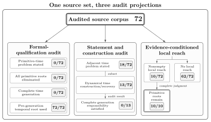

7 Audit of Law-Time Use and Nonachievement of Primitive-Time Premises
The physical establishment of a time variable appearing in a physical law requires that its time content be physically generated before its use within the law and the derivation of results. On the basis of formal evidence and statement evidence from the 72 audited references, primitive-time roots, generation dependencies, result dependencies, and physical-time qualification are assessed.
7.1 Physical-Time Qualification and Primitive-Time Inputs
This subsection defines the grounding obligations of physical time content, the dependence of result carriers on that content, the distinction between evaluation success and physical-time qualification, and primitive-time inputs. A time variable appearing in a physical law serves as an argument for state change, evolution, propagation, comparison, and evaluation. Its physical use requires the identity of time values, their before-and-after order, the equivalence of time intervals, scale and unit, correspondence across locations, correspondence with clock states, and correspondence with observational, recording, and experimental procedures.
By Proposition 2.12, Proposition 3.26, and Corollary 4.190, the generation dependence from physical-role inputs to the representation-stage completion conditions for the finite family of object-specification indices

is determined by
![\displaystyle\mathsf{RI}[Z_{0}]](math-S7/2da528a9271b19260fa150c0765c7d45b6657b203447475be0298ef01cd6852b.svg)


.
For each , let the complete evaluation specification be


. By Theorem 5.138, motion-description operability is determined by

![\displaystyle\qquad\wedge\mathsf{DynCondAll}\left[\mathsf{Ev}\right]](math-S7/35e547eb73413f35367f846c6f7c1ef912324ccaa4968a51854d4a011de6c46d.svg)
![\displaystyle\Longleftrightarrow\mathsf{DynOperative}\left[\mathsf{Ev}\right]](math-S7/6d8fc65edb2d5b3345d4804fbf3d37b96decb92f903da5740128b7c696a55f81.svg)
. For the law stage, fix the base law datum and base representation associated with the single-object specification in Theorem 5.138. For the differential stage, also fix a differential-evaluation-structure family belonging to the same pair. Law-description operability is determined by

![\displaystyle\qquad\wedge\mathsf{LawCondAll}\left[\mathsf{LawEvalDat}_{o%
\mathchar 44\relax\allowbreak\zeta}\right]](math-S7/6dfc6969480eea6d75b33c79f5314c7196ce1dbd5c69d94a655d6fbb6ffa5532.svg)
![\displaystyle\Longleftrightarrow\mathsf{LawOperative}\left[\mathsf{LawEvalDat}%
_{o\mathchar 44\relax\allowbreak\zeta}\right]](math-S7/fabf3e195ea33e464b7fea0c2f61c2a061e018c7179467c8d194e871c53a3bb5.svg)
. Differential-stage operability is determined by
![\displaystyle\qquad\wedge\mathsf{DiffCondAll}\left[\mathsf{EvalStrFam}^{%
\mathrm{diff}}_{o\mathchar 44\relax\allowbreak\zeta}\right]](math-S7/4658d5996ca5b5362b3ec77b08df6c284294173b9e5ef2be77289da0633b9b10.svg)
.
In accordance with Definition 6.181, let the corresponding family of six-failure-series evaluation specifications be
. For an approximation scale

, the value of the audit-report generation map is
![\displaystyle\mathsf{AuditReportOf}\left(\mathsf{AuditData}_{\mathsf{time}}%
\left[\mathsf{Ev}^{\mathrm{fail}}\right];\lambda\right)](math-S7/85cd796d8382851932e1abf4433671f4ab0b5c020abd92373f5b6649538a9e1a.svg)
. By Theorem 6.183 and Corollary 6.187, this audit-report object is uniquely determined by the operational audit data and approximation scale and contains the states of the time-establishment conditions, invalidation positions, invalidation signatures, approximation boundaries, and structural burdens. The audit-state report and audit-diagnostic report are obtained from the corresponding finite operational audit fragment by finitely many operations.
For time content in a physical description, the audit covers the generation path from nontemporal physical input to that time content, transfer paths that preserve time content between distinct positions in the description, and dependency paths to physical results that use the time content. These paths provide the common basis of determination for the theory-specific synthesis in Chapter 8 and the complete, reference-by-reference audit of all 72 references in the Supplement.
Definition 7.1 (Finite Audited Reference Set, Time Content, and Result Carriers).
Let the finite set consisting of the 72 references subject to audit be

and let

.
For each , write the time contents in the source in their order of occurrence as


. Define the set of time contents of the reference

by

. Define the set of time contents of all audited references by

.
Write the set of results derived by each reference as

. Here, a result is an object obtained by a definition, law, inference, calculation, experimental procedure, or observational analysis in the reference and constituting part of the physical claim of that reference.
Definition 7.2 (Grounding Obligations of Physical Time Content).
The correspondence between the operations carried by time content appearing in a physical law and the structures generated through Chapter 4 is defined as follows.
-
1.
The identity of time values is supplied by the comparison equivalence relation
and the canonical comparison quotient
.
-
2.
The before-and-after order of time values is supplied by the -canonical partial order
and the local and global order-coordinate structures.
-
3.
Within the -derived conditional quantitative affine realization
, the equivalence of time intervals is supplied by the quantitative affine difference
.
-
4.
The correspondence between time scale and unit is supplied by a specification of the -derived quantitatively linearly ordered field, quantitative affine action, and quantitative affine difference.
-
5.
Correspondence between time contents belonging to distinct information-coupling positions is supplied by the local order-coordinate chart-transition maps contained in the comparison order atlas
.
-
6.
Correspondence of clock states, displays, pulses, and cycles with time content is supplied by the generation sequence through the -derived arrival map and the comparison-side recovery map to the -derived canonical comparison quotient, order-coordinate structure, and -derived representation coordinates.
-
7.
Correspondence of observation, recording, and experimental procedures with time content is supplied by the generation sequence through the -derived arrival map
the -derived record cell
and the -derived representation image of the record cell
to the -derived canonical comparison quotient, order-coordinate structure, and -derived representation coordinates.


Proposition 7.3 (Dependence of Law-Time Operations on Generated Structures).
Identity determination, order comparison, interval comparison, scale transformation, correspondence between information-coupling positions, clock correspondence, or observation–recording correspondence performed by a physical law on time content takes as input the respective generated structure specified in Definition 7.2.
Time differentiation, time integration, frequency, period, proper time, and descriptions of evolution by an evolution parameter take as input the generated structures corresponding to the time difference, time order, time scale, and time correspondence that they use.
Proof.
The identity of time values is determined by the comparison equivalence classes and canonical comparison quotient of Definition 4.68 and Definition 4.89.
The order of time values is determined by the canonical partial order and order-coordinate quotient of Definition 4.101 and Definition 4.116.
Time intervals, scales, and unit correspondences are determined by the quantitatively linearly ordered field, quantitative affine action, and quantitative affine difference of Definition 4.148.
Correspondence between information-coupling positions is determined by the local order-coordinate chart-transition maps contained in the comparison order atlas of Definition 4.128.
Correspondence with clock states, displays, pulses, and cycles is determined by the -derived source-induced arrival preorder of Definition 4.95, the comparison-side recovery map of Definition 3.21, and the generation sequence comprising the canonical comparison quotient, order-coordinate structure, and representation coordinates.
Correspondence with observation, recording, and experimental procedures is determined by the -derived arrival map, the -derived record cell of Definition 3.15, the -derived representation image of the record cell of Definition 4.159, and the -derived representation coordinates.
Therefore, every law-time operation takes as input the generated structure corresponding to the time content used by that operation. ∎
Definition 7.4 (Time-Content Transfer Events and Result Prerequisites).
For each , write the set of time-content transfer events within the reference as

. For each , represent the source-content set and target-content set of the transfer event


by

.
For each , represent the set of time contents used in deriving the result


by

.
Definition 7.5 (Within-Reference Time-Content Transfer Reachability).
For each , define the within-reference time-content transfer-reachability relation by


. The superscript
denotes the transitive closure of a binary relation.
Proposition 7.6 (Condition for Time-Content Participation in Result Derivation).
For each

, if

![\displaystyle\quad\vee\left[\exists y\in\mathsf{ResultPrereq}_{R\mathchar 44%
\relax\allowbreak\eta}:x\mathrel{\rightsquigarrow_{R}^{\mathrm{time\mathchar 4%
4\relax\allowbreak content}}}y\right]](math-S7/bb3400596b2878c2022cd15655bc3578bac4f9653bc6b3036709108873cbb3cf.svg)
holds, then the time content
participates in the derivation sequence of the result
.
The same condition determines participation in result derivation for time content used in a time derivative, time integral, frequency, period, proper time, or evolution parameter.
Proof.

In the second case, there exists some such that

. By Definition 7.5, a finite sequence of time-content transfer events connects
to

. Moreover, ; therefore,
participates, through the time-content transfer sequence, in deriving the result
.
The same argument applies to a time derivative, time integral, frequency, period, proper time, and evolution parameter when the corresponding time content belongs to the direct result prerequisites or reaches a result prerequisite by transfer. ∎
Definition 7.7 (Evaluation Success and Physical-Time Qualification).
The mathematical consistency of each reference means that the conclusions in the reference follow from its adopted premises, definitions, and rules of inference.
Predictive performance means that observable outputs are calculated from the theoretical structure in the reference. Empirical fit means that the correspondence between those outputs and values obtained by experiment or observation satisfies the evaluation conditions in the reference.
A physical-law time variable acquires physical-time qualification when the identity, before-and-after order, intervals, scale, correspondence between information-coupling positions, clock correspondence, and observation–recording correspondence listed in Definition 7.2 are generated from nontemporal physical input.
Proposition 7.8 (Non-Entailment of Physical-Time Qualification by Evaluation Success).
The simultaneous satisfaction of mathematical consistency, predictive performance, and empirical fit does not entail physical-time qualification of a physical-law time variable. That is,

Proof.
Given equations of motion and initial values with a real-valued time variable as input, solutions conforming to the adopted rules of inference, predicted values, and correspondences with observed values can be constructed. This construction does not include as premises maps or relations that generate, from nontemporal physical input, the identity, order, intervals, and scale of the values of the time variable, correspondence between information-coupling positions, clock correspondence, and observation–recording correspondence.
By Definition 7.7, mathematical consistency, predictive performance, and empirical fit evaluate inferences, outputs, and value correspondences that use a given time variable. Physical-time qualification evaluates the generation of the time content itself that the time variable uses.
Therefore, even in a description in which the former three evaluations hold simultaneously, there exists a construction that does not take as input the generated structures of Definition 7.2. Hence, physical-time qualification does not follow from simultaneous satisfaction of the three evaluations. ∎
Corollary 7.9 (Time-Content Dependence under Evaluation Success).
For each , when the time content satisfies the condition in Proposition 7.6, the satisfaction of mathematical consistency, predictive performance, or empirical fit preserves the direct dependence or transfer-reachability dependence from

to the result.
Proof.
By Proposition 7.6,
either belongs directly to the result prerequisites or reaches a result prerequisite by transfer. By Proposition 7.8, evaluation success does not entail the generation of the time content itself. Therefore, after evaluation success has been established, the dependency relation from
to the result remains in force. ∎
Definition 7.10 (Primitive-Time Input).
For each , suppose that the time content
is entered into the physical description in the reference and is used in a law operation or result derivation before the structure required for the use of
among the identity, before-and-after order, interval, scale, correspondence between information-coupling positions, clock correspondence, or observation–recording correspondence listed in Definition 7.2 is generated from nontemporal physical input. Then
is called a primitive-time input of the reference
.
Theorem 7.11 (Failure of Physical-Time Qualification for a Primitive-Time Input).
For a reference , a primitive-time input lacks physical-time qualification.
Proof.
By Definition 7.10, at least one of the identity, before-and-after order, interval, and scale of the time values required for the use of
or their correspondence between information-coupling positions, clock correspondence, or observation–recording correspondence enters a law operation or result derivation before the corresponding generated structure.
By Definition 7.2 and Proposition 7.3, these time operations take as input their respective comparison equivalence relation, canonical comparison quotient, order-coordinate structure, quantitative affine realization, comparison order atlas, -derived arrival–recovery structure, or -derived observation–recording structure.
For a primitive-time input, the required time content is supplied to a law operation or result derivation before these generated structures. Therefore, the generation dependence from nontemporal physical input to that time content does not hold, and the physical-time qualification of Definition 7.7 is not satisfied. ∎
Corollary 7.12 (Inheritance of Primitive-Time Dependence by Results).
When, for a reference , a primitive-time input , and a result satisfy the result-derivation participation condition of Proposition 7.6, the result
depends on time content that lacks physical-time qualification.
Proof.
By Proposition 7.6,
either belongs to the direct prerequisites of the result
or reaches a result prerequisite through a time-content transfer sequence. Therefore,
depends on the time content
that lacks physical-time qualification. ∎
Proposition 7.13 (Failure of Evaluation Success to Complete a Primitive-Time Input).
In a reference that uses a primitive-time input, even simultaneous mathematical consistency, predictive performance, and empirical fit do not establish physical-time qualification of the primitive-time input.
Proof.
By Proposition 7.8, physical-time qualification does not follow from the simultaneous satisfaction of mathematical consistency, predictive performance, and empirical fit.
By Theorem 7.11, for a primitive-time input, the generation dependence required for the use of its time content does not hold. The three forms of evaluation success do not add that generation dependence. Therefore, physical-time qualification of the primitive-time input is not established. ∎
Proposition 7.14 (Loss of Generation-Assessment Discrimination under Admission of Primitive Time).
If an assessment of the establishment of time generation admits a primitive-time input as sufficient temporal input, time content generated from nontemporal physical input cannot be distinguished in the assessment result from time content entered before the generated structure.
Proof.
For each obligation in Definition 7.2, consider time content obtained through the corresponding generated structure. Time content carrying the same identity, order, interval, scale, correspondence between information-coupling positions, clock correspondence, or observation–recording correspondence can also be placed at the input to a law operation or result derivation in accordance with Definition 7.10.
An assessment that admits the primitive-time input as sufficient temporal input maps the former generation path and the latter prior input to the same establishment result. Therefore, its assessment result does not distinguish the presence or absence of a generation path.
An assessment of the establishment of time generation evaluates whether the generation dependence from nontemporal physical input to time content holds. An assessment that does not distinguish the presence or absence of a generation path cannot distinguish the establishment and invalidation of time generation. ∎
Corollary 7.15 (Generation-Priority Condition for a Physical-Law Time Variable).
For a physical-law time variable to be physically established, the generated structure corresponding to the time content used by that time variable must be established before law operations and result derivation.
Proof.
By Theorem 7.11, a primitive-time input used before the generated structure lacks physical-time qualification. By Proposition 7.14, admission of a primitive-time input does not distinguish the establishment and invalidation of time generation. Therefore, physical establishment of a physical-law time variable requires prior establishment of the corresponding generated structure. ∎
Definition 7.16 (Scope of the Audited Reference Set).
The set of Definition 7.1 consists of 72 references whose source locations, time contents, transfers, and result dependencies are identified and whose generation dependencies from nontemporal physical input are audited.

Each reference contains at least one of the following uses of time.
-
1.
An independent variable in an equation of motion, field equation, state-evolution equation, or stochastic-evolution equation.
-
2.
Simultaneity, coordinate time, proper time, spacetime interval, or causal order.
-
3.
A clock, period, frequency, standard, synchronization, or timekeeping procedure.
-
4.
Thermodynamic evolution, statistical evolution, irreversibility, or an arrow of time.
-
5.
Quantum measurement, quantum correlation, a constrained system, or an evolution description from a fundamental equation without time.
-
6.
Gravity, cosmology, quantum gravity, emergent spacetime, or time reconstruction.
-
7.
Temporal correspondence appearing in an experimental arrangement, observational record, or data analysis.
For each , the audit input consists of the corresponding source locations, time contents, transfers, result dependencies, and source evidence for determining the generation dependencies from nontemporal physical input.
Proposition 7.17 (Reference Domain of Cross-Reference Claims).
The quantification domain of propositions across the audited reference set is . Each reference-specific determination takes the corresponding source locations, time contents, transfers, and result dependencies as evidence inputs.
Proof.
Definition 7.1 types references, time contents, and results for each . Definition 7.16 defines the scope of the audited reference set and the reference-specific audit inputs. Therefore, the quantification domain of the cross-reference audit and the evidence inputs for each reference-specific determination are determined. ∎
7.2 Evidence-Bearing Generation-Dependency Audit Method
Audit-boundary nodes, audit-boundary edges, generation traces, obligation atoms, primitive-time roots, and result dependencies are determined for each reference. For each reference, define the object of the generation-dependency audit as a finite node set with three components: physical or mathematical boundary claims, time contents, and reference-specific results.
Definition 7.18 (Audit-Boundary Nodes).
Define the set of audit-boundary-node types by


The three elements of this set are pairwise distinct.
For each , call a claim partitioned into a minimal verifiable unit from a formal definition, equation, proposition, or an accompanying explicit statement in the source an audit-claim record. Let
be the first component, and let an audit-claim record carrying, as attributes, its source location, attributed subject, degree of certainty, evidence-expression class, and a reference to its source context be the second component. Denote the finite set of such ordered pairs by

Define the item-category domain for time contents and reference-specific results by , and define the item families by


For each , define the node set and node-forming map by


Define the set of audit-boundary nodes by


Define the node-type map by

Proposition 7.19 (Component Decomposition of Audit-Boundary Nodes).
For each

exactly one of
holds. Consequently,

assigns a unique node type to each audit-boundary node.
Proof.
By Definition 7.18, is the disjoint union of the three node sets. The three components are pairwise disjoint, and their union equals . Hence every audit-boundary node belongs to exactly one of the three components. By the definition of the node-type map, each component is assigned one node type. ∎
Definition 7.20 (Five-Type Classification of Time Content).
Define the codomain of the five time-content types by


The five values denote, respectively, a member of a boundary, stage, or transition-position family; content dependent on the same family; content on a branch outside the boundary; content belonging to a separate requirement family; and lexical or illustrative content.
For each , provide the five-type classification map of time content
Assign each time content one type according to the function given by a definition, equation, proposition, or explicit statement in the source.
Definition 7.21 (Eight-Axis Classification of Temporal Order Structure).
Define the codomain of the eight temporal-order-structure axes by

The eight values denote, respectively, endpoint, instant, interval boundary, phase boundary, turning position, order relation, orientation, and transition position.
For each , provide the eight-axis classification map of temporal order structure

For each , impose

and

Proposition 7.22 (Structural Attributes of Time-Content Nodes).
For each , the time-content node has the unique attribute
Proof.
The type-classification map of Definition 7.20 and the axis-classification map of Definition 7.21 both have domain

By Definition 7.18, the time-content node-forming map is injective. Hence every time-content node uniquely carries the type value and axis set belonging to the single time content from which it was formed. ∎
Definition 7.23 (Common Type of Structural Signatures and Member Structural Signature).
For each , define the signature-kind set and the type of the structural-signature family by


For each member
of the member kind, define its signature by


The three components denote, respectively, membership in a transfer input set, membership in a transfer output set, and membership in a result prerequisite.
Definition 7.24 (Dependent-Content Structural Signature).
For each , define the signature of each dependent content
of the dependent-content kind by
![\displaystyle:=\Biggl{(}\mathbf{1}\left[\begin{aligned} \exists y\in&\left(%
\mathsf{TypeOf}^{\mathrm{time\mathchar 44\relax\allowbreak ord\mathchar 44%
\relax\allowbreak struct}}_{R}\right)^{-1}\left(\left\{\mathsf{Type}^{\mathrm{%
time\mathchar 44\relax\allowbreak ord\mathchar 44\relax\allowbreak struct}}_{%
\mathrm{member}}\right\}\right):\\
&x\mathrel{\rightsquigarrow_{R}^{\mathrm{time\mathchar 44\relax\allowbreak
content%
}}}y\end{aligned}\right]\mathchar 44\relax\allowbreak](math-S7/40ec48b35a5d09b40eda52b4b37cb98e796f7a73b182a569fecf705677041f64.svg)
![\displaystyle\qquad\mathbf{1}\left[\begin{aligned} \exists y\in&\left(\mathsf{%
TypeOf}^{\mathrm{time\mathchar 44\relax\allowbreak ord\mathchar 44\relax%
\allowbreak struct}}_{R}\right)^{-1}\left(\left\{\mathsf{Type}^{\mathrm{time%
\mathchar 44\relax\allowbreak ord\mathchar 44\relax\allowbreak struct}}_{%
\mathrm{member}}\right\}\right):\\
&y\mathrel{\rightsquigarrow_{R}^{\mathrm{time\mathchar 44\relax\allowbreak
content%
}}}x\end{aligned}\right]\mathchar 44\relax\allowbreak](math-S7/701a9837f60cb0917991225aefa528210a31a7479009a003bd0ed72b72bd8b1f.svg)
The three components denote, respectively, transfer reachability to a member, transfer reachability from a member, and membership in a result prerequisite.
Proposition 7.25 (Totality and Uniqueness of Structural Signatures).
For each , every member-type time content belongs to one fiber of , and every dependent-content-type time content belongs to one fiber of .


Proof.
Each component of an indicator function takes one of
as its value. Hence each signature map assigns every element of its domain a unique element of
The fibers of a map decompose its domain into pairwise disjoint inverse images; hence every element belongs to one fiber. ∎
Definition 7.26 (Audit-Boundary Support Sets and Audit-Boundary Edges).
For each , assume that the audited transfer-event set is finite. Define the audit-edge category domain, the edge carriers for each category, and the set of audit-boundary-edge types by


For each , let the source-support map be


For each ,
consists of boundary-claim nodes that state the transfer input domain, output domain, and direction. For each ,
consists of boundary-claim nodes that state the derivation of the result.
Define the edge set and edge-forming map for each edge category by


This map is injective, and its image equals the corresponding edge set.
Define the set of audit-boundary edges by
Define the edge-type map by
Definition 7.27 (Audit-Boundary Directed Hypergraph).
For each , define the input and output maps of audit-boundary edges by


For each and each , define the corresponding inputs and outputs, respectively, by
![\displaystyle:=\mathsf{Support}^{\mathrm{audit\mathchar 44\relax\allowbreak
transfer%
}}_{R}(\epsilon)\cup\mathsf{NodeOf}^{\mathrm{audit\mathchar 44\relax%
\allowbreak time}}_{R}\left[\mathsf{TransferIn}_{R\mathchar 44\relax%
\allowbreak\epsilon}\right]\mathchar 44\relax\allowbreak](math-S7/db835732a8ee94aa42cfa5e671c9f029da28f9a8776bfd31cbd3ad8f83f093e4.svg)
![\displaystyle:=\mathsf{Support}^{\mathrm{audit\mathchar 44\relax\allowbreak
result%
}}_{R}(\eta)\cup\mathsf{NodeOf}^{\mathrm{audit\mathchar 44\relax\allowbreak
time%
}}_{R}\left[\mathsf{ResultPrereq}_{R\mathchar 44\relax\allowbreak\eta}\right]%
\mathchar 44\relax\allowbreak](math-S7/6f2ef5e7b5b7a299fc1ddc934e80a31d3219e8aa8398cb162ff7e6a782ef38e8.svg)
Define the audit-boundary directed hypergraph by


The simultaneous establishment of all nodes in an edge’s input set is the establishment condition for the nodes in that edge’s output set.
Let the specified subset consisting of physical or mathematical boundary-claim nodes independent of the derivation of time content be

and call it the physical-input initial set.
Definition 7.28 (Generation Initial Set and Reference Formal-Evidence Environment).
For each , let the specified subset consisting of boundary-claim nodes that provide the reference-specific formal derivation be

and call it the reference formal-evidence environment. The physical-input initial set and the reference formal-evidence environment satisfy
Proposition 7.29 (Cardinalities of the Audit-Boundary Node and Edge Sets).
For each , the audit-boundary node set and the audit-boundary edge set are finite, and


Proof.
By Definition 7.18, the audit-boundary node set is the disjoint union of the physical- or formal-input claim-node set, the time-content node set, and the result node set. The time-content node-forming map and the result node-forming map provide bijections from, respectively,
to the corresponding node sets. Hence the first equality holds.
By Definition 7.26, the audit-boundary edge set is the disjoint union of the transfer-edge set and the result-edge set. The transfer-edge-forming map and the result-edge-forming map provide bijections from, respectively,
to the corresponding edge sets. Hence the second equality holds. The finiteness of each disjoint-union component implies that the audit-boundary node set and the audit-boundary edge set are finite. ∎
Definition 7.30 (Reachability Stages and Reachable Set on the Audit-Boundary Directed Hypergraph).
For each and , define the initial reachability stage by

For each

define the successor reachability stage by


Define the audit-reachable set by

Proposition 7.31 (Finite Stabilization of Audit Reachability Stages).
For each and , the reachability-stage sequence is monotone increasing with respect to inclusion. Moreover, if

then

holds.
Proof.
The recursion in Definition 7.30 expresses each stage as its union with the immediately preceding stage. The reachability-stage sequence is therefore monotone increasing.
The audit-boundary node set is finite, and every strict inclusion adds at least one node. Once two adjacent stages coincide, the same recursion makes all subsequent stages coincide. Hence the reachability-stage sequence stabilizes by stage
and its stable value equals the audit-reachable set. ∎
Definition 7.32 (Audit-Generation Traces).
For each , , and , let


be the set of all finite edge sequences satisfying the following conditions.
For an edge sequence of length , , define

and
For each
require
and

and further require

An edge sequence satisfying these conditions is called an audit-generation trace. The edge sequence of length zero belongs to the set when

Lemma 7.33 (Equivalence of Audit Reachability and Audit-Generation Traces).
For each , , and ,

holds.
Proof.
For the forward direction, a node in the initial reachability stage has a corresponding edge sequence of length zero. A node first added at reachability stage

belongs to the output of an audit-boundary edge whose input set is contained in reachability stage

Ordering by stage the finite edge sequences corresponding to the input nodes and appending the audit-boundary edge yields a finite edge sequence that satisfies the all-input containment condition in Definition 7.32. Induction over reachability stages therefore gives an audit-generation trace for every node in the audit-reachable set.
For the reverse direction, the terminal node of an audit-generation trace of length zero belongs to the initial reachability stage. In an audit-generation trace of length

all inputs of the terminal edge are contained in the preceding trace-node set. Induction on edge-sequence length, together with the recursion in Definition 7.30, shows that the terminal node belongs to a finite reachability stage. By Proposition 7.31, that node belongs to the audit-reachable set. ∎
Definition 7.34 (Structural and Essential Influence Regions of a Physical-Input Node).
For each and , define the initial influence stage by

For each
define the successor influence stage by

![\displaystyle\quad\cup\bigcup_{\begin{subarray}{c}\mathsf{AuditEdge}\in\mathsf%
{Edge}^{\mathrm{audit\mathchar 44\relax\allowbreak bd}}_{R}\\
\mathsf{In}^{\mathrm{audit}}_{R}\left(\mathsf{AuditEdge}\right)\subseteq%
\mathsf{Reach}^{\mathrm{audit}\mathchar 44\relax\allowbreak(k)}_{R}\left(%
\mathsf{Init}^{\mathrm{audit\mathchar 44\relax\allowbreak phys}}_{R}\right)\\
\mathsf{In}^{\mathrm{audit}}_{R}\left(\mathsf{AuditEdge}\right)\cap\mathsf{%
Influence}^{\mathrm{audit}\mathchar 44\relax\allowbreak(k)}_{R}\left(\mathsf{%
InitNode}\right)\neq\varnothing\end{subarray}}\mathsf{Out}^{\mathrm{audit}}_{R%
}\left(\mathsf{AuditEdge}\right)](math-S7/e754ebbe9a625ac375ec73fb3c951915866eb1e0b5b3b3dad8706e9554b485cb.svg)
Define the structural influence region by

Define the essential influence region by


Proposition 7.35 (Inclusion of the Essential Influence Region in the Structural Influence Region).
For each and ,
holds.
Proof.
Proceed by induction over the reachability stages from the physical-input initial set. At the initial stage,
is the only node not added to the reachable set from the initial set with that node removed, and this node belongs to the initial influence stage.
At reachability stage
take a node

that first belongs to the essential influence region. All inputs of an audit-boundary edge
that outputs this node belong to reachability stage
Suppose that all inputs belong to the reachable set from
The same edge would then place
in that reachable set, contrary to the definition of the essential influence region. Hence the edge has an input node that belongs to the essential influence region at a preceding stage. By the induction hypothesis, that input node belongs to influence stage
By the recursion in Definition 7.34,
belongs to influence stage
Finite stabilization yields the inclusion. ∎
Definition 7.36 (Reference-Specific Obligation Atoms).
For each , define reference-specific obligation atoms by the following four types. An obligation atom is the smallest unit of obligation to which one audit state is assigned in the generation-dependency audit.
-
1.
A boundary-claim atom is .
-
2.
A time-content atom is , and its audit-boundary node is .
-
3.
A transfer-event atom is , and its audit-boundary edge is
-
4.
A result atom is , and its audit-boundary edge and result node are


Definition 7.37 (Typed Audit States of Reference-Specific Obligation Atoms).
For each , describe the typed audit states of reference-specific obligation atoms by the following components.
For a boundary-claim node , the state component is
For a time content , the state component is
For a transfer event , the state component is


For a result , the state component is


Proposition 7.38 (Determinacy of Typed Audit States).
For every reference-specific obligation atom, all components in Definition 7.37 are uniquely determined by , , , and . Consequently, the reachability state of the same obligation atom in the same reference is unique.


Proof.
The node type and edge type are respectively the values of the maps
The structural type and axis set of a time content are respectively the values of the maps

The support set of a transfer event or result is recovered as the intersection of the corresponding edge input with the claim-node set. Time-content inputs and outputs are uniquely recovered by taking the inverse images of the time-content-node components of the corresponding edge inputs and outputs under the injective time-content node-forming map.
By Proposition 7.31, the audit-reachable set from the physical-input initial set is uniquely determined after finitely many stages. Each indicator-function value is therefore uniquely determined, and all state components are fixed. ∎
Definition 7.39 (Audit-Generated Time Contents, Primitive-Time Roots, and Audit-Generated Results).
For each , define the audit-generated time-content set, primitive-time-root set, audit-generated result set, and result set outside the generation-reachable region, respectively, by

![\displaystyle:=\left(\mathsf{NodeOf}^{\mathrm{audit\mathchar 44\relax%
\allowbreak time}}_{R}\right)^{-1}\left[\mathsf{Reach}^{\mathrm{audit}}_{R}%
\left(\mathsf{Init}^{\mathrm{audit\mathchar 44\relax\allowbreak phys}}_{R}%
\right)\right]\mathchar 44\relax\allowbreak](math-S7/bd861958aea7d383978f7c212e824036fd95255620dbc6eec909bfc21ad5d210.svg)

![\displaystyle:=\left(\mathsf{NodeOf}^{\mathrm{audit\mathchar 44\relax%
\allowbreak result}}_{R}\right)^{-1}\left[\mathsf{Reach}^{\mathrm{audit}}_{R}%
\left(\mathsf{Init}^{\mathrm{audit\mathchar 44\relax\allowbreak phys}}_{R}%
\right)\right]\mathchar 44\relax\allowbreak](math-S7/29061c792200ac4e095f02b48b48289d34b7c9dd805acba123a69b52130c2ab0.svg)

Definition 7.40 (Generation Reach and Evidence-Conditioned Dependency Reach).
For each , define the generation-reachable set by

For each , define the evidence-conditioned dependency-reachable set by


![\displaystyle\hskip 80.00012pt\cup\mathsf{NodeOf}^{\mathrm{audit\mathchar 44%
\relax\allowbreak time}}_{R}\left[\mathsf{RootSeed}\right]\Bigr{)}](math-S7/9013aa38ccf3763e869d3a746cc21f297dd43acd739631cb5a10504b57386a17.svg)
Definition 7.41 (Time Contents Reachable under the Evidence Environment).
For each , define the set of time contents reached after adding the reference formal-evidence environment without supplying primitive-time roots as seeds by
![\displaystyle\left(\mathsf{NodeOf}^{\mathrm{audit\mathchar 44\relax\allowbreak
time%
}}_{R}\right)^{-1}\left[\mathsf{Reach}^{\mathrm{audit}\mid\mathrm{evid}}_{R}%
\left(\varnothing\right)\right]](math-S7/e42fcf27a8cfc2c88e2f89b32fade1e6e32ec47a7b1e9c96923371211b38302b.svg)
Call the assessment based on the audit-generated time-content set the LCTR complete-generation assessment. Call the assessment based on the foregoing set of time contents reachable under the evidence environment the within-reference evidence-conditioned local-reach assessment. Below, abbreviate these as the complete assessment and the local-reach assessment, respectively. The latter is a reachability assessment that adds, as the reference formal-evidence environment, the physical-carrier processing or construction procedures explicitly stated in that reference. Because the two assessments have different starting sets, nonemptiness under the latter does not entail nonemptiness under the former.

In the reference-specific assessment values, abbreviate the number of time contents generated under the complete assessment as “complete,” the number of time contents reached under the local-reach assessment as “local reach,” and the number of primitive-time roots that remain after the latter assessment as “remaining roots.”
Definition 7.42 (Nongenerated Results Reachable under the Evidence Environment and Residual Results).
For each , define the set of nongenerated results reachable under the evidence environment by

Define the residual result set by

Proposition 7.43 (Time-Antecedent Preservation Condition).
For each , if every satisfies


then


holds.
Proof.
By Definition 7.27,

The disjoint-union decomposition in Definition 7.18 implies that the initial reachability stage has empty intersection with the time-content node set.
Suppose that reachability stage
has empty intersection with the time-content node set. By hypothesis, every audit-boundary edge that outputs a time-content node has at least one time-content node among its inputs. Its input set is therefore not a subset of reachability stage
Consequently, reachability stage
also has empty intersection with the time-content node set. Induction over reachability stages and Proposition 7.31 give the claim. ∎
Definition 7.44 (Evidence-Conditioned Primitive-Time-Root Support Family and Minimal Support Family).
For each and , define the evidence-conditioned primitive-time-root support family by

Define the minimal primitive-time-root support family by


Proposition 7.45 (Upward Closure and Minimal Elements of the Evidence-Conditioned Primitive-Time-Root Support Family).
For each and , the evidence-conditioned primitive-time-root support family is upward closed under inclusion. Moreover, if

then
holds, and any two distinct elements of the minimal primitive-time-root support family are incomparable under inclusion.
Proof.
To prove upward closure, take arbitrary and . Induction on the recursion in Definition 7.30 shows that inclusion of the starting sets entails inclusion at every reachability stage. Hence holds.


Because the primitive-time-root set is finite, its power set and the evidence-conditioned primitive-time-root support family are finite. Choose an element of minimum cardinality from the nonempty evidence-conditioned primitive-time-root support family. Every element of the same support family contained in that element equals it by minimality of cardinality. Hence the minimal primitive-time-root support family is nonempty.
If one of two distinct elements of the minimal primitive-time-root support family were contained in the other, the minimality of the containing element would make them equal. Thus two distinct elements are incomparable under inclusion. ∎
Definition 7.46 (Finite Root-Support Antichain Update).
For a family of subsets of the primitive-time-root set

define minimization under inclusion by

For each , define the initial root-support antichain assignment

by
![\displaystyle:=\begin{cases}\left\{\varnothing\right\}\mathchar 44\relax%
\allowbreak&\mathsf{AuditNode}\in\mathsf{Env}^{\mathrm{audit\mathchar 44\relax%
\allowbreak evid}}_{R}\mathchar 44\relax\allowbreak\\[4.0pt]
\left\{\left\{x\right\}\right\}\mathchar 44\relax\allowbreak&\mathsf{AuditNode%
}=\mathsf{NodeOf}^{\mathrm{audit\mathchar 44\relax\allowbreak time}}_{R}(x)%
\mathchar 44\relax\allowbreak\quad x\in\mathsf{TimeContent}^{\mathrm{audit%
\mathchar 44\relax\allowbreak root}}_{R}\mathchar 44\relax\allowbreak\\[4.0pt]
\varnothing\mathchar 44\relax\allowbreak&\text{otherwise}\end{cases}](math-S7/c38eb82f1308f6fd187214502561dbacaa84eb82eefa162992dce2a60ebb6f71.svg)
For a map

that assigns a support antichain to each node, and for each , define the hyperedge root-support update by
![\displaystyle\qquad\cup\left\{\begin{aligned} &\bigcup_{\mathsf{InputNode}\in%
\mathsf{In}^{\mathrm{audit}}_{R}\left(\mathsf{AuditEdge}\right)}\mathsf{%
RootSeed}_{\mathsf{InputNode}}\\[-2.0pt]
&\Bigm{|}\ \begin{aligned} &\mathsf{AuditNode}\in\mathsf{Out}^{\mathrm{audit}}%
_{R}\left(\mathsf{AuditEdge}\right)\mathchar 44\relax\allowbreak\\
&\forall\mathsf{InputNode}\in\mathsf{In}^{\mathrm{audit}}_{R}\left(\mathsf{%
AuditEdge}\right)\mathchar 44\relax\allowbreak\\
&\mathsf{RootSeed}_{\mathsf{InputNode}}\in\mathcal{S}\left(\mathsf{InputNode}%
\right)\end{aligned}\end{aligned}\right\}\Biggr{)}](math-S7/a8ea788d401df1190bea777568e8fb988650fd85646b8f354a4d56a3a0460e1e.svg)
For a finite edge sequence , define

and

When the terminal assignment satisfies
say that the finite edge sequence saturates the root-support antichain.
Proposition 7.47 (Termination, Scan-Order Independence, and Completeness of the Finite Root-Support Antichain Update).
For each , there exists a finite edge sequence that saturates the root-support antichain.
If two finite edge sequences saturate the root-support antichain, their terminal assignments coincide. Moreover, for any , the terminal assignment

satisfies
.
Proof.
Represent the support antichain at each node by its upward closure. The hyperedge root-support update adds to the upward closure at that node the upward closure of the union of supports selected one from each input node of the hyperedge. Minimization under inclusion does not change the upward closure. The hyperedge root-support update is therefore monotone and extensive with respect to the inclusion order on upward closures over the finite set
. Repeatedly selecting a hyperedge that produces a change reaches a fixed point for all hyperedges after finitely many steps.
The initial root-support antichain assignment assigns the empty support to the reference formal-evidence environment nodes and the singleton support containing only that root to each primitive-time-root node. Induction on the reachability stages in Definition 7.30 shows that the upward closure of the support family at each node at the fixed point equals the family of all subsets of primitive-time roots that place that node in the evidence-conditioned dependency-reachability set. The converse follows by induction that maps each hyperedge root-support update to one stage of the reachability recursion.
The fixed point is therefore unique and independent of the order in which the edges are scanned. Taking the inclusion-minimal elements at a result node yields the minimal primitive-time-root support family in Definition 7.44 . ∎
Definition 7.48 (Residual Result Sets with Respect to Primitive-Time Roots).
For each , define the primitive-time-root-dependent result set by

.
Define the result set that remains unreachable after addition of primitive-time roots by
.
Proposition 7.49 (Four-Class Partition of Reference-Specific Results).
For each ,


holds. Moreover,

and

hold.
Proof.
The inclusion of starting sets in Definition 7.28 and monotonicity of reachability give

. The evidence-environment-reachable nongenerated result set is obtained by removing the audit-generated results from the results reachable from the evidence-conditioned empty-root starting set. The two sets are therefore disjoint.
The residual result set is obtained by removing the evidence-environment-reachable nongenerated result set from the result set outside the generation-reachability region. For each residual result, the evidence-conditioned primitive-time-root support family is either empty or nonempty. The former case gives the result set that remains unreachable after addition of primitive-time roots; the latter gives the primitive-time-root-dependent result set. Hence the four sets are pairwise disjoint and their union is the entire result set. Applying the definitions to the result set outside the generation-reachability region and to the residual result set gives the other two equalities. ∎
Definition 7.50 (Primitive-Time-Root–Result Dependency Relations).
For each , define the primitive-time-root–result dependency relation by


.
Define the essential primitive-time-root–result dependency relation by

.
Proposition 7.51 (Inclusion and Result Projection of Primitive-Time-Root–Result Dependency Relations).
For each ,
holds. Moreover,

holds.
Proof.
The first inclusion follows from Definition 7.50 .
Take any . By Definition 7.48 the primitive-time-root support family is nonempty. By Proposition 7.45 the minimal primitive-time-root support family is also nonempty. Take any

. Because the evidence-conditioned primitive-time-root support family of a residual result does not contain the empty set, there exists some
such that

holds.
The reverse inclusion follows from
. ∎
Definition 7.52 (Reference Subsets Induced by Primitive-Time Roots and the Result Decomposition).
Define the result-class index domain by

. In order, the indices denote nongenerated results reachable under the evidence environment, residual results, primitive-time-root-dependent results, results that remain unreachable after addition of primitive-time roots, and results outside the generation-reachability region.
Define the set of references containing primitive-time roots by

.
For each , define the set of references containing results in the corresponding class by
.
Proposition 7.53 (Membership Inclusion for Primitive-Time-Root-Dependent References).
holds.
Proof.
Take any

. By Definition 7.52, there exists some . By Definition 7.48, . Choose


from this support family.
Because the result is residual, it is not reachable from the empty-root starting set augmented by the evidence environment. Hence

By Definition 7.44, , so the primitive-time-root set is nonempty. Thus

By Proposition 7.49,
Because the left-hand side is nonempty, so is the right-hand side, and therefore

follows. ∎
Proposition 7.54 (Result Reachability Criterion after Addition of Primitive-Time Roots).
For each , assume that

. Assume further that

and

hold. Then

hold. Moreover,

hold.
Proof.
The empty intersection of the generation-reachability set and the time-content node set, together with Definition 7.39, shows that the set of audit-generated time contents is empty and that the primitive-time-root set equals the entire time-content set.
Take any

. Because the result node belongs to the evidence-conditioned dependency-reachability set after all primitive-time roots have been added,
holds. By Definition 7.48, every residual result is a primitive-time-root-dependent result, and the result set that remains unreachable after addition of primitive-time roots is empty.
The nonemptiness of the time-content set and of the residual result set, together with Definition 7.52, gives the three reference memberships. ∎
Proposition 7.55 (Criterion for All Primitive-Time Roots and Dependence of All Results).
Suppose that each satisfies the assumptions of Proposition 7.54 . Assume further that
and

hold. Then, in addition to the conclusion of that proposition,


hold.
Proof.
Definition 7.28 and monotonicity of reachability give . By the assumption and Definition 7.39, the set of audit-generated results is empty, and the result set outside the generation-reachability region equals the entire result set. By the assumption and Definition 7.42, the evidence-environment-reachable nongenerated result set is empty, and the residual result set equals the entire result set.

The conclusion of Proposition 7.54 then follows. ∎
Definition 7.56 (Reference Set in Which All Time Contents Are Primitive-Time Roots).
Define the set of references for which the audit-generated time-content set is empty and the primitive-time-root set equals the entire time-content set by

Definition 7.57 (Reference Set in Which All Results Depend on Primitive-Time Roots).
Define the set of references for which the audit-generated result set is empty and the primitive-time-root-dependent result set equals the entire result set by


Definition 7.58 (Reference Set with All Time Contents as Primitive-Time Roots and All Results Root-Dependent).
Define the intersection of the reference set in which all time contents are primitive-time roots and the reference set in which all results depend on primitive-time roots by

.
Definition 7.59 (Disjoint Unions of Per-Reference Result Classes and Primitive-Time-Root Dependency Relations).
For each , define the per-reference disjoint union of the corresponding result sets by
.
Define the per-reference disjoint unions of the primitive-time-root–result dependency relation and the essential primitive-time-root–result dependency relation, respectively, by


.
Proposition 7.60 (Per-Reference Disjoint-Union Decomposition of Results outside the Generation-Reachability Region).
For the reference subsets,

holds.
For the per-reference disjoint unions,

holds. Moreover,

holds.
Proof.
Applying Proposition 7.49 to each reference shows that the result set outside the generation-reachability region equals the disjoint union of the evidence-environment-reachable nongenerated result set, the primitive-time-root-dependent result set, and the result set that remains unreachable after addition of primitive-time roots. Applying the nonemptiness of each component to Definition 7.52 gives the equality of reference subsets.
For each reference , apply
to the decomposition of results outside the generation-reachability region, and then take the disjoint union over the reference set. This gives the first equality of per-reference disjoint unions. Applying the same Cartesian product to the residual-result decomposition for each reference and taking the disjoint union over the reference set gives the second equality. ∎
Proposition 7.61 (Inclusion and Result Projection in the Per-Reference Disjoint Union of Primitive-Time-Root–Result Dependency Relations).
For the per-reference disjoint unions of the dependency relations,
holds.
For the per-reference disjoint union of the primitive-time-root-dependent result sets,


holds.
Proof.
For each reference , apply
to the inclusion in Proposition 7.51, and then take the disjoint union over the reference set. This gives the first inclusion. Applying the same Cartesian product to the result projection in that proposition and taking the disjoint union over the reference set gives the second equality. ∎
Proposition 7.62 (Component Equalities of Per-Reference Disjoint Unions).
For each and ,
Moreover, for each ,

and

hold.
Proof.
For every disjoint union in Definition 7.59, the collection of second components of elements whose first component is a fixed equals the corresponding per-reference set or per-reference relation. Applying this equality to each disjoint union gives the six equalities. ∎
Definition 7.63 (Change Condition for the Generation-Dependency Audit System).
The input to the generation-dependency audit system consists of the following five items.
-
1.
The audit reference set
-
2.
The time contents, transfer events, results, and result prerequisites of each reference
-
3.
The boundary claim nodes and original-source support sets of each reference
-
4.
The five-type classification of time contents, the eight-axis classification of time-order structures, and the transfer inputs and outputs
-
5.
The physical-input initial set and reference formal-evidence environment


The change condition for the generation-dependency audit system holds if the codomain, domain, map value, set component, or original-source support of any of the five items changes.
Definition 7.64 (Retrospective Generation-Dependency Reaudit).
If the change condition in Definition 7.63 holds, recompute the following for all references in the stated order.
-
1.
The reference-specific time contents, transfer events, results, boundary claim nodes, and original-source support sets.
-
2.
The five types of time contents, eight axes of time-order structure, membership-structure signatures, and dependency-content structure signatures.
-
3.
The audit boundary nodes, audit boundary edges, input and output maps, and audit boundary directed hypergraph.
-
4.
The generation-reachability set from the physical-input initial set, audit-generation traces, structural domains of influence, and essential domains of influence.
-
5.
The audit-generated time contents, primitive-time roots, audit-generated results, and results outside the generation-reachability region.
-
6.
The evidence-conditioned dependency-reachability family, nongenerated results reachable under the evidence environment, residual results, evidence-conditioned primitive-time-root support family, minimal support family, four-class partition of results, and primitive-time-root–result dependency relations.
-
7.
The time-order-structure audit family, reference subsets, and per-reference disjoint unions of result classes and dependency relations.
Even when the audit-input change occurs in only one reference, recompute the per-reference disjoint unions and reference subsets over all references.
Proposition 7.65 (Determinacy of Generation-Dependency Reaudit).
Once the five inputs in Definition 7.63 are specified, the audit boundary directed hypergraph, generation-reachability set, evidence-conditioned dependency-reachability family, primitive-time roots, four-class partition of results, and per-reference disjoint unions of dependency relations obtained in the order specified in Definition 7.64 are uniquely determined.
Proof.
The node-forming and edge-node-forming maps are specified as injections, while the node-type, edge-type, support-set, input, output, and classification maps are specified as maps on their respective domains. Their map values uniquely determine the audit boundary directed hypergraph.
The starting set and recursion uniquely determine each reachability stage, which stabilizes after finitely many stages by Proposition 7.31 . The physical-input initial set uniquely determines the generation-reachability set. Set-builder definitions and set difference then uniquely determine the audit-generated time contents, primitive-time roots, audit-generated results, and results outside the generation-reachability region from the generation-reachability set.
The reference formal-evidence environment and each subset of primitive-time roots uniquely determine the evidence-conditioned dependency-reachability family. The evidence-conditioned dependency-reachability set corresponding to the empty primitive-time-root subset, the audit-generated results, and the results outside the generation-reachability region uniquely determine the nongenerated results reachable under the evidence environment and the residual results. The evidence-conditioned dependency-reachability family uniquely determines the evidence-conditioned primitive-time-root support family and its minimal support family; nonemptiness or emptiness of the same support family uniquely determines the primitive-time-root-dependent results and the results that remain unreachable after addition of primitive-time roots. Consequently, the four-class partition of results, the primitive-time-root–result dependency relations, and all per-reference disjoint unions are also uniquely determined. ∎
Proposition 7.66 (Recomputation Invariance under Stable Audit Inputs).
If the five inputs in Definition 7.63 remain identical after one recomputation over all references, then repeating that recomputation produces an audit boundary directed hypergraph, generation-reachability set, evidence-conditioned dependency-reachability family, primitive-time roots, four-class partition of results, and per-reference disjoint unions of dependency relations identical to the immediately preceding recomputation results.
Proof.
By Proposition 7.65, identical five inputs produce a unique recomputation result. Because the five inputs are identical before and after the repetition, the respective values of the audit boundary directed hypergraph, generation-reachability set, evidence-conditioned dependency-reachability family, primitive-time roots, four-class partition of results, and per-reference disjoint unions of dependency relations also coincide. ∎
Definition 7.67 (Fibers and Zero Fibers of Structure-Signature Maps).
For a map between sets, the inverse image of a singleton in the codomain is called the fiber over that point. If a zero element is specified in the codomain, the fiber over the zero element is called the zero fiber.

Definition 7.68 (Support Antichains).
A family of sets is called an antichain under inclusion if any two distinct members of the family are incomparable under inclusion. An antichain whose members are primitive-time-root support sets is called a support antichain.
Proposition 7.69 (Support-Antichain Property of the Minimal Primitive-Time-Root Support Family).
For each and ,

is a support antichain.
Proof.
Definition 7.70 (Atomic Time Uses and Reference-Specific Classifications of Time Use).
A time use is an occurrence in which one time content is used as a formal input, index, order position, clock reading, interval, evolution variable, or reference boundary in an original-source definition, formula, proposition, or explicit statement. Each time use is associated with an original-source location, one time content, a use role, and an audit state. An atomic time use is the smallest unit audited individually in the finite audit of a reference.
Here, “atomic” denotes the granularity of decomposition in a reference-specific finite audit. “Primitive” in Definition 7.10 denotes the order between the generation of time content and its use within a law.
A time use at whose original-source location a time expression appears directly is called an explicit time use. A time use in which time content is incorporated into the establishment of a definition, relation, order, evolution, observation, or comparison is called a structural time use. Additional classifications, including direct versus derived occurrence and independent root versus structural derivation, are defined separately for each reference according to its formal structure.
A time use presupposed by a definition, law, coordinate, observation, comparison, or derivation of a result is called a law-time use. A time use that gives only an order of presentation or reporting within a reference is called a report-order use.
Definition 7.71 (Time-Use Roles, Original-Source Support, and Audit Branches).
A time-use role is the formal function performed by a time content within a reference. A reference-specific finite audit uses the following roles.
- Interval
-
Gives the separation or order interval between two positions.
- Quantity
-
Uses a time content as a numerical value, difference, rate, scale, or factor in a product.
- Cross-position correspondence
-
Associates states, events, or readings belonging to different positions.
- Clock reading
-
Associates a clock state or clock output with a time content.
- Causal
-
Gives an ordering or dependency condition between cause and effect.
- State evolution
-
Orders a state transformation, trajectory, or evolution equation.
- Stochastic evolution
-
Orders a transition probability, transition rate, or the evolution of a stochastic process.
- Observation record
-
Associates the acquisition, preservation, or arrangement of observational results with a time content.
- Reference boundary
-
Gives the boundary of a starting point, endpoint, reference position, or domain of application.
An original-source support is a record that associates an audit node, audit edge, or result with a reference identifier, original-source location, subject of attribution, evidence type, and conditions of application.
If the same formal evidence gives rise to multiple audit paths, an audit branch is each path distinguished by a finite index. Reachability of results, the supporting-edge set, and inclusion-minimal support are determined separately for each audit branch. Statement evidence is retained as a quotation record containing the original text, a translation, the original-source location, and the minimal context.
Definition 7.72 (Cycles, Residuals, and Completeness Counts in Finite Dependency Structures).
In an audit boundary directed hypergraph, a finite sequence of audit edges is called a directed cycle if the output nodes of each edge connect to the input nodes of the next edge and the output nodes of the terminal edge connect to the input nodes of the initial edge. A maximal connected component consisting of nodes and audit edges that share a directed cycle is called a cyclic component.
An audit edge has one-edge self-dependence if

holds.
Original-source evidence acquired for audit but corresponding to none of the audit-claim records, the original-source supports of audit edges, or the original-source supports of results is called unmatched evidence.
A completeness count vector is a finite sequence, arranged in the same reference-specific order, of the cardinalities of the finite bases, correspondences, nodes, audit edges, support families, obligation states, and unmatched-evidence sets that constitute a reference-specific finite audit. The objects and ordering of its coordinates are stated explicitly in the definition for each reference, and components are compared between finite audits that have the same coordinate order.
The terminology of Definition 7.70, Definition 7.71, and Definition 7.72 is used in the reference-specific finite audits in the Supplement . The time contents, transfer events, results, and dependency structure of a reference-specific finite audit are represented, respectively, by the previously defined

and

. Original-source locations, time-use roles, reference-specific obligations, and finite counts belong to the finite audit of each reference.
Definition 7.73 (Primitive Law-Bearing Time Premises).
If the time content taken as input by a law-time use in Definition 7.70 belongs to in Definition 7.39, the use of that time content within the law is called a primitive law-bearing time premise. A primitive law-bearing time premise is a primitive-time root used to establish a definition, law, evolution, observation, comparison, or derivation of a result.

Definition 7.74 (Finite Audit Carrier and Reference-Specific Complete Time-Use Audit).
The finite sets of original-source locations, atomic time uses, time contents, time-use roles, obligation atoms, audit edges, support families, and results identified for one reference are called its finite audit carrier.
An audit that assigns an obligation atom and typed audit state to every atomic time use in a finite audit carrier and supplies correspondences to all audit edges, support families, and results is called a reference-specific complete time-use audit. “Complete” denotes exhaustive coverage of this finite audit carrier.
Definition 7.75 (Classification Margins).
If the same formal evidence admits multiple audit-classification branches, each furnished with an original-source location and grounds for its adoption, the resulting reference-specific finite branch set is called a classification margin. Each branch associates a classification boundary with the formal evidence supporting that boundary.
Remark 7.156 defines the interpretability of statements. A classification margin represents audit-classification branches for formal evidence.
Definition 7.76 (Time-Generation, Cyclic-Generation, and Evidence-Open Candidates).
In a reference-specific finite audit, an obligation-conforming audit path from the physical-input initial set to a time-content node is called a time-generation candidate. The existence of a time-generation candidate is determined by the reachability set in Definition 7.30, the audit-generation traces in Definition 7.32, and the audit-generated time contents in Definition 7.39 .
A candidate path that outputs the generation of time content is called a cyclic-generation candidate if it contains a cyclic component or one-edge self-dependence from Definition 7.72 . Cyclic-generation candidates are counted separately for each reference as candidates containing cyclic structure.
A candidate path is called an evidence-open candidate if an obligation atom required by that path has an evidence-open state. Evidence-open candidates are counted separately for each reference through the correspondence between original-source support and obligation states.
Definition 7.77 (Result-Preserving Correspondences).
A bijection that places the result nodes of a reference-specific finite audit in one-to-one correspondence with the result values in the reference-specific result projection of the same reference is called a result-preserving correspondence. A result-preserving correspondence uniquely specifies, within the result projection, the reference-specific result represented by each result node.
The terminology of Definition 7.73, Definition 7.74, Definition 7.75, Definition 7.76, and Definition 7.77 applies to the reference-specific audits in the Supplement . The candidate sets, classification-margin projections, and result-preserving correspondences of each reference are determined by the finite audit carrier and original-source supports of that reference.
7.2.1 Separate Formal and Statement-Evidence Audit Determinations for Time-Bearing Expressions
Definition 7.78 (Four Audit Determinations for Time-Bearing Expressions).
Separate the formal evidence and statement evidence of a reference, and apply each of the following four determinations to a time content or time-bearing expression.
Pre-generation placement. A time content or time-bearing expression is supplied to a law operation, definition, or derivation of a result before its physical generation.
Omission of generation stages. A physical input, clock state, record, or observational result is connected to a law description or quantitative expression that uses a time variable without passing through the generation stages required to proceed from nontemporal physical inputs to a qualified time representation.
Reattribution of a time property. A relational difference holding among physical carriers, clocks, signals, records, or observables is stated as a change of state or property of a time object independent of them.
Reverse presupposition of a derived quantity. A derived quantity that requires generated time content is used as a premise of that time content or of the generation structure that confers physical-time qualification.
For formal evidence, each determination follows from the original-source definitions, formulas, propositions, and dependencies. For statement evidence, the relation to the four determinations is conditional on each interpretation permitted by the original text, translation, original-source location, and minimal context.
The four determinations are not mutually exclusive. Multiple determinations may hold simultaneously for a single object, reference, or evidence track.
7.2.2 Reference-Evidence Layer, Dependency-Effective Layer, and Semantic Audit Boundary
Definition 7.79 (Reference-Evidence Layer, Dependency-Effective Layer, and Semantic Audit Boundary).
For each , suppose that the finite sets

are given. Assume that these sets and

are pairwise disjoint.
Define the full reference-evidence node set by


and the dependency-effective node set by

.
Define the reference-evidence node-type set by


. Define the reference-evidence node-type map


to have, on the respective disjoint-union components, the values
![\mathsf{Type}^{\mathrm{audit\mathchar 44\relax\allowbreak node}}_{\mathrm{%
claim}}\mathchar 44\relax\allowbreak\quad\mathsf{Type}^{\mathrm{audit\mathchar
4%
4\relax\allowbreak node}}_{\mathrm{use}}\mathchar 44\relax\allowbreak\quad%
\mathsf{Type}^{\mathrm{audit\mathchar 44\relax\allowbreak node}}_{\mathrm{time%
}}\mathchar 44\relax\allowbreak\quad\mathsf{Type}^{\mathrm{audit\mathchar 44%
\relax\allowbreak node}}_{\mathrm{rootuse}}\mathchar 44\relax\allowbreak\quad%
\mathsf{Type}^{\mathrm{audit\mathchar 44\relax\allowbreak node}}_{\mathrm{%
result}}](math-S7/1003e6d65c32812eba1be718afadebb6248d0713412ac7fe024f0d03dbe413c7.svg)
. Define the dependency-effective node-type map by

.
Suppose that the reference-specific content correspondence

is given. Define the boundary-contraction map on dependency-effective nodes

by the following two actions. First, for

define
. Second, for
define

.
Suppose that the reference-specific dependency input and output maps


are given. For each layer

define the finite directed hypergraphs of the reference-evidence layer and the dependency-effective layer uniformly by


.
The three hypergraphs are said to be compatible under boundary contraction if, for each ,


![\displaystyle=\mathsf{Quot}^{\mathrm{audit\mathchar 44\relax\allowbreak bd}}_{%
R}\left[\mathsf{Out}^{\mathrm{audit\mathchar 44\relax\allowbreak dep}}_{R}(%
\mathsf{AuditEdge})\right]](math-S7/6f731a2d14cc537768f0aaa7e82d1cf8ba6b0183bffa0b0f9e5fd74d3bd91c8e.svg)
hold.
Proposition 7.80 (Relations among the Reference-Evidence Layer, Dependency-Effective Layer, and Semantic Audit Boundary).
Under Definition 7.79,

holds, and the input and output nodes of every edge belong to

. Consequently,
consists of isolated nodes of the reference-evidence finite directed hypergraph.
If the three hypergraphs are compatible under boundary contraction, the boundary-contraction map
gives a surjective directed-hypergraph morphism from the dependency-effective finite directed hypergraph to the audit boundary directed hypergraph.
The cardinalities of the node sets are


.
Proof.
The inclusion of the two node sets, the expression for their set difference, and the isolation of every node in that difference follow from the disjoint-union decompositions in Definition 7.79 and from the codomains of the input and output maps.
On the claim-node set and the result-node set, the boundary-contraction map is the identity and is surjective. On the time-content node set, it is surjective as the composite of the reference-specific content correspondence and the time-content node-forming map. Surjectivity on the three disjoint-union components makes the boundary-contraction map surjective onto the audit boundary node set. When the three hypergraphs are compatible, the compatibility equations for the input and output sets show that the boundary-contraction map preserves the input and output of each hyperedge.
The two cardinality formulas follow from the corresponding finite disjoint-union decompositions. ∎
7.2.3 Edge-Restricted Audit Reachability and Branch Support
Definition 7.81 (Edge-Restricted Audit Closure and Reachability).
For each and , define the edge-restricted one-stage closure operator

for each

by

. For each

define the edge-restricted audit-reachability set by iterated composition, with the zeroth iterate taken to be the identity map:

. For each
define the edge-restricted -th reachability stage by

.
Definition 7.82 (Audit-Branch Support Families).
For each , let the finite audit-branch set be

. Let the map assigning to each audit branch the reference-specific result determined by that branch be
.
For each

define the corresponding result edge by


. For each

define the support determination by
. Define the branch-support family by

. Define the proper-subset support predicate by


. Define the inclusion-minimal branch-support family by
![\displaystyle:=\left\{\mathsf{EdgeSet}\ \middle|\ \begin{gathered}\mathsf{%
EdgeSet}\in\mathsf{Support}^{\mathrm{audit\mathchar 44\relax\allowbreak branch%
}}_{R\mathchar 44\relax\allowbreak\iota}\mathchar 44\relax\allowbreak\\
\nexists\mathsf{EdgeSet}^{\prime}\quad\mathsf{SubSupp}^{\mathrm{prop}}_{R%
\mathchar 44\relax\allowbreak\iota}\begin{gathered}\bigl{(}\mathsf{EdgeSet}^{%
\prime}\mathchar 44\relax\allowbreak\\[-2.0pt]
\mathsf{EdgeSet}\bigr{)}\end{gathered}\end{gathered}\right\}](math-S7/af4789929c2ec5bc795812570afd6f676087e3e90252be1faf1dee68c52fcc72.svg)
.
Proposition 7.83 (Inclusion-Minimal Support Property of a Single Result Edge).
For each
,

holds.
Proof.
Take the input set of the result edge as the initial set and include that result edge in the edge subset. The result node is then added at the first reachability stage. The singleton result-edge set therefore belongs to the branch-support family.
By definition, every edge set in the branch-support family contains the result edge. No proper subset of the singleton result-edge set contains that edge. Hence the singleton result-edge set is inclusion-minimal, and there is no other inclusion-minimal element. ∎
7.2.4 Original-Source Support, Terminal Residuals, and Completeness Counts
Definition 7.84 (Original-Source Supports of Audit Edges and Terminal Residuals).
For each , let the map assigning a finite set of original-source locations to each dependency-effective node be

. Define the original-source location set of an audit edge by


. Define the original-source support of each edge by


.
Define the inverse of the result-node-forming map by

.
Let the set of directed cycles of the dependency-effective finite directed hypergraph be

. Define the set of audit edges with one-edge self-dependence by

. Define the audit acyclicity condition by

. Among the acquired original-source evidence, let the complement of the set of original-source locations corresponding to reference-evidence nodes, original-source supports of edges, or result supports be

.
Proposition 7.85 (Reachability from the Empty Initial Set for Audit Edges with Nonempty Inputs).
For each and , if every

satisfies
then
holds.
Proof.
The initial reachability stage is the empty set. For each audit edge whose input set is nonempty, that input set is not a subset of the empty reachability stage. No node is therefore added at the next reachability stage. Induction on the stages shows that every reachability stage is empty. ∎
Definition 7.86 (Reference-Specific Completeness-Count Fields).
Define the reference-specific completeness-count field set by


.
In display order, the fields represent the cardinalities of the sets of atomic time uses, time contents, use–role correspondences, content–role correspondences, obligation atoms, use–obligation correspondences, role–obligation correspondences, physical and formal claims, mathematical-audit claims, all claim nodes, time-use nodes, reference-specific time-content nodes, root-use nodes, result nodes, all reference-evidence nodes, transfer edges, result edges, all audit edges, audit branches, alternative interpretations, fulfilled obligations, unfulfilled obligations, open obligations, reference-specific results, classification-margin candidates, and unmatched evidence.
Let the reference-specific completeness-count map be

. The reference-specific finite audit gives the cardinality of the finite object corresponding to each field as the value of this map.
Proposition 7.87 (Structural Identities for Reference-Specific Completeness Counts).
For each ,

![\displaystyle=\sum_{\begin{subarray}{c}F\in\{\mathsf{claimnode}\mathchar 44%
\relax\allowbreak\mathsf{usenode}\mathchar 44\relax\allowbreak\\[-2.0pt]
\mathsf{srccontentnode}\mathchar 44\relax\allowbreak\mathsf{rootusenode}%
\mathchar 44\relax\allowbreak\mathsf{resultnode}\}\end{subarray}}\mathsf{Count%
}^{\mathrm{audit}}_{R}(F)\mathchar 44\relax\allowbreak](math-S7/4e4a077f816ce3e3d84bfd54bbe7e29379a91df49f9034821b78574eaf357201.svg)

hold.
7.2.5 Typed Finite Audit Input
Definition 7.88 (Audit Decomposition of Original-Source Formal Entries).
For one reference, a finite collection of formal entries that belong to the same original-source location or to a contiguous minimal context and are presented together before the audit is called an undecomposed original-source entry group. If one undecomposed entry contains multiple objects, predicates, dependency inputs, validity conditions, or domains of application, partition it, preserving the logical direction, quantification, conditions, and domain of application of the original-source entry, into units that can be subjected independently to truth-value and dependency determinations. Each resulting unit is called a minimal audit claim.
Assign to every minimal audit claim exactly one claim type: either a physical and formal claim or a mathematical-audit claim. A component is called type-homogeneous if claim type, object, and unit of determination are not mixed within it. A type-homogeneous component whose values are minimal audit claims obtained from original-source definitions, formulas, propositions, operations, or conditions and that preserves provenance correspondence to original-source locations is called a formal-evidence component.
A type-homogeneous component separated from a reference’s formal description so as to bear independently an object, predicate, dependency input, validity condition, or domain of application is called a semantic component. A semantic component is an audit unit obtained in this paper by decomposing formal evidence from the original source.
Definition 7.89 (Typed Finite Audit-Input Structure).
To record the minimal audit claims and formal-evidence components of Definition 7.88 as typed finite inputs, for each , define the claim-category index domain by . Take two finite index sets for the respective claim categories and the following five finite index sets:


Let the value families of physical and formal claims, mathematical-audit claims, time uses, reference-specific time contents, and results, respectively, be


.
For each

let the claim-input table and time-content-input table be given uniformly by


. Let the transfer-output table be

.
Require the claim-input and time-content-input tables to take the same values at any two result indices whose result values are equal.
Let the correspondence between time uses and reference-specific time contents be

. Let the original-source location maps be

.
Let the map assigning the result determined by each audit branch be

.
Let the unmatched-evidence set and the reference-specific completeness-count map be

.
Denote by

the typed finite audit-input structure whose components are the foregoing finite index sets, value families, input tables, time-use–content correspondence, original-source locations, branch–result correspondence, unmatched evidence, and reference-specific completeness-count map.
7.2.6 Canonical Realization of Typed Finite Audit Input
Definition 7.90 (Canonical Realization of Typed Finite Audit Input).
Take the structure of Definition 7.89. Define the claim-kind values by


. For each and , define the enumerated-node map and its value by

. Define the use-node category domain by . For each and , define the enumerated-node map and its value by


. Define the enumeration maps and their values for reference-specific time nodes and result nodes by


.
Define the claim-node set, the node set for each in the use-node category domain, the reference-specific time-node set, and the result-node set by


![\displaystyle\mathop{\dot{\bigcup}}_{\chi\in\mathcal{I}_{\mathrm{claim}}}%
\mathsf{EnumNode}^{\mathrm{audit\mathchar 44\relax\allowbreak claim\mathchar 4%
4\relax\allowbreak\chi}}_{R}\left[\mathsf{Idx}^{\mathrm{audit\mathchar 44%
\relax\allowbreak\chi}}_{R}\right]\mathchar 44\relax\allowbreak](math-S7/7edd5acd55d6965e479f47044a14134e8b4393b891bcf0b7685205b492dd538e.svg)

![\displaystyle\mathsf{EnumNode}^{\mathrm{audit\mathchar 44\relax\allowbreak time%
\mathchar 44\relax\allowbreak src}}_{R}\left[\mathsf{Idx}^{\mathrm{audit%
\mathchar 44\relax\allowbreak time\mathchar 44\relax\allowbreak src}}_{R}%
\right]\mathchar 44\relax\allowbreak](math-S7/55bf14190f031fa9ec4f447c4b01a2ee8e99beee7425e1cbee1ef546e313bdfe.svg)

Define the range of the reference-specific time-value family as the time-content set by

and define the time-content correspondence by

. On the node set, denote the reference-specific content correspondence by

.
Define transfer events and reference-specific results by


and set


Define the enumerated edges by


Denote the two families for each and by .
Define the reference-specific dependency input by
![\displaystyle:=\mathsf{EnumNode}^{\mathrm{audit\mathchar 44\relax\allowbreak
claim%
\mathchar 44\relax\allowbreak phys}}_{R}\left[\mathsf{ClaimIn}^{\mathrm{audit}%
\mathchar 44\relax\allowbreak\kappa_{\mathrm{edge}}}_{R}(i)\right]](math-S7/7b688c5501e9908b5cffb139b95f942e246ae943282ae28044273898dff84ab9.svg)
. Define the reference-specific dependency output for a transfer edge by

and, for a result edge, by
![\displaystyle:=\mathsf{EnumNode}^{\mathrm{audit\mathchar 44\relax\allowbreak
result%
}}_{R}\left[\{q\}\right]](math-S7/57ddb2a0b9fd8548cb4178665ebe348c52187b90b5d5f7c525a47b8722bc6df3.svg)
For the same and , define the audit-boundary support by


![\displaystyle:=\mathsf{TimeSem}^{\mathrm{audit}}_{R}\left[\mathsf{TimeIn}^{%
\mathrm{audit}\mathchar 44\relax\allowbreak\kappa_{\mathrm{edge}}}_{R}(i)\right]](math-S7/fbbdc05ab5dffacaa47c80476aa78f90bad38cd8e818a3d4b1bc8d8104725ffd.svg)
Define the support, time prerequisites, and time output for transfer events and results by


![\displaystyle:=\mathsf{TimeSem}^{\mathrm{audit}}_{R}\left[\mathsf{TimeOut}^{%
\mathrm{audit\mathchar 44\relax\allowbreak transfer}}_{R}(s)\right]](math-S7/cc2e32892e44643963ab5db2fe97e3635e1670488842120593b8418bde9474d8.svg)
Define the original-source location map of dependency-effective nodes by


Let the audit-branch set be

The structure determined above,


is called the canonical realization of typed finite audit input.
Proposition 7.91 (Uniqueness of the Realization of Typed Finite Audit Input).
Once all components of the typed finite audit-input structure are given, all node sets, all edge sets, input and output maps, the boundary-contraction map, the original-source location map, the branch-support families, the unmatched-evidence set, and the completeness-count map belonging to the canonical realization of Definition 7.90 are uniquely determined.
Proof.
The enumerated nodes are uniquely determined by the corresponding value families, and the node sets are uniquely determined as the images or finite disjoint unions of the respective enumerated-node families. The transfer and result edges and the reference-specific inputs and outputs are uniquely determined by the corresponding finite index sets and input tables.
The reference-specific content correspondence determines the boundary-contraction map, and the images of the inputs and outputs determine the audit boundary. The original-source location map is determined by the original-source location components and the time-use–content correspondence, and the audit-branch support families are determined by the branch–result correspondence and edge-restricted reachability. The unmatched-evidence set and the completeness-count map are given as input components. Hence every component of the canonical realization is unique. ∎
7.2.7 Typed Index Display of Audit Tables
Definition 7.92 (Typed Index Display of Audit Tables).
For an index set , a family


and a finite set , let
![\mathcal{F}[J]:=\{F_{i}\mid i\in J\}](math-S7/5ddaeff9ab9c5430aad7ef7316fe38b7960a818d88428a6e553cabaa33a1ff9f.svg)
. When positive integers satisfy , define the discrete closed interval in the natural numbers by


. Define the positive initial index interval for a positive integer by

. Then define the finite-index-set display by
.
A column heading in a reference-specific audit table specifies a target family. The value in each cell is a finite index set of that target family. For each reference , a time-content index set , a supporting-claim index set , and a result index set correspond, respectively, to


![\displaystyle\mathsf{Node}^{\mathrm{audit\mathchar 44\relax\allowbreak claim}}%
_{R}[P]](math-S7/663811c7b4965409c549e473554d5f2d9b6c138475e67e4597512799928a7e7e.svg)

![\displaystyle\mathsf{Result}_{R}[Q]](math-S7/f9633b13d3ac098e82eae62b941f18353b15d965e9a08df045dae64509b6f0bf.svg)
. This correspondence determines the semantic objects of the respective columns for time-content input indices, time-content output indices, time-content prerequisite indices, corresponding time-content indices, related time-content indices, supporting-claim indices, and result-output indices.
Definition 7.93 (Finite-Set Constructors for Audit-Node Families).
For each and positive integer , define the physical and formal claim-node set constructor and the semantic-node set constructor by

![\displaystyle:=\left\{\mathsf{Node}^{\mathrm{audit\mathchar 44\relax%
\allowbreak claim}}_{R\mathchar 44\relax\allowbreak i}\ \middle|\ i\in[n]%
\right\}\mathchar 44\relax\allowbreak](math-S7/2e812ae2bff76810c43152d79c1f7e20136ccc3d04bcd153b6fa5a9fa04e0b6a.svg)
![\displaystyle:=\left\{\mathsf{Node}^{\mathrm{audit\mathchar 44\relax%
\allowbreak semantic}}_{R\mathchar 44\relax\allowbreak i}\ \middle|\ i\in[n]\right\}](math-S7/99f0e69dd985de124b3c0f06eb759ebe5254e5c0256db08c763cacdf2030b1e8.svg)
.
Definition 7.94 (Semantic-Support Lift Map).
For each reference that has a semantic-node family and a semantic-support index map, define


![\displaystyle\mathsf{Node}^{\mathrm{audit\mathchar 44\relax\allowbreak semantic%
}}_{R}\left[\mathsf{SupportIndex}^{\mathrm{semantic}}_{R}(P)\right].](math-S7/d4784c9f64b1c4bab33023b984f8badd18fc8db9102276c4b428d8e6018086ac.svg)
Definition 7.95 (Prefix-Interval Audit Boundary for a Finite Node Family).
For a finite indexed set

and

define the prefix-interval audit boundary by

. The first component is the generation-initial set consisting of the first components, and the second component is the reference formal-evidence environment consisting of the entire finite indexed set.
Definition 7.96 (Prefix-Interval Boundary Constructors for Audit-Node Families).
For each and positive integer , define


.
Definition 7.97 (Audit Boundary by Two Index Sets).
For an index set , a family , and , define .

![\mathsf{IndexedBoundary}\left(\mathcal{F};(J\mathchar 44\relax\allowbreak K)%
\right):=\left(\mathcal{F}[J]\mathchar 44\relax\allowbreak\mathcal{F}[K]\right)](math-S7/c9412a9c5eff16229a92d0c658370a177470e0f76ab522f16df487294a53d164.svg)
Definition 7.98 (Initial-Set–Evidence-Environment Pair).
For each reference , define the claim-audit-boundary index pair by

. Define the audit-typed and physically typed initial-set–evidence-environment pairs by


. When the enumeration of physical and formal claim nodes and the two claim-index sets are given,

The first component of each pair is the generation-initial physical-input node set, and the second is the reference formal-evidence environment node set.
Definition 7.99 (Proper-Inclusion Property of Claim Audit Boundaries).
For each , define


![\displaystyle\quad\Longleftrightarrow\begin{gathered}\mathsf{%
StrictClaimBoundary}(R)\land\\[-2.0pt]
\mathsf{Idx}^{\mathrm{audit\mathchar 44\relax\allowbreak claim\mathchar 44%
\relax\allowbreak evid}}_{R}\subseteq\mathsf{Idx}^{\mathrm{audit\mathchar 44%
\relax\allowbreak phys}}_{R}\end{gathered}](math-S7/519b917ab23da446ad71213b1d1935fbb7c67bf5b5fd5d785c14595bf0d61f50.svg)
.
Definition 7.100 (Standard Lift of Semantic-Support Indices).
For each reference , positive integer , and finite index set , define

The first term moves the reference formal-claim indices after the first generation-initial semantic components; the second adds the generation-initial semantic components having a reference formal claim in common with .
Definition 7.101 (Lift of Claim Nodes and Mathematical Nodes to Semantic Nodes).
For each reference , nonnegative integer , and positive integer , define the lifts of claim nodes and mathematical nodes to semantic nodes by


![\displaystyle\Longleftrightarrow\forall i\in[n]\mathchar 44\relax\allowbreak%
\quad\mathsf{Node}^{\mathrm{audit\mathchar 44\relax\allowbreak semantic}}_{R%
\mathchar 44\relax\allowbreak s+i}=\mathsf{Node}^{\mathrm{audit\mathchar 44%
\relax\allowbreak claim}}_{R\mathchar 44\relax\allowbreak i}\mathchar 44\relax\allowbreak](math-S7/dfc350ce09c5d0d1b89a5bc77a718aea9246c24bd67cf1c3fa56333f9f226a2a.svg)

Definition 7.102 (Standard Semantic-Support Index Specialization).
For each reference and positive integers , define the standard semantic-support index specialization by
![\displaystyle\Longleftrightarrow\forall P\subseteq[M]\mathchar 44\relax%
\allowbreak\quad\mathsf{SupportIndex}^{\mathrm{semantic}}_{R}(P)=\mathsf{%
SemanticIndexLift}_{R}(P;n).](math-S7/15fb94ad7fc5c68c3039a67d3be9d612736c15205574a6c16d51f551bb7e7629.svg)
Definition 7.103 (Audit Count Vectors).
For each , define the obligation-state count vector and terminal-component occurrence-count vector by


. Define the reference-specific audit count vector by

. Define the audit-boundary count pair consisting of the number of audit-boundary nodes and the number of audit-boundary edges by

.
Definition 7.104 (Reference-Specific Completeness-Count Vector).
Define the ordered sequence of completeness-count fields by


![\displaystyle:=\left(\begin{gathered}\mathsf{timeuse}\mathchar 44\relax%
\allowbreak\mathsf{timecontent}\mathchar 44\relax\allowbreak\mathsf{userole}%
\mathchar 44\relax\allowbreak\mathsf{contentrole}\mathchar 44\relax\allowbreak%
\mathsf{obligation}\mathchar 44\relax\allowbreak\\
\mathsf{useobligation}\mathchar 44\relax\allowbreak\mathsf{roleobligation}%
\mathchar 44\relax\allowbreak\mathsf{physclaim}\mathchar 44\relax\allowbreak%
\mathsf{mathclaim}\mathchar 44\relax\allowbreak\mathsf{claimnode}\mathchar 44%
\relax\allowbreak\\
\mathsf{usenode}\mathchar 44\relax\allowbreak\mathsf{srccontentnode}\mathchar 4%
4\relax\allowbreak\mathsf{rootusenode}\mathchar 44\relax\allowbreak\mathsf{%
resultnode}\mathchar 44\relax\allowbreak\\
\mathsf{evidnode}\mathchar 44\relax\allowbreak\mathsf{transferedge}\mathchar 4%
4\relax\allowbreak\mathsf{resultedge}\mathchar 44\relax\allowbreak\mathsf{%
auditedge}\mathchar 44\relax\allowbreak\\
\mathsf{branch}\mathchar 44\relax\allowbreak\mathsf{alternative}\mathchar 44%
\relax\allowbreak\mathsf{fulfilled}\mathchar 44\relax\allowbreak\mathsf{%
unfulfilled}\mathchar 44\relax\allowbreak\\
\mathsf{open}\mathchar 44\relax\allowbreak\mathsf{result}\mathchar 44\relax%
\allowbreak\mathsf{margin}\mathchar 44\relax\allowbreak\mathsf{unmatched}\end{%
gathered}\right).](math-S7/411175c5b1c5bc466b67288e558eca2739433a4b741133cbd9f7b6a35e3411fd.svg)
For each , define the reference-specific completeness-count vector by

.
Definition 7.105 (Typed-Index Realization of Audit Incidence).
For each , let the supporting-claim index set, time-content input index set, and time-content output index set specified by the reference-specific transfer table or by finite indices be
. These satisfy


. Let the supporting-claim index set and time-content prerequisite index set specified by the reference-specific result table or by finite indices be
. These satisfy
.
Require indices that denote the same transfer event or the same result to give identical support, input, and output sets in the realizations below.
Realize each transfer index by

![\displaystyle:=\mathsf{EnumNode}^{\mathrm{audit\mathchar 44\relax\allowbreak
claim%
\mathchar 44\relax\allowbreak phys}}_{R}\left[P^{\mathrm{tr}}_{R\mathchar 44%
\relax\allowbreak s}\right]\mathchar 44\relax\allowbreak](math-S7/63550873c0a4ea8445f34f225a04b24a342d1344be9dbbe1081d9928904b3713.svg)
![\displaystyle:=\mathsf{TimeContent}_{R}\left[J^{\mathrm{in}}_{R\mathchar 44%
\relax\allowbreak s}\right]\mathchar 44\relax\allowbreak](math-S7/73f112619d0f300ed70b2117eeddcd3dcd0409d891fe34438a30148ce8c137ca.svg)
![\displaystyle:=\mathsf{TimeContent}_{R}\left[J^{\mathrm{out}}_{R\mathchar 44%
\relax\allowbreak s}\right]](math-S7/ab639e57e261f6e96d1c4a865303b4bf71d5809ab2c7b1cf7978dfb614b904aa.svg)
. Realize each result index by
![\displaystyle:=\mathsf{EnumNode}^{\mathrm{audit\mathchar 44\relax\allowbreak
claim%
\mathchar 44\relax\allowbreak phys}}_{R}\left[P^{\mathrm{res}}_{R\mathchar 44%
\relax\allowbreak q}\right]\mathchar 44\relax\allowbreak](math-S7/e7db93af997765eda25b174279ff9865b1c84c1f77cbf854b6716ccff1191ce4.svg)
![\displaystyle:=\mathsf{TimeContent}_{R}\left[J^{\mathrm{res}}_{R\mathchar 44%
\relax\allowbreak q}\right]](math-S7/f8646ee2b938c21f83b50cf13c3358dfaadc1c84ae0afdbde0bd866284206fcc.svg)
.
For a source for which the map in Definition 7.94 is defined, define the semantic support of each transfer or result by the corresponding equation below whenever its supporting-claim index set or belongs to .


When a reference-specific specification has a single time-content output index

set

.
Proposition 7.106 (Compatibility of Typed Incidence Indices with the Canonical Audit Realization).
For the input of Definition 7.89, let


. Then the support sets, time-content input and output sets, and result-prerequisite sets of Definition 7.105 coincide with the corresponding components determined by the canonical realization of Definition 7.90. Therefore, the two realizations determine the same audit-boundary directed hypergraph.
Proof.
Substitute the identifications of the five index sets into the support sets, time-content input and output sets, and result-prerequisite sets in the two definitions. By the family-image correspondence of Definition 7.92, each right-hand side gives the same set of enumerated nodes or the same reference-specific time-content set. Because the input and output sets of the transfer edges and result edges coincide, the nodes, edges, and incidence maps of the audit-boundary directed hypergraphs coincide. ∎
Proposition 7.107 (Unique Realization of an Audit Boundary by a Reference-Specific Finite Display).
For each , take finite families of claim nodes, time contents, transfer events, and results. Suppose that the physical-input initial set and the reference formal-evidence environment follow Definition 7.28 and that each index set in the transfer and result tables satisfies the typing conditions and the consistency conditions for identical events and results in Definition 7.105.
This finite display uniquely determines an audit-boundary directed hypergraph equipped with support, time-content inputs, time-content outputs, and result prerequisites. Hence reachability from the physical-input initial set and the reference formal-evidence environment, primitive time roots, the fourfold result partition, and the minimal primitive-time-root support family are also uniquely determined.
Proof.
By Definition 7.105, the inputs, outputs, and support of each transfer edge and result edge are uniquely determined. The finite node and edge families, together with their incidence, uniquely determine the audit-boundary directed hypergraph.
Reachability is determined inductively from this directed hypergraph and the specified initial set. The primitive time roots and the fourfold result partition are determined by that reachability. The minimal primitive-time-root support family is determined as the family of inclusion-minimal elements in the family of subsets of the finite primitive-time-root set. ∎
Definition 7.108 (Minimal Primitive-Time-Root Support Index Families and Sum-Product of Set Families).
For each and

define the minimal primitive-time-root support index family by

![\displaystyle:=\left\{J\subseteq[n_{R}]\ \middle|\ \mathsf{TimeContent}_{R}[J]%
\in\mathsf{MinRootSupport}^{\mathrm{audit}}_{R}\left(\mathsf{Result}_{R%
\mathchar 44\relax\allowbreak q}\right)\right\}.](math-S7/a8a0f6fcb198c0501a570f1a8640c720ae6fbbfcc1ef278c38f6a0943db40fa6.svg)
Then
Define the sum-product of finite index-set families
![\mathcal{A}\mathchar 44\relax\allowbreak\mathcal{B}\subseteq\mathcal{P}\left([%
n_{R}]\right)](math-S7/889e403816c045014cc018eca9390be75345c2c054edebabc3310ea06b9b6bc9.svg)
by

.
7.2.8 Reference-Specific Two-Track Evidence Records
Definition 7.109 (Reference-Specific Two-Track Evidence Records).
The evidence record for each reference is defined by two tracks: a formal-evidence record and a statement-evidence record.
The formal-evidence record has the following components in this order.
-
1.
The formal object.
-
2.
The original-source location at which the formal object is given.
-
3.
The assumptions and non-temporal physical inputs explicitly stated in the original source.
-
4.
The time contents used in the original source.
-
5.
Dependencies or transfers among time contents, inputs, and results.
-
6.
Reference-specific results.
-
7.
For a reference that includes an experiment or observation, its directly measured object.
-
8.
The domain of application of the formal generalization given by the original source.
-
9.
Time contents generated by audit reachability from non-temporal physical inputs, and the primitive time roots that remain.
-
10.
The terminal objects, predicates, conditions, and domains of application directly supported by the original-source evidence.
-
11.
Reference-specific results preserved after the generation-order audit.
The statement-evidence record has a quotation-fact layer and an interpretive-audit layer, in this order. The quotation-fact layer has the following components in this order.
-
1.
The verbatim quotation in the evidentiary source language.
-
2.
For a non-English evidentiary source, an English translation corresponding to the verbatim quotation.
-
3.
The original-source location.
-
4.
The minimal context required for interpretation.
-
5.
The subject to which the statement is attributed.
The interpretive-audit layer has the following components in this order.
-
1.
The object addressed by the statement, the predicate assigned to that object, and the explicit domain of application.
-
2.
The multiple possible interpretations permitted by the original text and its minimal context.
-
3.
For each possible interpretation, the terminal objects, predicates, conditions, and domains of application directly supported by the original-source evidence.
-
4.
The formal-evidence record against which it is compared.
-
5.
The correspondence or difference between each possible interpretation and the formal evidence.
Audit determinations in the formal-evidence record are determined from the definitions, formulas, propositions, operational rules, and dependencies in the original source. Comparison results in the statement-evidence record do not alter the audit determinations in the formal-evidence record.
Proposition 7.110 (Separation and Comparison of Two-Track Evidence Records).
Determinations in the reference-specific formal audit are determined from the formal-evidence record, and possible interpretations of a statement are determined from the quotation-fact and interpretive-audit layers of the statement-evidence record.
When the formal description and statement in the same reference address the same object, predicate, or domain of application, their correspondence is recorded for each possible interpretation. When the objects, predicates, or domains of application of the formal description and statement differ, the difference is preserved.
Proof.
Definition 7.109 defines the formal-evidence record and statement-evidence record as separate tracks and divides the latter into a quotation-fact layer and an interpretive-audit layer. The objects, dependencies, results, and audit reachability in the formal-evidence record provide the inputs to the formal audit. In the statement-evidence record, the quotation-fact layer preserves evidence from which the original text can be recovered, while the interpretive-audit layer preserves, for every permissible interpretation, the correspondence with or difference from the formal evidence and the evidence-effect boundary. The formal and statement tracks can therefore be compared while remaining separate. ∎
7.2.9 Evidence Fields and Local Keys in Reference-Specific Audit Tables
Definition 7.111 (Evidence Fields in Reference-Specific Audit Tables).
When the formal-evidence record of Definition 7.109 is displayed in a reference-specific audit table, the following six fields are distinguished.
-
1.
The grounds for the result state the definitions, assumptions, formal relations, operations, observations, or experiments in the original source that support the reference-specific result.
-
2.
The directly measured object states the physical carrier, physical quantity, or display to which the apparatus directly responds, which it records, or which it compares.
-
3.
The directly measured predicate states the value, difference, rate, correlation, count, or relation obtained for the directly measured object.
-
4.
The conditions and domain of application of the direct measurement state the apparatus configuration, calibration, approximations, background conditions, operations, and object range required for that measurement.
-
5.
The object of formal generalization states the object or family of objects to which the formal construction in the original source extends its application. This object need not be identical to the directly measured object.
-
6.
The conditions and domain of application of the formal generalization state the assumptions, maps, identifications, approximations, background conditions, and object range required for that generalization.
The six fields are used to determine the evidence-effect domain of each item without substituting the grounds for the result, the direct measurement, and the formal generalization for one another.
Definition 7.112 (Local Keys in Reference-Specific Audit Tables).
In a finite index table of Definition 7.92, a positive integer that specifies a referent only within one correspondence table for one reference is called a local key. The following kinds of local key are distinguished.
-
1.
An original-source location key refers to one or more locations in the original source.
-
2.
A time-content key refers to a finite set of time-content indices defined for that reference.
-
3.
A formal-evidence key refers to a finite set of indices of reference formal descriptions supporting a transfer or result.
-
4.
A semantic-component key refers to a finite set of indices of semantic components separated from the reference formal description.
Even when the integer is the same, it does not denote the same referent if the reference, correspondence table, or kind of key differs. Each correspondence table gives the correspondence between local keys and their referents before the table that uses those keys or within the same descriptive unit. A local key does not replace evidence; it abbreviates only repeated display within a table while preserving the ability to recover the evidence, time content, or semantic component through the correspondence table.
7.2.10 Public Names and Result-Preservation Domains in Reference-Specific Audits
Definition 7.113 (Public Names in Reference-Specific Audits).
A transfer-typed audit-boundary edge of Definition 7.26 is called a transfer hyperedge, and a result-typed audit-boundary edge is called a result-dependency hyperedge.
The physical-input initial set of Definition 7.28 is the starting point of the audit-reachable set of Definition 7.30, which is called the generation-initial closure. For the same audit-reachable set, the set that starts from the reference formal-evidence environment is called the evidence closure. These are results of the same reachability operation with different starting points; they do not introduce a new closure operation.
Definition 7.114 (LCTR Generation Order, Result-Preservation Conditions, and Result-Preservation Domain).
The dependency precedence relations among non-temporal physical inputs, physical-carrier realization, comparison, time representation, dynamical description, law time, and validity determination constructed from 2 through 6 are called the LCTR generation order. This term does not mean a total order that arranges all objects in one sequence; it denotes the precedence relations determined by the input dependencies of the respective constructed objects.
The original-source inputs, assumptions, approximations, boundary conditions, dependency directions, and domains of application that must be preserved in order to use the formal content of a reference-specific result without alteration under the LCTR generation order, together with the time representations that must be generated before use in place of primitive time roots, are called the result-preservation conditions. The range of objects and scales over which all result-preservation conditions hold and the result in question can be used is called the result-preservation domain.
The result-preserving correspondence of Definition 7.77 specifies the correspondence between audited result nodes and reference-specific results. The result-preservation conditions and result-preservation domain specify the conditions under which, and the range over which, the result identified by that correspondence can be used under the LCTR generation order.
7.2.11 Evidence-Effect Boundaries and Unbounded Inheritance of Limited Results
Definition 7.115 (Evidence-Effect Domain and Evidence-Effect Boundary).
The tuple of objects, predicates, conditions, and domains of application directly supported by reference-specific evidence is called the evidence-effect domain of that evidence.
In a dependency sequence from a body of evidence to a subsequent claim, a change in object, predicate, evidence type, grounding condition, or domain of application requires independent evidence or a valid derivation supporting that change. The first position at which the change occurs without such support is called the evidence-effect boundary in that dependency sequence.
The evidence-effect boundary gives the terminal point of the domain directly established by the preceding evidence. A claim beyond the boundary requires evidence or a derivation specific to that claim.
Definition 7.116 (Unbounded Inheritance of Limited Results).
The direct inheritance, by a claim beyond the evidence-effect boundary, of mathematical consistency, predictive performance, model fit, or empirical agreement established at a preceding stage of a dependency sequence is called the unbounded inheritance of limited results.
The stages of inheritance subject to audit include the following.
-
1.
A comparative difference measured for an apparatus, clock, oscillator, signal, detector, record, or physical process.
-
2.
The physical validity of the entire formal system that calculated that comparative difference.
-
3.
The physical-time qualification of the time content used by the formal system.
-
4.
Attribution from a comparative difference on a physical carrier to the existence or property of time itself, independently of the physical carrier.
-
5.
Transfer from a property attributed to time itself to biological processes, subjective experience, cosmic history, or another domain of application.
If inheritance across an evidence-effect boundary occurs between two adjacent stages in this sequence, the unbounded inheritance of limited results holds.
Definition 7.117 (Interpretation-Specific Evidence-Comparison Path and Number of Evidence-Effect Transgressions).
An evidence-dependency sequence determined by a formal construction in a reference, a statement in the reference, and one permissible interpretation of that statement is called an interpretation-specific evidence-comparison path. If the same reference or the same statement has multiple permissible interpretations, a distinct path is defined for each interpretation.
Within one interpretation-specific evidence-comparison path, each position at which the object, predicate, evidence type, grounding condition, or domain of application changes without independent evidence or a valid derivation supporting that change is called an evidence-effect transgression. The number of evidence-effect transgressions connected successively by direct dependencies is called the number of evidence-effect transgressions along that path. The number of evidence-effect layers is not taken as the number of evidence-effect transgressions. Even for the same statement, different permissible interpretations can have different numbers of evidence-effect transgressions.
The number of evidence-effect transgressions is 0 for a path that directly describes a comparative difference on a physical carrier in terms of its object and relation. If an expression that appears to assign a property to time is used, the number of evidence-effect transgressions produced by that figurative expression is 0 when the original-source text states, within the same explanatory scope, both that the expression is figurative and does not denote a literal deformation of time, and what the actual referent is.
If expressions such as “time slows down,” “time expands or contracts,” or “time is affected” are used without identifying their figurative character and actual referent, the statement transfers a comparative difference on a physical carrier to a property of time and crosses one evidence-effect boundary. The possibility of interpreting the expression retrospectively as shorthand does not remove this evidence-effect transgression.
Proposition 7.118 (Failure of Limited Results to Establish Claims Outside Their Domain of Application).
Measurement success, model fit, predictive success, or mathematical consistency directly establishes the objects, predicates, conditions, and domains of application that belong to its evidence-effect domain. A claim beyond the evidence-effect boundary is not established by the preceding limited result alone; it requires independent evidence or a valid derivation specific to that claim.
Proof.
By Definition 7.115, the evidence-effect domain is determined by the objects, predicates, conditions, and domains of application directly supported by reference-specific evidence, and the evidence-effect boundary is the first position of change that lacks independent evidence or a valid derivation. A claim beyond the boundary therefore does not belong to the domain directly supported by the preceding evidence.
By Proposition 7.8 and Proposition 7.13, evaluation success does not add physical-time qualification to a time content and does not change primitive time input into generated time content. For inheritance from a limited result to the physical-time qualification of a time content, these two propositions establish that an evidence-effect boundary is crossed.
Applying the same determination to every stage at which the object, predicate, evidence type, grounding condition, or domain of application changes shows that a claim beyond the boundary requires independent evidence or a valid derivation specific to that claim. ∎
Corollary 7.119 (Inheritance of Primitive Time Dependence and Unbounded Inheritance of Limited Results).
Result inheritance of primitive time dependence represents the dependency direction along which ungenerated time content remaining in an input propagates to a result. The unbounded inheritance of limited results represents the dependency direction along which the effect of preceding evidence is extended to a different object, predicate, evidence type, grounding condition, or domain of application.
The two forms of inheritance constitute distinct audit axes and can hold simultaneously in the same reference or the same explanatory sequence.
Proof.
The former is determined by a dependency path from primitive time input to a result, and the latter by inheritance across the evidence-effect boundary of Definition 7.115. Because the dependency directions subjected to determination differ, they provide distinct audit axes. If a single reference has ungenerated time content as an input and simultaneously transmits a limited success to another claim, the determinations on both axes hold at the same time. ∎
Definition 7.120 (Backgrounding of a Grounding Obligation by Primitive Time Input).
Suppose that a reference introduces a time content into a law operation or result derivation and proceeds with that derivation without examining, as an explicit input, generation condition, or grounding condition within the reference, what is required for the generation or use qualification of , namely a condition . The primitive time input is then said to background the grounding obligation for the condition .


For a backgrounded grounding obligation, the following four items are recorded separately.
-
1.
The backgrounded generation condition or grounding condition.
-
2.
Independent evidence establishing actual failure of the same condition.
-
3.
Dependency reachability from the actual failure position to downstream results.
-
4.
The extent of condition repair, use-domain restriction, and downstream regeneration or recalculation.
Actual failure is established by the independent evidence in the second item; it is not established solely by the presence of primitive time input or backgrounding.
Proposition 7.121 (Causal Connection from a Backgrounded Grounding Obligation to Downstream Results).
When the first through fourth items of Definition 7.120 are connected by the same condition , primitive time input, the backgrounding of a grounding obligation, actual failure of the condition, loss of use qualification for downstream results, and regeneration or recalculation after repair constitute one audit causal sequence.
If the independent evidence in the second item does not hold, actual failure of the condition in question is undetermined. If the dependency reachability in the third item does not hold, actual failure of that condition does not invalidate the use qualification of that downstream result.
Proof.
The first item identifies a generation condition or grounding condition that is not explicitly examined because of primitive time input. The second establishes actual failure of the same condition from independent evidence within or outside the reference. The third establishes dependency reachability with the actual failure position as its starting point and the result derivation as its endpoint. The fourth gives the repair, use-domain restriction, and regeneration range for results belonging to that reachable domain. When the four items share the same condition, the respective stages are connected as one dependency sequence. ∎
7.2.12 Input Consistency of Audit-Boundary Directed Hypergraphs
Audit-boundary directed hypergraphs are given by Definition 7.27.
The physical and mathematical boundary claims, time contents, transfer events, and reference-specific results stated in each reference are represented by a finite directed hypergraph for that reference. The input set of each hyperedge represents the set of premises used jointly to establish its output.
Audit-boundary nodes, audit-boundary support sets, and audit-boundary edges are given by Definition 7.18 and Definition 7.26.
Proposition 7.122 (Input Consistency of Audit-Boundary Directed Hypergraphs).
For each , the time contents, transfer events, and results correspond injectively to their respective audit-boundary nodes or audit-boundary edges. The time-content input and time-content output of each transfer edge coincide with the images of

and the time-content input of each result edge coincides with the image of

.
Proof.
The time-content node map, result-node map, transfer-edge node map, and result-edge node map are injective in Definition 7.18 and Definition 7.26, respectively.
The input and output maps of Definition 7.27 take
![\displaystyle\mathsf{NodeOf}^{\mathrm{audit\mathchar 44\relax\allowbreak time}%
}_{R}\left[\mathsf{TransferOut}_{R\mathchar 44\relax\allowbreak\epsilon}\right]](math-S7/1cfa92f321e916f964f4380d54f251b6ab34a2df6f3781fdf2c50f8ec5d977ef.svg)
as the time-content input and time-content output, respectively, for a transfer edge. The same definition takes the time-content input of a result edge to be
. Thus each correspondence holds. ∎
7.3 Formal Evidence, Source Statements, and Representative Audits
The formal descriptions and original-source statements of the audited references are distinguished, and the reference-specific formal audits, representative formal evidence, and statement evidence preserving interpretive possibilities are presented.
For every reference in the audited reference set , Table 16 presents the complete reference-specific audit evidence for primitive time roots and result dependence. Under the complete determination, there are no generated time contents in any of the 72 references; in every reference, all reference-specific time contents remain as primitive time roots, and each reference has results that depend on those roots. The local-reachability-determination column records differences from this common result when the reference formal-evidence environment is added. A dash denotes the baseline case in which local reachability is empty and all reference-specific time contents remain as primitive time roots. The first reference in the evidence column establishes the primitive time roots, and the second establishes result dependence.
| No. | Reference | Difference under local-reachability determination | Root and result-dependence evidence |
|---|---|---|---|
| 1 | Aristotle | — | S.10, S.10 |
| 2 | Newton 1687/1729 | — | S.17, S.17 |
| 3 | Einstein 1905 | — | S.24, S.24 |
| 4 | Minkowski 1908/1909 | — | S.31, S.31 |
| 5 | Einstein 1916 | — | S.38, S.38 |
| 6 | Bridgman 1927 | — | S.44, S.44 |
| 7 | von Neumann 1932 | — | S.60, S.60 |
| 8 | Curtiss 1949 | — | S.68, S.68 |
| 9 | Dirac 1958 | — | S.77, S.77 |
| 10 | Pound–Rebka 1960 | — | S.86, S.86 |
| 11 | ADM 1962 | — | S.94, S.94 |
| 12 | Feynman 1963 | — | S.102, S.102 |
| 13 | Taylor–Wheeler 1992 | — | S.117, S.117 |
| 14 | DeWitt 1967 | 2 reached; 33 remaining | S.124, S.124 |
| 15 | Ehlers–Pirani–Schild 1972 | — | S.132, S.132 |
| 16 | Hafele–Keating 1972b | — | S.148, S.148 |
| 17 | Hafele–Keating 1972a | — | S.157, S.157 |
| 18 | Bekenstein 1973 | — | S.165, S.165 |
| 19 | Misner–Thorne–Wheeler 1973 | 4 reached; 39 remaining | S.173, S.173 |
| 20 | Hawking 1975 | — | S.181, S.181 |
| 21 | Hawking 1976 | — | S.190, S.190 |
| 22 | Bailey et al. 1977 | — | S.197, S.197 |
| 23 | Rindler 1977 | — | S.205, S.205 |
| 24 | Penrose 1979 | — | S.213, S.213 |
| 25 | Hartle–Hawking 1983 | — | S.221, S.221 |
| 26 | Page–Wootters 1983 | — | S.231, S.231 |
| 27 | Bombelli–Lee–Meyer–Sorkin 1987 | — | S.240, S.240 |
| 28 | Weinberg 1989 | 2 reached; 20 remaining | S.251, S.251 |
| 29 | Isham 1993 | 12 reached; 33 remaining | S.262, S.262 |
| 30 | Kuchař 1992 | 9 reached; 38 remaining | S.273, S.273 |
| 31 | Lebowitz 1993 | — | S.284, S.284 |
| 32 | Page 1993 | — | S.295, S.295 |
| 33 | Barbour 1994 I | — | S.305, S.305 |
| 34 | Barbour 1994 II | — | S.316, S.316 |
| 35 | Connes–Rovelli 1994 | 3 reached; 25 remaining | S.328, S.328 |
| 36 | Headley–Clayton–Reed 1996 | — | S.340, S.340 |
| 37 | Maldacena 1998 | — | S.349, S.349 |
| 38 | Perlmutter et al. 1999 | — | S.362, S.362 |
| 39 | Riess et al. 1998 | — | S.375, S.375 |
| 40 | Adler 2003 | — | S.390, S.390 |
| 41 | Philip W. Anderson 2001 | — | S.399, S.399 |
| 42 | Clark 2001 | — | S.409, S.409 |
| 43 | Rovelli 2002 | — | S.421, S.421 |
| 44 | Zurek 2003 | — | S.435, S.435 |
| 45 | Davis–Lineweaver 2004 | — | S.446, S.446 |
| 46 | Schlosshauer 2005 | — | S.458, S.458 |
| 47 | Kiefer 2005 | 4 reached; 18 remaining | S.468, S.468 |
| 48 | Grøn–Elgarøy 2007 | — | S.478, S.478 |
| 49 | Ryu–Takayanagi 2006 | — | S.491, S.491 |
| 50 | Francis–Barnes–James–Lewis 2007 | — | S.500, S.500 |
| 51 | Cook–Burns 2009 | — | S.510, S.510 |
| 52 | Peacock 2008 | — | S.521, S.521 |
| 53 | Bunn–Hogg 2009 | — | S.531, S.531 |
| 54 | Kiefer 2009 | 9 reached; 26 remaining | S.539, S.539 |
| 55 | Rovelli 2011 | 7 reached; 16 remaining | S.549, S.549 |
| 56 | Van Raamsdonk 2010 | — | S.565, S.565 |
| 57 | Greene The Illusion of Time | — | S.573, S.573 |
| 58 | Wolf et al. 2011 | — | S.581, S.581 |
| 59 | Anderson 2012 | 5 reached; 15 remaining | S.591, S.591 |
| 60 | Ellis 2012 | — | S.599, S.599 |
| 61 | Tong 2013 | — | S.607, S.607 |
| 62 | Lewis 2016 | — | S.615, S.615 |
| 63 | Smolin 2018/2020 | — | S.626, S.626 |
| 64 | BIPM SI 2019/2026 | — | S.635, S.635 |
| 65 | ESA 2019 | — | S.643, S.643 |
| 66 | NASA/JPL–Caltech 2020 | — | S.651, S.653 |
| 67 | Pössel 2021 | — | S.662, S.662 |
| 68 | PDG 2023 Resonances | — | S.672, S.672 |
| 69 | NIST 2025 | — | S.681, S.681 |
| 70 | Feynman 1995 | — | S.688, S.688 |
| 71 | Narlikar 2010 | — | S.695, S.695 |
| 72 | Heisenberg 1958 | — | S.702, S.702 |
This local-reachability determination shows that adding the physical-carrier processing or construction procedures explicitly stated in the respective references to the evidence environment makes a total of 57 time contents locally reachable in the ten references shown in the table. This reachability represents the limited construction capacity present in the existing references; its domain of determination differs from complete generation starting solely from non-temporal physical inputs.
7.3.1 Explicit Absolute Time and Operational Critique
The audit question common to Newton 1687/1729 and Bridgman 1927 is whether either the explicit positing of absolute time or the operational critique of absolute time generates time contents from the physical-input initial set.
In Newton 1687/1729, absolute, true, and mathematical time precedes the dynamical results. In Bridgman 1927, the operational critique of absolute time is followed by signal propagation, clocks, interval counting, synchronization, and correction as time contents. The respective time contents and original-source locations are given in Table 33 and Table 67.
Proposition 7.123 (Non-Generation of Time under Explicit Absolute Time and Operational Critique).


For the reference corresponding to Bridgman 1927, Definition 7.58 gives .

Proof.
Proposition 7.124 (Failure of Operational Critique to Generate Time).
The operational critique, clock construction, signal procedures, synchronization procedures, and correction procedures in Bridgman 1927 do not generate the time contents used by that reference from the physical-input initial set.
Proof.
Each transfer event in Definition S.42 takes at least one time content as input when it outputs a time content. No generation trace from the physical-input initial set to a time content therefore exists. By Proposition 7.123, all 57 time contents are primitive time roots and all 20 results depend on primitive time roots. ∎
Corollary 7.125 (Logical Separation of the Rejection of Absolute Time from the Generation of Time).
Neither a construction that explicitly posits absolute time nor a construction that operationally criticizes absolute time generates physical time contents. To provide a physical ground for a time variable in a physical law, the generation-precedence condition of Corollary 7.15 is required.
7.3.2 Synchronization, Coordinate Time, and Proper Time
The audit question common to Einstein 1905, Einstein 1916, and Taylor–Wheeler 1992 is whether the constructions of synchronization, coordinate time, and proper time generate time contents from the physical-input initial set.
Einstein 1905 introduces rods, coordinates, and clocks at the outset and develops its account from temporal relations among processes to the common time of a synchronization network and coordinate time. In Einstein 1916, the formal correspondence between spatial coordinates and a time coordinate appears at the beginning of the original source and is developed into local clocks, location-dependent clock rates, and four coordinates. In Taylor–Wheeler 1992, events, inertial frames, clocks, and worldlines are given in advance and are developed into synchronization, event coordinates, proper time, wristwatch time, and integration along worldlines.
The time contents and original-source locations of the respective references are given in Table 41, Table 58, and Definition S.115.
Proposition 7.126 (Non-Generation of Time in the Construction of Synchronization, Coordinate Time, and Proper Time).
For the reference corresponding to each of Einstein 1905, Einstein 1916, and Taylor–Wheeler 1992, Definition 7.58 gives .
Proof.
Proposition 7.127 (Time-Content Presuppositions of Clock Networks, Worldlines, and Proper Time).
The synchronization procedures, coordinate-time constructions, clock-rate comparisons, worldline constructions, and proper-time integrations in the three references transform, compare, or integrate time contents. These procedures do not generate their input time contents from the physical-input initial set.
Proof.
Every transfer event in each reference includes a time content in its input when it outputs a time content. By Proposition 7.126, all time contents in the three references are primitive time roots, and all reference-specific results depend on primitive time roots. ∎
Corollary 7.128 (Physical Grounds for Coordinate Time and Proper Time).
The mathematical success of synchronization consistency, Lorentz transformations, clock comparison, or worldline integration does not provide physical-time qualification for the input time contents. Before coordinate time and proper time are used as time variables in physical laws, the generation-precedence condition of Corollary 7.15 must be satisfied.
7.3.3 Unit Standards, Distributed Clocks, and Experimental Clock Differences
The audit question common to BIPM SI 2019/2026, NASA/JPL–Caltech 2020, and Hafele–Keating 1972a is whether unit definitions, clock corrections, and experimental clock comparisons generate the time contents they use from the physical-input initial set.
BIPM SI 2019/2026 uses the cesium transition frequency, the second, proper time, primary clock signals, clock comparison, and relativistic corrections as components of a single system of time standards, clock comparisons, and corrections. NASA/JPL–Caltech 2020 gives clock comparisons and relativistic corrections for airborne clocks, ground reference clocks, and satellite clocks. Hafele–Keating 1972a gives the reunion display difference between moving clocks and reference clocks as an experimental quantity.
Proposition 7.129 (Primitive Time Roots in Unit Standards, Clock Corrections, and Experimental Clock Differences).
For the reference corresponding to BIPM SI 2019/2026, Definition 7.56 gives , and 25 of the 32 results depend on primitive time roots.
For corresponding to NASA/JPL–Caltech 2020, under the complete determination the following equalities
hold. In the four-way partition of results, there are no generated results, evidence-environment-reachable nongenerated results, or results that remain unreachable after primitive time roots are adjoined; all eleven results depend on primitive time roots. Even under the local-reachability determination that adds the reference formal-evidence environment,

holds: all 20 time contents remain as primitive time roots, and all eleven results depend on those roots.
For the reference corresponding to Hafele–Keating 1972a, Definition 7.58 gives .
Proof.
Proposition 7.130 (Primitive Time Roots Remaining after Addition of the Evidence Environment).
For NASA/JPL–Caltech 2020, all 20 time contents are primitive time roots under the complete determination starting solely from non-temporal physical inputs, and there are no generated results. Adding the reference formal-evidence environment reaches none of the 20 time contents, and all eleven results depend on primitive time roots. The clock comparisons and corrections in this reference therefore do not provide physical-time qualification for its use of time as a whole.
Proof.
Corollary 7.131 (Generation Boundary of Unit Definitions, Clock Corrections, and Clock Comparisons).
Agreement among unit definitions, clock corrections, and experimental clock differences does not generate the time contents that they take as inputs. Primitive time roots remain in all three references, and dependence on those roots is inherited by the reference-specific results.
7.3.4 Quantum Measurement, Records, and Decoherence
The audit question common to von Neumann 1932, Zurek 2003, and Schlosshauer 2005 is whether measurement processes, environmental records, and decoherence generate from the physical-input initial set the time contents taken as inputs to quantum-mechanical time evolution.
In von Neumann 1932, the time evolution of nonstationary states, two processes, before-and-after measurement relations, and finite-time measurement interactions constitute time contents. In Zurek 2003, unitary evolution, decoherence scales, record persistence, histories, and inference of the past from present records constitute time contents. In Schlosshauer 2005, premeasurement evolution, system–environment interaction evolution, time-dependent reduced states, and the temporal stability of pointer states constitute time contents.
Von Neumann 1932 states:
Wenn der Zustand nicht stationär ist, d. h. sich mit der Zeit ändert, so enthält die Wellenfunktion die Zeit , […]


If the state is not stationary, that is, if it changes with time, the wave function contains the time , […]
The original-source location is von Neumann,Mathematische Grundlagen der Quantenmechanik, Springer, 1932, p. 8, §I.2. The complete evidence record for the same reference is given in paragraph S.2.7.
On the type of statement supplied by experience, the same reference further states:
Denn die Erfahrung macht nur Aussagen von diesem Typus: ein Beobachter hat eine bestimmte (subjektive) Wahrnehmung gemacht, und nie eine solche: eine physikalische Größe hat einen bestimmten Wert.
For experience makes statements only of the following type: an observer has had a particular (subjective) perception, and never statements of the following type: a physical quantity has a particular value.
The original-source location is p. 224, §VI.1 of the same work. The same section distinguishes the placement of the boundary between the observed object and the observer, the boundary required for comparison with experience, and the conditions under which the two processes apply depending on whether a measurement interaction is present. This statement includes subjective perception among its objects of statement, but it does not state that a change in subjective temporal experience was directly measured.
Zurek 2003 states:
Decoherence is caused by the interaction with the environment which in effect monitors certain observables of the system
The original-source location is Zurek, Decoherence, Einselection, and the Quantum Origins of the Classical, Reviews of Modern Physics 75, p. 715, abstract. The complete evidence record for the same reference is given in paragraph S.2.44.
Adler 2003 states:
decoherence has not solved the quantum measurement problem.
The original-source location is Adler, Why Decoherence Has Not Solved the Measurement Problem: A Response to P. W. Anderson, arXiv:quant-ph/0112095v3, p. 2, Abstract. The complete evidence record for the same reference is given in paragraph S.2.40.
Schlosshauer 2005 states:
their implications for the foundational problems of quantum mechanics, most notably the quantum measurement problem, have remained a matter of great controversy.
The original-source location is Schlosshauer, Decoherence, the Measurement Problem, and Interpretations of Quantum Mechanics, Reviews of Modern Physics 76, p. 1267, abstract. The complete evidence record for the same reference is given in paragraph S.2.46.
Proposition 7.132 (Separation of the Evidence-Effect Domains of Quantum-Measurement Statements).
The first statement in von Neumann 1932 directly supports that a nonstationary wave function contains time . The measurement statement in the same reference distinguishes subjective apperception, the boundary between the observed object and observer, experiential statements, and the conditions of application of the two processes, but it does not support that a change in subjective temporal experience was directly measured. The statement in Zurek 2003 directly supports the occurrence of decoherence through system–environment interaction. The statement in Adler 2003 separates the suppression of interference by decoherence from a solution to the quantum measurement problem as a whole. The statement in Schlosshauer 2005 supports the continuing controversy over the implications of decoherence for the quantum measurement problem.
Interference suppression, environmental correlation, pointer structure, single-outcome selection, solution of the quantum measurement problem as a whole, and physical generation of the time contents taken as inputs to quantum evolution belong to distinct evidence-effect domains. A claim that transfers the validity of one domain to another requires independent evidence or a valid derivation supporting that transfer.
Adler 2003 is corrective evidence separating limited decoherence results from a solution to the quantum measurement problem as a whole. Schlosshauer 2005 is reserving evidence that does not treat the implications between those same two domains as settled.
Proof.
The quotations above and paragraph S.2.7, paragraph S.2.44, paragraph S.2.40, and paragraph S.2.46 give the object, predicate, explicit domain of application, and original-source location of each quotation. By Definition 7.115, the objects, predicates, conditions, and domains of application directly supported by each quotation determine its evidence-effect domain. A claim that moves to a different object or predicate requires evidence or a derivation specific to that transfer. ∎
Proposition 7.133 (Non-Generation of Time in Quantum Measurement, Records, and Decoherence).
For the reference corresponding to each of von Neumann 1932, Zurek 2003, and Schlosshauer 2005, Definition 7.56 gives .
In von Neumann 1932, results 3, 5–7, and 10–13, eight in total, depend on primitive time roots; in Zurek 2003, 32 of the 43 results do. In Schlosshauer 2005, the 27 results other than results 2, 3, and 16 depend on primitive time roots.
Proof.
Proposition 7.134 (Primitive-Time Presupposition of Quantum Time Evolution).
The unitary evolutions, before-and-after measurement relations, decoherence times, record persistence, and history constructions in the three references take time contents as inputs and yield quantum states, measurement records, or classical appearances. These constructions do not generate the input time contents from the physical-input initial set.
Proof.
Corollary 7.135 (Failure of Decoherence to Ground Physical Time).
The derivation of interference suppression, pointer stability, environmental records, and classical appearance through decoherence does not provide physical grounds for the time contents taken as inputs to quantum evolution. Success in measurement theory does not convert primitive time input into physical time.
7.3.5 Internal Clocks, Thermal Time, and Local-Reachability Determination
The audit question common to Page–Wootters 1983, Connes–Rovelli 1994, and Smolin 2018/2020 is whether the elimination of external time, the construction of a temporal flow from a state, or the claim that time is fundamental generates the time contents used from the physical-input initial set.
In Page–Wootters 1983, external-coordinate-time averaging, stationary replacement, clock-state orbits, and internal time constitute time contents. In Connes–Rovelli 1994, the thermal-time flow corresponding to a state, KMS structure, inverse-temperature time scales, and geometrical time scales constitute time contents. In Smolin 2018/2020, fundamental time, fundamental causality, the objective present, the thick present, event generation, and global temporal order constitute time contents.
Proposition 7.136 (Primitive Time Roots in Relational and Internal-Time Constructions).
Each corresponding to one of the three references belongs to in Definition 7.56. All 23 time contents in Page–Wootters 1983, 28 in Connes–Rovelli 1994, and 27 in Smolin 2018/2020 are primitive time roots under the complete determination. The results dependent on primitive time roots number 16 of 18, 21 of 37, and 21 of 28, respectively.

Under the local-reachability determination that adds the reference formal-evidence environment, Connes–Rovelli 1994 reaches Time Contents 11, 19, and 27, leaving 25 primitive time roots. Local reach is empty in Page–Wootters 1983 and Smolin 2018/2020. Smolin 2018/2020 has 127 obligation atoms (Proposition S.629).
Proof.
Proposition 7.137 (Separation of the Relational Reformulation of Time from the Generation of Time).
Averaging over external coordinate time to remove it from specified observables, selecting a temporal flow from a state, and taking time to be fundamental do not imply the physical generation of time contents. Describing time as relational, internal, or fundamental does not supply a generation history for a primitive time root.
Proof.
Corollary 7.138 (Failure of Relational Time to Ground Physical Time).
Rendering external time unobservable, stationary conditional probabilities, the thermal-time hypothesis, and the introduction of event generation do not convert primitive time roots into physical time. Even if these results are mathematically or physically valid, they do not jointly satisfy the generation-history, comparison-structure, and grounding requirements for the input time contents to be established as physical time.
7.3.6 Canonical Gravity, the Problem of Time, and Cosmological Boundaries
The audit question common to DeWitt 1967, Kuchař 1992, and Hartle–Hawking 1983 is whether constraint equations that do not explicitly contain an external time parameter, candidates for intrinsic time, or a no-boundary path integral generate the time contents used therein from the physical-input initial set.
In DeWitt 1967, hypersurfaces, evolution, intrinsic time, and a Wheeler–DeWitt-type constraint constitute time contents. In Kuchař 1992, extrinsic time, intrinsic time, many-fingered time, the choice of time, and the components of the problem of time constitute time contents. In Hartle–Hawking 1983, the Euclidean region, the Lorentzian region, the complex-time contour, the initial condition of the universe, and the emergence of classical spacetime constitute time contents.
Proposition 7.139 (Primitive Time Roots Remaining in Timeless Formulations of Quantum Gravity).
Each corresponding to one of the three references belongs to in Definition 7.56. All 35 time contents in DeWitt 1967, 47 in Kuchař 1992, and 21 in Hartle–Hawking 1983 are primitive time roots under the complete determination. The results dependent on primitive time roots number 19 of 25, 28 of 38, and 17 of 24, respectively.
Proof.
Proposition 7.140 (Non-Identity of Timeless Formulations and the Physical Generation of Time).
Removing an external time parameter from a fundamental equation does not generate the ordering of hypersurfaces, candidates for intrinsic time, the Euclidean–Lorentzian connection, or the time contents of classical spacetime. The formal absence of a time parameter does not establish the physical grounding of time contents.
Proof.
By Proposition 7.139, none of the time contents in the three references is reachable from the physical-input initial set. The generation of time contents therefore does not follow from the absence of a time parameter in a formal equation. ∎
Corollary 7.141 (Failure of the Problem of Time to Ground Physical Time).
Classifying the problem of time, choosing an intrinsic time, and deriving classical spacetime from the no-boundary condition do not provide a generation history for the time contents used. Timelessness in quantum gravity does not replace the grounds for physical time.
7.3.7 Arrows of Time, the Gravitational Arrow, and Temporal Flow
The audit question common to Lebowitz 1993, Penrose 1979, and Ellis 2012 is whether an explanation of irreversibility, a low-entropy boundary condition, or a cosmological direction of time generates from the physical-input initial set the time contents supplied as inputs to that explanation.
In Lebowitz 1993, microscopic time reversal, macroscopic temporal evolution, a low-entropy initial state, and the thermodynamic arrow of time constitute time contents. In Penrose 1979, the initial singularity, the final singularity, the Weyl-curvature condition, gravitational entropy, and cosmological time asymmetry constitute time contents. In Ellis 2012, the evolution of spacetime, causal structure, the present boundary, the cosmological direction of time, and emergent complexity constitute time contents.
Proposition 7.142 (Primitive Time Roots Remaining in Explanations of the Arrow of Time).
Each corresponding to one of the three references belongs to in Definition 7.56. All 34 time contents in Lebowitz 1993, 25 in Penrose 1979, and 40 in Ellis 2012 are primitive time roots. The results dependent on primitive time roots number 18 of 24 in Lebowitz 1993, all 20 in Penrose 1979, and all 10 in Ellis 2012.
Proof.
Proposition 7.143 (Separation of Explanations of Temporal Direction from the Generation of Time).
A boundary condition, entropy gradient, or cosmological causal direction that assigns an asymmetric direction to a sequence of states does not generate the time contents that order that sequence. An explanation of the arrow of time does not supply the physical grounds for time.
Proof.
By Proposition 7.142, all time contents in the three references are primitive time roots. An asymmetry that presupposes a primitive time root does not yield a generation history for that root. ∎
Corollary 7.144 (Non-Repair of Primitive Time Roots by Explanations of Irreversibility).
Even if explanations of thermodynamic irreversibility, low-entropy initial conditions, and a cosmological direction of time hold, the input time contents are not thereby established as physical time. Success concerning temporal direction does not repair the non-generation of time itself.
7.3.8 Black-Hole Thermodynamics, Radiation, and Information
The audit question common to Bekenstein 1973, Hawking 1975, and Hawking 1976 is whether changes in horizon area, radiation, evaporation, and temporal evolution from a pure state to a mixed state generate from the physical-input initial set the time contents used therein.
In Bekenstein 1973, stationary processes, finite processes, changes in horizon area, and the generalized second law constitute time contents. In Hawking 1975, past and future infinity, collapse, emission times, evaporation time, and thermal particle flux constitute time contents. In Hawking 1976, the initial state, the final state, temporal evolution, completion of evaporation, and information loss constitute time contents.
Proposition 7.145 (Primitive Time Roots Remaining in Black-Hole Thermodynamics and Evaporation).
All time contents in the three references are primitive time roots: 67 in Bekenstein 1973, 94 in Hawking 1975, and 77 in Hawking 1976. Of the 18 results in Bekenstein 1973, result 4 has evidence-only reach, and the remaining 17 depend on primitive time roots. There are no generated results and no results that remain unreachable after the roots are added. All 30 results in Hawking 1975 and all 35 results in Hawking 1976 depend on primitive time roots. Thus, of the three references, Hawking 1975 and Hawking 1976 belong to in Definition 7.58, whereas Bekenstein 1973 does not.

Proof.
Proposition 7.146 (Failure of Black-Hole Dynamics to Ground Time).
Derivations of area increase, radiation spectra, evaporation time, and processes of information loss do not generate the time contents that order and compare them. The calculability of the temporal evolution of a black hole does not imply that its time variable has a physical ground.
Proof.
By Proposition 7.145, none of the time contents in the three references is reachable from the physical-input initial set. Result 4, which has evidence-only reach in Bekenstein 1973, is not a result of generating time content either. Thus, the derivation of results in these references does not establish the generation of the time contents used in those derivations. ∎
Corollary 7.147 (Primitive-Time Presupposition of the Information-Loss Problem).
The information-loss problem, which contrasts an initial state with a final state, the state before collapse with that after evaporation, and a pure state with a mixed state, presupposes temporal order and temporal evolution. Neither the formulation of this problem nor candidate solutions to it generate their input time from the physical-input initial set.
7.3.9 Duality, Entropy, and Spacetime Emergence
The audit question common to Maldacena 1998, Ryu–Takayanagi 2006, and Van Raamsdonk 2010 is whether the correspondence between a boundary theory and a bulk theory, the correspondence between entropy and a minimal surface, or the relation between quantum entanglement and spatial connectivity generates from the physical-input initial set the time contents used on both sides.
In Maldacena 1998, boundary time, bulk time, Hamiltonian time evolution, causal structure, and thermal states constitute time contents. In Ryu–Takayanagi 2006, static spacetime, time slices, horizons, and the thermal interpretation of time constitute time contents. In Van Raamsdonk 2010, boundary time, asymptotic time and causal structure, eternal-black-hole time and causal structure, and Hamiltonian time translation constitute time contents.
Proposition 7.148 (Primitive Time Roots Remaining in Holography and Spacetime Connectivity).
All time contents in the three references are primitive time roots: 26 in Maldacena 1998, 9 in Ryu–Takayanagi 2006, and 3 in Van Raamsdonk 2010. The results dependent on primitive time roots number 32 of 37, 12 of 16, and 8 of 10, respectively. The remaining results have evidence-only reach; there are no generated results and no results that remain unreachable after the roots are added. Thus, all three references belong to in Definition 7.56, and none belongs to in Definition 7.58.
Proof.
Proposition 7.149 (Separation of Spacetime Correspondence and Reconstruction from the Generation of Time).
Correlating time evolution between two theories, correlating a geometrical quantity on a time slice with entropy, and reconstructing spatial connectivity from quantum entanglement do not generate the time contents supplied to the correspondence and reconstruction. Even if part of spacetime can be reconstructed from another quantity, the physical grounding of the time variable does not follow.
Proof.
By Proposition 7.148, none of the time contents in the three references is reachable from the physical-input initial set. The results with evidence-only reach in the three references are not results of generating time content either. Thus, establishing results by correspondence or reconstruction does not establish the generation of the time contents used therein. ∎
Corollary 7.150 (Failure of Quantum Entanglement to Ground Physical Time).
The involvement of quantum entanglement in spatial connectivity, distance, or geometry does not jointly satisfy the generation-history, comparison-structure, and grounding requirements for time contents to be established as physical time. A result concerning spatial emergence is not a proof of temporal emergence.
Proof.
Apply Proposition 7.149. ∎
7.3.10 The Cosmological Constant, Observed Acceleration, and the Vocabulary of Expansion
The audit question common to Weinberg 1989, Riess et al. 1998, and Davis–Lineweaver 2004 is whether the magnitude of the cosmological constant, the supernova distance–redshift relation, and analyses of cosmological horizons generate from the physical-input initial set the time contents supplied to their descriptions of cosmic history.
In Weinberg 1989, cosmic expansion, the age of the universe, the times of phase transitions, and anthropic selection of an epoch constitute time contents. In Riess et al. 1998, light-curve time scales, time dilation, expansion history, the deceleration parameter, and the age of the universe constitute time contents. In Davis–Lineweaver 2004, conformal time, proper distance, light cones, particle horizons, event horizons, and expansion history constitute time contents.
Proposition 7.151 (Primitive Time Roots Remaining in Reconstructions of Cosmic History).
Each corresponding to one of the three references belongs to in Definition 7.56. All 22 time contents in Weinberg 1989, 16 in Riess et al. 1998, and 26 in Davis–Lineweaver 2004 are primitive time roots under the complete determination. The results dependent on primitive time roots number 16 of 21, all 24, and 28 of 29, respectively.
Proof.
Proposition 7.152 (Separation of the Quantification of Cosmic History from the Generation of Time).
Calculating the age, expansion rate, and acceleration of the universe, as well as past light cones and horizons, does not generate the time contents that constitute the variables, order, and domains of integration in those calculations. The capacity to reconstruct cosmic history precisely does not imply that the temporal axis of cosmic history has been physically grounded.
Proof.
By Proposition 7.151, none of the time contents in the three references is reachable from the physical-input initial set. ∎
Corollary 7.153 (Failure of Cosmological Observational Success to Ground Time).
Agreement with supernova observations, constraints on the cosmological constant, and the consistency of horizon structures do not provide a generation history for the input time contents. Observational success does not turn primitive time input into physical time.
The boundary supplied by a cosmological model or observational reference is separated from the domain of existence of physical time in general. Feynman, Leighton and Sands 1963 states:
It is now believed that at least our part of the universe had its beginning about ten or twelve billion years ago.
The same reference then poses the following question:
Does an earlier time have any meaning?
The original-source location is Feynman, Leighton and Sands, The Feynman Lectures on Physics, Volume I, Chapter 5, §5-4, at the end of Long times. The complete original text, location, and minimal context from the same reference are given in paragraph S.2.12.
Proposition 7.154 (Interpretation-Specific Evidence Effect of Cosmological Boundary Statements).
The path that interprets the preceding statement as the beginning of a cosmological model or region within the explicitly specified “our part of the universe” belongs to its evidence-effect domain. On a path that transfers the preceding statement to the beginning of physical time in general, to nonexistence before that beginning, or to meaninglessness before it, the object and domain of application change. If no independent evidence or valid derivation supporting that change is supplied, the number of evidence-effect transgressions along that path is 1.
The question in the original source does not by itself yield the conclusion that time before the beginning does not exist or is meaningless.
Proof.
By Definition 7.115, the object, predicate, conditions, and domain of application directly supported by reference-specific evidence determine the evidence-effect domain. By Definition 7.117, a separate evidence-comparison path is taken for each permissible interpretation of the same statement. A path that transfers the beginning of a model or region to the domain of existence of physical time in general changes the object and domain of application once; if it is not accompanied by independent evidence or a valid derivation, the number of evidence-effect transgressions is therefore 1. ∎
Riess et al. 1998 states:
The distances of the high-redshift SNe Ia are, on average, 10% to 15% farther than expected in a low mass density () Universe without a cosmological constant.

The original-source location is the abstract of Riess et al., Observational Evidence from Supernovae for an Accelerating Universe and a Cosmological Constant, The Astronomical Journal 116, p. 1009. The complete evidentiary record from the same reference is given in paragraph S.2.39.
Perlmutter et al. 1999 states:
The data are strongly inconsistent with a flat cosmology, the simplest inflationary universe model.

The original-source location of this statement is the abstract of Perlmutter et al., Measurements of and from 42 High-Redshift Supernovae, The Astrophysical Journal 517, p. 565. The complete evidentiary record from the same reference is given in paragraph S.2.38.


Proposition 7.155 (Separation of Cosmological Observation, Inference, Model Fit, and Direct Demonstration).
The distance excess in Riess et al. 1998 is an inferred result mediated by photometry, spectroscopy, correction, calibration, and distance fitting. The inconsistency in Perlmutter et al. 1999 is a model determination relative to the adopted sample, light-curve standardization, likelihood, and family of FRW models.
The observations, inferences, and model fits in the two references belong to their respective evidence-effect domains. Direct demonstration concerning the whole of cosmic history, the physical generation of time contents, or the domain of existence of physical time in general requires independent evidence or a valid derivation specific to each claim.
Proof.
Paragraph S.2.39 presents the distance excess as an inferred result mediated by photometry, spectroscopy, correction, calibration, and distance fitting, and presents a positive cosmological constant and present acceleration as statistical inferences based on FRW models and likelihood. Paragraph S.2.38 presents the inconsistency with the flat model as a model determination restricted to a sample, corrections, likelihood, and a family of FRW models. By Definition 7.115, a claim having a different object, predicate, evidence type, or domain of application requires evidence or a derivation specific to that claim. ∎
7.3.11 Comparison of Source Statements with Formal Descriptions
Table 16 gives, for each reference in the survey, the time contents, primitive time roots, and root-dependent results in its formal descriptions. Proposition 7.186 and Proposition 7.187 give the cross-reference results obtained from those reference-specific formal audits.
Comparison of a source statement with a formal description concerns the logical relation between each interpretation permitted by the statement and the formal description in the same reference.
Remark 7.156 (Interpretability of Source Statements).
The permissible interpretations of a source statement are constrained by the words, qualifications, figurative expressions, assertoric strength, and context of the original text. When multiple permissible interpretations remain, the result of comparing each with the formal description is conditional on that interpretation.
Remark 7.157 (Conditional Comparison with Formal Descriptions).
If one permitted interpretation of a statement and the fixed formal description cannot both hold, the contradiction that arises under that condition is stated. If the formal description does not derive that interpretation, formal non-support is stated. If the explanatory causal direction and the input direction in the formal description are opposite, causal-direction reversal is stated. If the literal content reduces to a restatement of an observable, calculated quantity, or operational rule, collapse into shorthand is stated.
Remark 7.158 (Logical Role of Source-Statement Comparison).
The reference-specific formal audits and cross-reference propositions are determined from the formal descriptions in the original sources. Conditional comparison with source statements identifies tensions between formal use and explanatory expression within the same reference and supplies concrete comparison cases for the discussion of multistage misidentification in Chapter 8.
Remark 7.159 (Evidentiary Conditions for Source Statements).
The object, predicate, conditions, and domain of application of a statement identified by bibliographic information and its source location are determined by the meaning, qualifications, figurative expressions, assertoric strength, and context of the original text. In a comparison mediated by translation, preservation of these elements is the condition of correspondence between the original text and its translation.
Remark 7.160 (Context of Source Statements).
When an equation, figure, table, footnote, prior definition, or another sentence in the same argument determines the meaning of a statement, the permissible interpretations of that statement are restricted to those consistent with these relations.
Remark 7.161 (Boundary between Source Statements and Formal Audit).
A determination in a reference-specific formal audit follows from definitions, equations, propositions, operational rules, uses of time contents, generation dependencies, and result dependencies. With the inputs to the formal audit fixed, differences in the interpretation of explanatory statements alone leave the classification values and cross-reference propositions unchanged. Statement comparison concerns the logical relation between each interpretation and that formal description.
7.3.12 The Explicit Form of Primitive Time and Its Use across Physics
The most explicit form of primitive time appears in Newton 1687/1729. That reference states:
Absolute, true, and mathematical time, of itself, and from its own nature flows equably without regard to anything external, and by another name is called duration :
The original-source location is Newton, The Mathematical Principles of Natural Philosophy, Motte translation, p. 77, Scholium I immediately following the Definitions. The statement evidence in the Appendix is given in paragraph S.2.2.
This time is not introduced as an object generated from external physical inputs; it is an input prior to dynamical relations. By Proposition 7.123, the time contents in that reference have primitive time roots, and those roots propagate to subsequent results.
Proposition 7.162 (Persistence of Primitive Time Roots among Representatives of Disparate Fields).
For each corresponding to Newton 1687/1729, Einstein 1905, Einstein 1916, von Neumann 1932, DeWitt 1967, Maldacena 1998, or Weinberg 1989,

hold.
Proof.
For Einstein 1905, apply Proposition S.24 and Proposition S.24. For Einstein 1916, apply Proposition S.38 and Proposition S.38.
In each reference covered by Proposition 7.162, temporal dependency roots precede results in classical mechanics, special relativity, general relativity, quantum measurement, quantum gravity, spacetime emergence, and cosmology. Although the theoretical field and formal mechanism change, the dependency order from use of time before its generation to propagation into results is preserved.
Statements concerning the difficulty of defining time and the naming of clocks raise the same generation obligation from a perspective different from the explicit form of primitive time. Feynman, Leighton and Sands 1963 states:
time is one of the things we probably cannot define
The same reference then states:
how we measure it
The original-source location is Volume I, Chapter 5, §5-2, Time, and the statement evidence in the Appendix is given in paragraph S.2.12.
Anderson 2012 states:
Simply calling an entity a time or a clock does not make it one.
The original-source location is Anderson, Problem of Time in Quantum Gravity, arXiv:1206.2403v2, p. 1, §1.1, and the statement evidence in the Appendix is given in paragraph S.2.59.
Proposition 7.163 (Separation of Definitional Difficulty, Measurement Procedures, and Naming from the Generation of Time).
Feynman, Leighton and Sands 1963 and Anderson 2012 state the difficulty of defining time, a shift to measurement procedures, or a warning about the names “time” and “clock.” The formal constructions in both references, however, do not generate the time contents they use from non-temporal physical inputs.
Proof.
Corollary 7.164 (Common Limit of Explicit Primitive Time, Definitional Difficulty, Measurement Procedures, and Warnings about Naming).
An explicit statement of absolute time, the difficulty of defining time, a shift to measurement procedures, and a warning about the names “time” and “clock” do not complete the generation of the time contents used by physical law. The generation-priority condition of Corollary 7.15 must be satisfied independently of these statements.
7.3.13 Evaluation Success and Physical-Time Qualification
Agreement with experimental values, the standardization of units, the establishment of observational relations, calculations by duality, predictions of quantum measurement, and descriptions of decoherence are distinct physical and mathematical results. The dependency roots of the time contents used by these results are audited separately from the precision or validity of the results.
Proposition 7.165 (Dependence on Primitive Time Roots in Successful Results).
For each corresponding to Hafele–Keating 1972a/1972b, BIPM SI 2019/2026, Riess et al. 1998, Maldacena 1998, Ryu–Takayanagi 2006, von Neumann 1932, or Zurek 2003,
hold.
Proof.
For Hafele–Keating 1972a, apply Proposition S.157 and Proposition S.157. For Hafele–Keating 1972b, apply Proposition S.148 and Proposition S.148.
For BIPM SI 2019/2026, apply Proposition S.635 and Proposition S.635. For Riess et al. 1998, apply Proposition S.375 and Proposition S.375.
Corollary 7.166 (Non-Completion of Time Generation by Evaluation Success).
Even if the results in Proposition 7.165 hold, the primitive time roots are not eliminated, and no generation trace from the physical-input initial set to the time contents is added.
Proof.
By Proposition 7.165, the result set is nonempty in each reference, and both the set of primitive time roots of time contents and the set of results dependent on primitive time roots are nonempty. The establishment of a result therefore implies neither the elimination of primitive time roots nor the addition of a generation trace. ∎
The difference between an evaluated result and the object of a statement appears clearly in references concerning clock rates. Feynman, Leighton and Sands 1963 states:
Now if all moving clocks run slower, if no way of measuring time gives anything but a slower rate, we shall just have to say, in a certain sense, that time itself appears to be slower in a space ship.
The original-source location is Volume I, Chapter 15, §15-4, Transformation of time, and the statement evidence in the Appendix is given in paragraph S.2.12.
NIST 2025 states the following about the general theory of relativity Einstein published in 1915:
According to the audacious new theory of general relativity he published that year, time is also affected by gravity. The more strongly you feel the force of gravity, Einstein argued, the slower time passes for you.
The statement evidence in the Appendix is given in paragraph S.2.69.
ESA 2019 states:
gravity and speed influences time
The statement evidence in the Appendix is given in paragraph S.2.65.
Proposition 7.167 (Separation of Clock Relations from the Attribution of Properties to Time Itself).
The formal results established in Feynman, Leighton and Sands 1963, NIST 2025, and ESA 2019 are relations among clock readings, clock rates, frequencies, lifetimes, or proper times. If the quoted statements are interpreted literally as explaining that time itself slows down, or that time itself is acted upon by gravity or speed, the formal results in those references do not provide a state space for a time carrier, a quantity of change, a law of evolution, or a coupling law to the clock relations.
Proof.
For Feynman, Leighton and Sands 1963, apply Proposition S.102. For NIST 2025, apply Proposition S.681. For ESA 2019, apply Proposition S.643. The objects of the results supplied by these propositions are relations among clock readings, clock rates, frequencies, lifetimes, or proper times; an independent state and evolution law for a time carrier are not components of the result sets. ∎
Corollary 7.168 (Non-Completion by Evaluation Success and Explanatory Attribution of Properties).
The establishment of clock relations, observational relations, standardization, duality, and quantum-theoretical predictions preserves those results while leaving primitive time roots in place. Explanatory attribution of properties to time itself likewise adds no generation trace from non-temporal physical inputs to time contents.
7.3.14 Adjacent Problems of Time and Complete Time Generation
The creation, nonexistence, definition, internalization, conditional evolution, and relational recovery of time include issues adjacent to the primitive-time problem. Because the formal scope borne by each term differs among references, the wording and formal construction of the original source are compared reference by reference.
Barbour 1994 I makes the following two statements:
Time is not any one variable; it is created by all variables working in concert.
It is argued that time as such does not exist but that instants, defined as complete relative configurations of the universe, do.
The statement evidence in the Appendix is given in paragraph S.2.33. Barbour 1994 II states:
time is truly non-existent in the kinematic foundations of both theories
The statement evidence in the Appendix is given in paragraph S.2.34.
Connes–Rovelli 1994 states:
there is no preferred time flow
and
thermal time … defines the physical time
The statement evidence in the Appendix is given in paragraph S.2.35. The second quotation occurs in the postulate identifying the thermal time determined by a state with physical time.
Page–Wootters 1983 states:
Only the dependence on an internal clock time can be observable.
The statement evidence in the Appendix is given in paragraph S.2.26.
Kiefer 2005 makes the following two statements:
Quantum gravity does not contain an external time parameter at the most fundamental level.
intrinsic time, given in quantum cosmology by the scale factor
The statement evidence in the Appendix is given in paragraph S.2.47.
Kiefer 2009 makes the following two statements:
Time is absolute in standard quantum theory and dynamical in general relativity.
Time emerges from the separation into two different subsystems: one subsystem (here: the gravitational part) defines the time with respect to which the other subsystem (here: the non-gravitational part) evolves.
The original-source locations are Kiefer, Does Time Exist in Quantum Gravity?, arXiv:0909.3767v1, p. 1, abstract, and p. 6, §3. The complete evidentiary record from the same reference is given in paragraph S.2.54.
Smolin 2018/2020 states:
I take the opposite view, that time is fundamental.
The original-source location is Smolin, Temporal Relationalism, arXiv:1805.12468v1, p. 3, §1. The complete evidentiary record from the same reference is given in paragraph S.2.63.
Proposition 7.169 (Evidence-Effect Domains of Two-Subsystem Time and Asserted Fundamentality of Time).
The first statement in Kiefer 2009 directly supports the difference in role between the external background parameter of standard quantum theory and the dynamical spacetime variables of general relativity. Within the domain of application of the separation and approximation, the second statement supports the construction of a semiclassical time parameter or an internal-clock candidate through the separation of a heavy subsystem from a light subsystem.
The statement in Smolin 2018/2020 directly supports a position according to which time is fundamental. Fundamentality permits the coexisting interpretations of ontological fundamentality, fundamentality as a theoretical input, fundamentality of causal order, and a methodological contrast.
The construction of subsystem time, the fundamentality of time, the generation of all reference-specific time contents, the complete elimination of primitive time roots, and qualification for use within laws belong to distinct evidence-effect domains. A claim that moves between these domains requires independent evidence or a valid derivation supporting that transition.
Proof.
Paragraph S.2.54 and paragraph S.2.63 give the object, predicate, explicit domain of application, interpretive possibilities, and original-source location of each quotation. By Definition 7.115, the objects, predicates, conditions, and domains of application directly supported by each quotation determine its evidence-effect domain. A claim that moves to a different object, predicate, or domain of application requires evidence or a derivation specific to that transition. ∎
Rovelli 2002 states:
Therefore time cannot be an observable [2]. But if time is not an observable, how can we measure it?
The same reference also states the following about the form of dynamical predictions:
Observe that the predictions of a mechanical theory can always be expressed as relations between partial observables.
The reference further states the following about a general mechanical formalism:
There is no need to single out a specific partial variable as the time, nor to mention evolution. Mechanics is a theory of relations between partial observables.
The original-source location of the first quotation is Rovelli, Partial Observables, arXiv:gr-qc/0110035v3, p. 1, §I; the second quotation is on p. 2, §II, and the third on p. 7, §VI of the same reference. The complete statement evidence and interpretation audit are given in paragraph S.2.43 and paragraph S.2.43. Rovelli 2011 states:
I summarize here this point of view, explaining why I think that in a fundamental description of nature we must “forget time”, and how this can be done in the classical and in the quantum theory.
The statement evidence in the Appendix is given in paragraph S.2.55.
Proposition 7.170 (Evidence-Effect Domains of Relational Formalisms and the Generation of Physical Time).
The statements in Rovelli 2002 directly support expressing dynamical predictions as relations among partial observables and, in a general mechanical formalism, neither selecting a particular partial variable as time nor placing the vocabulary of evolution in the fundamental structure.
The establishment of a relational formalism, the removal of privileged time, and the nonuse of the vocabulary of evolution do not mean that the clocks, records, comparisons, order, scale, and qualification for use within laws that physically realize the relations have been generated from non-temporal physical inputs. The responsibility to remove external time from a formalism and the responsibility to generate physical time belong to distinct evidence-effect domains.
Proof.
Paragraph S.2.43 presents the observability of time, the impossibility of predicting alone, relations among partial observables, and a general mechanical formalism without privileged time as separate statements. Paragraph S.2.43 restricts the evidentiary effect of each statement to the partial-observable formalism and general mechanical formalism of the original source. By Definition 7.115, progressing from a relational formalism to clocks, records, comparisons, order, scale, and qualification for use within laws requires independent evidence or a valid derivation supporting that transition. ∎
Proposition 7.171 (Primitive Time Roots Remaining in the Formal Constructions of Adjacent Problems of Time).
For each corresponding to Connes–Rovelli 1994, Page–Wootters 1983, Kuchař 1992, or Smolin 2018/2020, Definition 7.56 gives .
Proof.
Proposition 7.172 (Difference in Scope between Adjacent Programs of Time and Complete Time Generation).
Thermal time, internal-clock time, intrinsic time, conditional evolution, relational observables, and some time contents reached under the local-reachability determination each provide reference-specific formal results. In each reference covered by Proposition 7.171, the path that generates all reference-specific time contents from non-temporal physical inputs is incomplete.
Proof.
In each of Connes–Rovelli 1994, Page–Wootters 1983, Kuchař 1992, and Smolin 2018/2020, the set of generated time contents under the complete determination is empty, and all reference-specific time contents are primitive time roots. No complete generation trace covering all reference-specific time contents therefore exists in any of these references. ∎
Corollary 7.173 (Separation of the Creation, Definition, Internalization, and Recovery of Time from Complete Generation).
Statements that directly invoke the creation, nonexistence, definition, internalization, conditional evolution, or relational recovery of time explicitly address issues adjacent to the primitive-time problem. The qualification of all time contents used by physical law is determined, separately from the vocabulary of each statement, by generation traces from non-temporal physical inputs to all time contents.
Proof.
Apply Proposition 7.172. ∎
7.3.15 Difference between Formal Results and the Objects of Statements
Newton 1687/1729 takes absolute time as an input to the dynamical construction; Einstein 1905/1916 and Taylor–Wheeler 1992 formalize coordinates, clock synchronization, spacetime intervals, proper time, and clock comparisons. These formal objects are fixed by the reference-specific time contents, transfer events, results, and dependencies in the Appendix.
Attributions of properties to time itself in Feynman, Leighton and Sands 1963 and NIST 2025 were presented in Section 7.3.13. Tong 2013 states:
The correct interpretation is that time itself runs more slowly in moving frames.
The same reference further states:
it is time itself which is running slower.
The statement evidence in the Appendix is given in paragraph S.2.61.
Greene states:
It turns out time itself can speed up or slow down.
The same reference further states:
That is, Einstein realized that if a stationary observer carefully analyzes what he sees, he’ll find that time itself elapses more slowly for me than it does for him.
The statement evidence in the Appendix is given in paragraph S.2.57.
After discussing the frequency comparison between upper and lower clocks by means of light signals, Feynman 1995 also describes the situation as follows:
One of the ways of describing this situation is to say that the time scale is faster at the top; time flows are different in different gravitational potentials, so that time flows are unequal in various parts of the world.
After explaining the signal reaching an external observer from the surface of a collapsing body, its redshift, and the waiting time for its reception, Narlikar 2010 states:
The time flows at different rates for the two protagonists.
The complete quotation records and minimal contexts are given in paragraph S.2.70 and paragraph S.2.71.
Taylor–Wheeler 1992 states:
time cannot be separated from space. Space and time are part of a single entity, spacetime.
The statement evidence in the Appendix is given in paragraph S.2.13.
Proposition 7.174 (Conditional Comparison of Formal Results with the Objects of Statements).
If the statements in Feynman, Leighton and Sands 1963, Feynman 1995, NIST 2025, Narlikar 2010, Tong 2013, Greene, and Taylor–Wheeler 1992 are interpreted literally as explanations in which time itself or a spacetime carrier independently slows, accelerates, expands, contracts, or otherwise changes, the corresponding formal systems do not jointly provide a state space for that carrier, a quantity of change, a law of evolution, a coupling law to clock relations, and an independent measurement procedure.
If the same statements are interpreted with their effect restricted to differences in clock readings, clock rates, lifetimes, or proper times, or to spacetime intervals or coordinate relations, the corresponding formal results are preserved. This preservation is a determination concerning the domain of validity of formal results; it does not replace a determination concerning the object type and property attribution of the source statement itself.
If the original-source text states within the same explanatory scope that the temporal-property expression is figurative, does not designate a literal deformation of time, and has a specified actual referent, the number of evidence-effect transgressions produced by that explicit figure is 0. Expressions such as “time itself slows down” or “time itself speeds up” that do not state these points transfer a comparative difference on a physical carrier to a property of time and cross one evidence-effect boundary, even when a restricted interpretation is possible. Under a literal interpretation that places an unconstructed time entity before the comparative difference, placement before generation and reattribution to a property of time occur successively by direct dependency.
Proof.
Apply the result-dependency propositions in the Appendix to Feynman, Leighton and Sands 1963, Feynman 1995, NIST 2025, Narlikar 2010, Tong 2013, Greene, and Taylor–Wheeler 1992. The result set for each reference includes differences in clock readings, clock rates, lifetimes, or proper times, or spacetime intervals or coordinate relations. A state space for an independent time carrier, a quantity of change, a law of evolution, a coupling law to clock relations, and an independent measurement procedure do not appear together as formal objects in those result sets.
The restricted interpretation preserves the differences in clock readings, clock rates, lifetimes, or proper times, or the spacetime intervals or coordinate relations in each reference as formal results. By Definition 7.117, the path on which the original-source text specifies both the figurative character and the actual referent has 0 evidence-effect transgressions, whereas a path containing an unqualified temporal-property expression crosses one evidence-effect boundary. The preservation of formal results and the number of evidence-effect transgressions in a source statement are therefore determined separately. ∎
Representative Comparison of Time-Nonexistence and Time-Attribute Statements
Concerning the region in which quantum geometrodynamic effects become important and the boundary of the semiclassical approximation, Misner–Thorne–Wheeler 1973 states:
There is no spacetime, there is no time, there is no before, there is no after. The question of what happens “next” is without meaning.
The same reference also states the following concerning relativistic clock relations:
Velocity produces a universal time dilation; acceleration does not.
The original-source location of the first statement is Chapter 43, §43.1, p. 1183, and that of the second statement is Chapter 16, §16.4, p. 393. The complete quotation records and minimal contexts are given in paragraph S.2.19. The two statements belong to the same reference, but their stated domains of application differ. These two statements therefore do not constitute a direct contradiction asserting both existence denial and property attribution for the same time-content type and domain of application.
Heisenberg 1958 introduces the following statement as an argument by Augustine:
Time has been created together with the world, it belongs to the world, therefore time did not exist before the universe existed.
The same reference observes that “created” already requires a before and an after and concludes, as Heisenberg’s own analysis:
Therefore, it is impossible to define in rational terms what could be meant by the phrase “time has been created.”
The first statement is Augustine’s argument as presented by Heisenberg; the second is Heisenberg’s own conceptual analysis. The attributable speakers, complete quotation records, and minimal contexts are given in paragraph S.2.72. This pair connects, while preserving their different attributable speakers, a statement of the nonexistence of time with a criticism that the language of creating time presupposes temporal relations.
Remark 7.175 (Comparison of the Targets of Time-Nonexistence and Time-Attribute Statements).
Within one reference or across multiple references, the compatibility of a statement asserting the nonexistence of time with a statement attributing expansion, contraction, speed, flow, or deformation to time depends on the type and domain of application of the time contents targeted by each statement.
If both statements target the same time-content type and the same domain of application, and the property attribution presupposes the existence of that object, the property attribution is incompatible with the existence denial. If they target different time-content types or different domains of application, the existence denial and property attribution are not claims about the same object under the same conditions.
A shift of attribution from a difference in clock indication, clock rate, proper time, or coordinates, or a comparative difference between generated time representations, to a change in a property of “time itself,” independently of a physical carrier, requires independent evidence or a valid derivation supporting that shift.
The statement evidence also contains references that state relations as relations and references that constrain carrier language. Bunn–Hogg 2009 states:
the rate of change of the distance … with respect to the cosmic time coordinate
The statement evidence in the Appendix is given in paragraph S.2.53.
Lewis 2016 makes the following two statements:
the concept of expanding space is useful in a particular scenario
expanding space can be extinguished, replaced with the simple Doppler shift
The statement evidence in the Appendix is given in paragraph S.2.62.
Peacock 2008 states:
The worst of these is the ‘expanding space’ fallacy.
The statement evidence in the Appendix is given in paragraph S.2.52.
Proposition 7.176 (Explicit Formal Scope in Boundary Contrasts).
The statement in Bunn–Hogg 2009 concerns the rate of change of distance with respect to the cosmic-time coordinate. The statements in Lewis 2016 and Peacock 2008 concern the domain of application or fallacious character of the explanation of expanding space. These statements do not add to the formal results the expansion of a spatial carrier independent of distance, coordinates, redshift, and Doppler relations.
Proof.
Apply the result-dependency propositions in the Appendix to Bunn–Hogg 2009, Lewis 2016, and Peacock 2008. The result objects in these references are distance, coordinates, redshift, or Doppler relations. An independent expanding carrier is not a component of the result sets. ∎
Corollary 7.177 (Separation of the Explanatory Range of Statements from the Time-Generation Audit).
For strong carrier statements, statements that make relations explicit, and statements that constrain carrier language alike, the reference-specific time-generation audit is determined by the dependency roots of the formal construction. The explanatory range of a statement does not change the establishment of a formal result or the presence or absence of primitive time roots.
7.3.16 Formal Evidence and Statement Evidence for Time-Bearing Quantities
In the formal descriptions of the original sources, a quantity containing a time difference, frequency, rate, lifetime, linewidth, time derivative, or temporal dimension is called a time-bearing quantity. On the basis of the reference-specific audits in the Appendix, twelve objects are treated: the speed of light, the cesium-133 transition frequency, the Planck constant, the reduced Planck constant, the gravitational constant, vacuum permittivity, vacuum permeability, the Hubble rate, decay constants and lifetimes, linewidths and decay widths, Planck time, and the Compton angular frequency. The four audit determinations of Definition 7.78 are applied separately to the formal evidence and statement evidence for each object.
Proposition 7.178 (Generation Order of Time-Bearing Quantities).
The dimension, unit, or algebraic relation of a time-bearing quantity does not generate physically the time contents used by that quantity. Before a time-bearing quantity can be used within a physical law, the time contents it requires and their physical-time qualification must first be established.
Proof.
The time differences, frequencies, rates, lifetimes, linewidths, or time derivatives used by a time-bearing quantity require structures for time-value identity, before–after order, intervals, scales, clock correspondence, or observation–record correspondence. By Definition 7.2, the structures required for these operations must be generated from non-temporal physical inputs before use. If required time contents are supplied to a law operation or result derivation before their generation, they constitute primitive time input under Definition 7.10. By Theorem 7.11, those time contents do not satisfy physical-time qualification. The generation of required time contents therefore cannot be inferred backward from the dimension, unit, or algebraic relation of a time-bearing quantity. ∎
Remark 7.179 (Post-Generation Use of Time-Bearing Quantities).
When time contents and their physical-time qualification have been generated and the establishment conditions specific to each theory are satisfied, existing formal relations containing time-bearing quantities can be used in their post-generation domains of application. The physical relations of emission, propagation, reception, recording, atomic transitions, oscillators, particle decay, electromagnetic fields, gravitational fields, resonance lines, and measuring instruments are preserved as theory-specific inputs to the LCTR generation and audit construction. The generation-order audit does not alter these physical relations; it determines the grounds and order of application under which time-dependent expressions may be used within laws.
Generation Order and Domain of Application of Light-Speed Expressions
Einstein 1905 states the following concerning the definition of the speed of light:
Hierbei ist
wobei „Zeitdauer“ im Sinne der Definition des § 1 aufzufassen ist.

That is, velocity is the light path divided by the time interval, where “time interval” is to be understood in the sense of the definition in Section 1.
Einstein 1916 states the following concerning descriptions in accelerated coordinates:
Ebenso sieht man unmittelbar, daß das Prinzip von der Konstanz der Vakuum-Lichtgeschwindigkeit eine Modifikation erfahren muß.
Likewise, one sees immediately that the principle of the constancy of the velocity of light in vacuum must undergo a modification.
Misner–Thorne–Wheeler 1973 states the following concerning the relation between a time standard and the displayed speed of light:
No standard of time that varies so much from one month to another is acceptable. If adopted, it would make the speed of light vary from month to month!
NASA/JPL–Caltech 2020 states the light-speed limit as follows:
nothing can travel faster than the speed of light
The complete quotation records, original-source locations, minimal contexts, and interpretation audits are given in paragraph S.2.3, paragraph S.2.5, paragraph S.2.19, and paragraph S.2.66.
Proposition 7.180 (Generation Order of Light-Speed Expressions and the Domain of Application of Constancy).
The physical relations of the emission, propagation, and reception of light are preserved as theory-specific inputs to the LCTR generation and audit construction. Because the numerical expression for the speed of light uses a spatial difference, time difference, clock, length standard, reference frame, and measurement procedure, the physical-time qualification of that time difference must be generated before the velocity expression is used within a law.
The constancy of the vacuum speed of light measured in a local inertial frame, and the local upper propagation limit for matter, signals, or causal influences, are preserved in the domain in which the corresponding local structure, clock and length standards, and measurement conditions hold. This establishment is not an unconditional universal proposition concerning an arbitrary coordinate speed of light, cosmological recession velocity, phase velocity, or displayed quantity that carries no information.

If clocks or other physical carriers and comparison constructions differ, and different generated time representations consequently result, identical numerical invariance across those representations does not follow automatically. Numerical invariance between representations depends on the coordinate transformation, metric, clock and length standards, and domain of application. Where these conditions hold, existing special-relativistic light-speed relations can be used with the post-generation time representations.
Proof.
Einstein 1905 gives the speed of light as the ratio of a light path to a defined time interval. Einstein 1916 distinguishes within the same reference the postulate of the constancy of the vacuum speed of light from the modification of that principle in a description using accelerated coordinates. Misner–Thorne–Wheeler 1973 states that the adopted time standard propagates into the displayed speed of light. By paragraph S.2.66, the limiting statement in NASA/JPL–Caltech 2020 has effect for the vacuum speed of light in a local inertial frame and for the local propagation limit of matter, signals, or causal influences.
By Proposition 7.178, the algebraic relation for velocity does not generate the time contents used by that velocity. By Definition 7.115, progressing from local constancy or a local propagation limit to a universal proposition having a different object, reference frame, type of velocity, or domain of application requires independent evidence or a valid derivation supporting that transition. ∎
Proposition 7.181 (Time-Bearing Quantities and Primitive Time Roots in Five References).
In Curtiss 1949, Headley–Clayton–Reed 1996, Clark 2001, Wolf et al. 2011, and the PDG 2023 resonance reference, all reference-specific time contents are primitive time roots, and all reference-specific results that presuppose time contents are results dependent on primitive time roots.
Proof.
For Curtiss 1949, apply Proposition S.68 and Proposition S.68. For Headley–Clayton–Reed 1996, apply Proposition S.340 and Proposition S.340. For Clark 2001, apply Proposition S.409 and Proposition S.409. For Wolf et al. 2011, apply Proposition S.581 and Proposition S.581. For the PDG 2023 resonance reference, apply Proposition S.672 and Proposition S.672. ∎
Curtiss 1949 uses decay constants, half-lives, and mean lives in formal relations; Headley–Clayton–Reed 1996 uses Brillouin frequency shifts, frequency widths, and acoustic-wave lifetimes; Clark 2001 uses the Planck constant, transition angular frequencies, linewidths, and lifetimes; and the PDG 2023 resonance reference uses resonance widths and lifetimes. Wolf et al. 2011 distinguishes an interpretation under examination that uses the Compton angular frequency from the conclusion of the same reference that the system is not a clock possessing the Compton frequency as a physical signal.
In accordance with Proposition 7.174, interpretations that permit attribution of properties to time itself are compared conditionally with interpretations that state differences in clock readings, rates, lifetimes, frequencies, or linewidths.
Proposition 7.182 (Result of the Dual-Track Audit of Twelve Time-Bearing Objects).
The twelve objects, the two tracks of formal evidence and statement evidence, and the four audit determinations give

determination fields. The evidence included in the Appendix directly establishes 23 fields on the formal track and 0 fields on the statement track. The breakdown by determination is
![\begin{array}[]{lrr}\hline\cr\hline\cr\minipage[c]{433.62pt}\raggedright\text{%
Audit determination}\@add@raggedright\endminipage&\minipage[c]{433.62pt}%
\raggedright\text{Formal track}\@add@raggedright\endminipage&\minipage[c]{433.%
62pt}\raggedright\text{Statement track}\@add@raggedright\endminipage\\
\hline\cr\text{Pre-generation placement}&9&0\\
\text{Omission of generation stages}&9&0\\
\text{Reattribution of a time property}&0&0\\
\text{Reverse presupposition of a derived quantity}&5&0\\
\hline\cr\text{Total}&23&0\\
\hline\cr\hline\cr\end{array}](math-S7/e1a44e8125648304239cca2cdfec11e15b6c3b64e1cbf74a09a54f0f9af8c29d.svg)
The evidence included in the Appendix does not establish the corresponding determination for the remaining 73 fields.
Proof.
Pre-generation placement holds on the formal track for the speed of light, the cesium-133 transition frequency, the Planck constant, the reduced Planck constant, the Hubble rate, decay constants and lifetimes, linewidths and decay widths, Planck time, and the Compton angular frequency. Omission of generation stages also holds on the formal track for these nine objects. Reverse presupposition of a derived quantity holds on the formal track for the speed of light, the cesium-133 transition frequency, the Hubble rate, decay constants and lifetimes, and linewidths and decay widths. Formal evidence directly establishing reattribution of a time property does not occur on the formal track for any of the twelve objects.
In Clark 2001, the Planck constant, time content 1 in Definition S.405, enters transfer 1 together with an energy difference between states to yield a transition angular frequency. In Wolf et al. 2011, the reduced Planck constant, time content 28 in Definition S.577, enters transfers 20 and 21 together with internal-level differences to yield transition angular frequencies. These transfers connect physical state differences to time-bearing expressions without a stage generating physical-time qualification for the required time contents. Omission of generation stages therefore also holds for these paths using the two constants as inputs.
For the gravitational constant, vacuum permittivity, and vacuum permeability, the included unit-conversion and Maxwell relations do not supply the individual generation dependencies required to establish the four determinations for the respective constants.
The statements included in the Appendix give, with their original texts, the name, formal relation, interpretation, or object of criticism for each object. For pre-generation placement and omission of generation stages, the included quotations do not determine the dependency order between use of the quantity and physical generation of the required time content. For reattribution of a time property, the quotations concerning the twelve objects do not attribute differences in relations between carriers to state or property changes of an independent time object. For reverse presupposition of a derived quantity, the included quotations do not establish a dependency that returns the quantity to a premise generating its required time content or physical-time qualification. The determinations are therefore not established on the statement track. The contrast in Wolf et al. 2011 between the reading of a “clock that runs at the Compton frequency” and the same reference’s statements that it is “not a real clock” and “does not deliver a physical signal” gives a conditional relation between the literal clock interpretation and omission of generation stages. The contrast does not supply the required dependency order and therefore does not establish the determination in that field.
Adding these object counts by determination gives 23 fields on the formal track and 0 fields on the statement track. The number of fields for which establishment is not obtained is therefore
. ∎
7.3.17 Evidentiary Stages of Clocks, Time Attributes, and Biological Application
Definition 7.183 (Evidence-Stage Audit Including Biological Application).
When an application from clock relations to biological processes is audited, the following three stages are distinguished.
-
1.
Comparative differences directly measured in experiments on clocks, oscillators, frequencies, particle lifetimes, or other physical carriers.
-
2.
An interpretation that attributes the comparative differences in the preceding item to time itself slowing, accelerating, expanding, contracting, or acting independently of physical carriers.
-
3.
Application to pulse rates, thought, growth, aging, disease progression, lifetimes, or other biological processes.
The evidence at each stage is distinguished by its object, predicate, and evidence type. The evidence types are direct measurement, formal generalization, theoretical prediction, and source statement. When a source statement permits multiple interpretations, its correspondence to the second or third stage is determined for each interpretation.
Representative Statements of Biological Application
In the same paragraph in which Feynman, Leighton, and Sands (1963) move from rate differences in moving clocks to an expression attributing a property to time itself, the objects of application are extended as follows:
the man’s pulse rate, his thought processes
The same paragraph further identifies the following object:
the time it takes for a cancer to develop
The original-source location is Feynman, Leighton and Sands, The Feynman Lectures on Physics, Volume I, Chapter 15, §15-4, Transformation of time. The minimal context is the paragraph that generalizes the light-clock rate difference to all clocks, states with a qualification that time itself appears to be slower, and then applies the account to pulse rate, thought, growth, aging, and the development of cancer. The complete quotation facts and interpretation audit for this reference are given in paragraph S.2.12 and paragraph S.2.12.
Additional statements belonging to the same type of biological application are as follows.
- Feynman 1995
-
Our theory is then not inconsistent, and it suggests that the frequency shift required by energy conservation be considered as a general property of all physical processes, that they run more slowly in lower gravitational potentials.
Immediately after this generalization, the same reference states:
The man on top of a mountain is living and aging at a faster rate than we.
The original-source location is Feynman Lectures on Gravitation, Lecture 5, §5.2, printed p. 69. The generalization from frequency shift to all physical processes and the application to human life and aging occur in the same dependency sequence. The complete reference-specific record is given in paragraph S.2.70.
- Misner–Thorne–Wheeler 1973
-
aging, like atomic processes,
is tied to proper timeThe original-source location is Chapter 16, §16.4, pp. 393, 396. The complete reference-specific record is given in paragraph S.2.19.
- NIST 2025
-
you would now be older than your own twin!
The original-source location is the third paragraph of the opening relativity overview in Putting Einstein to the Test; its objects are twins reunited after one has traveled in a high-speed spacecraft or near a black hole. The complete reference-specific record is given in paragraph S.2.69.
- Rindler 1977
-
the time dilation argument applies to any temporal change or process and therefore also to muon decay and even human life times
The original-source location is the paragraph immediately before Section 2.14 on p. 45. The complete reference-specific record is given in paragraph S.2.23.
- Taylor–Wheeler 1992
-
our biological clock, by which we age, and all other good clocks carried along will tick away in concord with it
The original-source location is Chapter 4, §4.5, printed p. 124. The complete reference-specific record is given in paragraph S.2.13.
- Tong 2013
-
the same argument holds for any process, be it clocks, elementary particles or human hearts
The original-source location is Dynamics and Relativity, §7.2.3, p. 119. The complete reference-specific record is given in paragraph S.2.61.
These are evidence of theoretical application to biological processes or explanatory statements. An experiment whose object is a clock, electromagnetic radiation, or a particle lifetime is not evidence that the biological process itself was directly measured.
Proposition 7.184 (Necessary Conditions for Direct Demonstration of Biological Application).
For direct demonstration to hold at the third stage of Definition 7.183, the biological process itself must be included among the experimental objects, and an experimental arrangement that isolates the relativistic conditions, a measurement procedure for the biological process, and corresponding measurement results must be supplied.
If, on the premise of direct measurement of a first-stage physical carrier, a consequence concerning the third stage is derived by formal generalization, that consequence is a theoretical prediction. The domain of direct demonstration at the third stage is determined by the measurement procedure and results whose experimental object is a biological process.
Proof.
By Definition 7.71, the reference-specific audit separates the formal and statement branches and preserves the original text, translation, original-source location, and minimal context of statement evidence. By Definition 7.78, formal evidence is determined from definitions, equations, and dependencies, whereas statement evidence is compared conditionally for each interpretive possibility.
The object domain of direct demonstration is determined by the objects included in the experimental arrangement and the measurement procedure and results obtained for those objects. A formal generalization yields a theoretical consequence concerning the object of application, but does not generate a measurement procedure and result for an object not included in the experimental arrangement. Direct demonstration at the third stage therefore requires the three conditions stated in the proposition. ∎
Proposition 7.185 (Separation of Evidence Types for Clocks, Time Attributes, and Biological Application).
The objects directly measured in Bailey et al. 1977 are the decay lifetime and decay-electron counts of moving muons. The objects directly measured in Hafele–Keating 1972b are differences in cesium-clock indications, clock rates, and post-reunion display deviations. The objects directly measured in Pound–Rebka 1960 are relative frequency differences of electromagnetic radiation, resonant-transmission counts, and calibration quantities. Hafele–Keating 1972a gives predictions of rate relations and indication differences between airborne and reference clocks.
The statements preserved from Feynman, Leighton and Sands 1963, Feynman 1995, Misner–Thorne–Wheeler 1973, NIST 2025, Rindler 1977, Taylor–Wheeler 1992, and Tong 2013 extend the objects of application to pulse rates, thought, cancer development, human aging, the ages of twins, human lifetimes, biological clocks, or human hearts.
The preceding direct measurements, attribution of properties to time itself, and application to biological processes belong to different stages and evidence types under Definition 7.183.
Proof.
The measured objects and results in Bailey et al. 1977, Hafele–Keating 1972a/1972b, and Pound–Rebka 1960 are determined by Proposition S.197, Proposition S.157, Proposition S.148, and Proposition S.86 in the Appendix.
7.3.18 Connections from All Source Statements to the Representative Arguments
In addition to the references treated directly in the representative arguments of this section, the original-source statements in the remaining references are connected below according to the point supported by each statement. Each item distinguishes the content stated directly, the permitted interpretive possibilities, and the boundary of evidentiary force. At the end of each item, “Statement” identifies the location of the original text, English translation when required, original-source location, and minimal context; “Audit” identifies the location of the conditional comparison between the interpretive possibilities and the formal evidence.
Operational Critique and Stated Deficiencies of Construction
This group connects to the representative argument in Subsection 7.3.1.
Reference 6: Bridgman 1927. This reference presents the view that physical concepts should be specified by actual operations rather than their properties. It also states that, at the time of writing, the basic operations of time measurement have not undergone the critical examination that seems to be required, and that the specifications for clock construction needed to answer rigorously whether local time also involves space measurement have not been supplied. The scope of the operational critique is compared separately from the presence or absence of a construction that completes time generation. (Statement: paragraph S.2.6; Audit: paragraph S.2.6).
Reference 15: Ehlers–Pirani–Schild 1972. In the EPS route itself, measurement operations are derived from light rays and freely falling particles, and clocks are not basic tools for constructing spacetime geometry. The quotation concerning Synge’s preceding method instead reports the equality claim of the chronometric axiom conditional on interpreting a clock as an atomic clock. This is distinct from the additional empirical postulate after the EPS reconstruction. The EPS construction results concern spacetime structure and measurement operations. Additional claims of removing all temporal inputs or completing physical-time generation each require independent grounds for generation. (Statement: paragraph S.2.15; Audit: paragraph S.2.15).
Synchronization, Coordinate Time, and Proper Time
This group connects to the representative argument in Subsection 7.3.2.
Reference 3: Einstein 1905. This reference defines simultaneity and time by clock indications and uses the speed of light as the ratio of a light path to a defined time interval. This operational construction of coordinate time presupposes light signals, clock indications, synchronization relations, and time intervals. The grounds for establishing these inputs do not follow solely from the construction of coordinate time using them. (Statement: paragraph S.2.3; Audit: paragraph S.2.3).
Reference 4: Minkowski 1908/1909. This reference combines space and time into a four-dimensional world and describes worldlines and cone relations through the emission and reception of light. A reading as geometrical unification is distinguished from a reading as ontological unification of space and time, and the force of the quotation is limited to the four-dimensional relations and light-signal relations. (Statement: paragraph S.2.4; Audit: paragraph S.2.4).
Reference 5: Einstein 1916. This reference states the postulate of constant light speed in vacuum and its modification in accelerated coordinates. It states that a time meeting physical requirements cannot be introduced by identically constructed clocks at rest in the rotating coordinate system. It also describes the rate relation between clocks at the center and on the circumference of the disk. A reading in terms of relations between coordinate light speed and clock rate is separated from a reading that permits attribution of properties to time itself. (Statement: paragraph S.2.5; Audit: paragraph S.2.5).
Metrological Standards, Clock Differences, and Direct Measurement
This group connects to the representative argument in Subsection 7.3.3.
Reference 10: Pound–Rebka 1960. This reference records a resonance line, a frequency difference, temperature correction, and agreement between the measured shift and the predicted value; it also states that the attribution of the frequency difference is not unique. Its evidentiary force lies within the measurement domain of electromagnetic radiation and detector counts and is distinguished from measurement of a property of time itself. (Statement: paragraph S.2.10; Audit: paragraph S.2.10).
Reference 16: Hafele–Keating 1972b. This reference states measured values from macroscopic clock comparison, their agreement with predicted values, uncertainty in clock-rate changes, and statistical qualifications. What is directly supported is the difference in clock indications and its uncertainty; attribution to a change in a time entity requires a separate ground. (Statement: paragraph S.2.16; Audit: paragraph S.2.16).
Reference 17: Hafele–Keating 1972a. This reference predicts direction-dependent effects on portable cesium clocks and takes the difference between the indications of clocks reunited at the same location as the physical observable. Formal generalization of the predicted clock difference is distinguished from attribution of a property to time itself. (Statement: paragraph S.2.17; Audit: paragraph S.2.17).
Reference 22: Bailey et al. 1977. This reference explains time dilation as the retardation of a moving clock and shows agreement between measurements of the muon lifetime and relativistic predictions. The directly measured particle lifetime is distinguished from explanatory extension to clocks in general or to time itself. In the route that estimates the negative-muon lifetime at rest by taking special relativity as an antecedent, a test of CPT invariance using that estimate depends on special relativity, and the estimate does not provide an independent test of special relativity. (Statement: paragraph S.2.22; Audit: paragraph S.2.22).
Reference 64: BIPM SI 2019/2026. This reference treats the second as the SI unit of time and proper time and describes TAI as a coordinate-time scale. The domains of establishment of the metrological standard and coordinate-time operation are separated from the physical generation of time contents themselves. (Statement: paragraph S.2.64; Audit: paragraph S.2.64).
Quantum Measurement and Decoherence
This group connects to the representative argument in Subsection 7.3.4.
Reference 41: Philip W. Anderson 2001. This reference treats an account according to which decoherence, the description of collapse, and experimental verification solve the quantum measurement problem. The formal results supported by environmental interaction are separated from the extent to which they support the establishment of a unique measurement outcome or of time evolution. (Statement: paragraph S.2.41; Audit: paragraph S.2.41).
Canonical Gravity, Internal Time, and the Problem of Time
This group connects to the representative argument in Subsection 7.3.6.
Reference 9: Dirac 1958. This reference takes the state at a given time as a basic concept of Hamiltonian form and discusses Hamiltonian formulation prior to quantization. The loss of four-coordinate symmetry under the adopted simplification is distinguished from the author’s tentative inference about the physical status of four-dimensional symmetry. The selection of a time coordinate in the formalism is distinguished from the generation or physical qualification of time. (Statement: paragraph S.2.9; Audit: paragraph S.2.9).
Reference 11: ADM 1962. This reference distinguishes a preferred time coordinate already selected in a particle-mechanics example from an arbitrary function left by parametrized dynamics. The indeterminacy of lapse and shift in gravitation is stated in §3.4; the classical qualification that no single preferred coordinate frame exists in the interior is stated in §8.1, footnote 25. Coordinate freedom in the spacetime decomposition and the physical ground of the adopted time variable are compared as distinct obligations. (Statement: paragraph S.2.11; Audit: paragraph S.2.11).
Reference 14: DeWitt 1967. This reference treats internal time as a useful phenomenological concept under specified conditions and discusses the absence of a universal clock and limits on clock precision. The presentation of conditions for using an internal variable as time is distinguished from generating complete physical time contents from non-temporal inputs. (Statement: paragraph S.2.14; Audit: paragraph S.2.14).
Reference 25: Hartle–Hawking 1983. This reference states that a closed universe has no independent standard of time, that proper time depends on the four-dimensional geometries summed over rather than on boundary data, and that the classical concept of time fails in the joining region. Elimination of an external time standard is distinguished from physical generation of time contents. (Statement: paragraph S.2.25; Audit: paragraph S.2.25).
Reference 29: Isham 1993. This reference discusses the adequacy of definitions of time using gravitational variables alone, physical clocks made of matter, WKB time, and the Schrödinger form lost at an order of approximation. The conditions for constructing clock candidates and approximate time are separated from complete physical-time qualification. (Statement: paragraph S.2.29; Audit: paragraph S.2.29).
Reference 30: Kuchař 1992. This reference discusses time variables in classical gravity, construction of time from matter fields, the danger of generalizing model results to quantum gravity as a whole, and the lack of a successful resolution of the problem of time. Local construction of a candidate time is not identified with completed time generation for the theory as a whole. (Statement: paragraph S.2.30; Audit: paragraph S.2.30).
Arrows of Time and Causal Order
This group connects to the representative argument in Subsection 7.3.7.
Reference 24: Penrose 1979. This reference contrasts the time symmetry of local laws with macroscopic temporal asymmetry and connects singularity structure and a low-entropy boundary condition to the arrow of time. The explanation of orientation conditions and the generation of the time contents being oriented are treated as distinct obligations. (Statement: paragraph S.2.24; Audit: paragraph S.2.24).
Reference 27: Bombelli–Lee–Meyer–Sorkin 1987. This reference identifies spacetime at the smallest scale with a causal set and correlates its partial order with macroscopic past–future relations. Construction of causal order is distinguished from complete time generation, including clock scales, intervals, and law time. (Statement: paragraph S.2.27; Audit: paragraph S.2.27).
Reference 31: Lebowitz 1993. This reference connects the macroscopic direction of time to a low-entropy initial state and temporal ordering and denies the need for an alternative explanation. The explanation of thermodynamic asymmetry is distinguished from the generation of the before–after order and time variable used in that explanation. (Statement: paragraph S.2.31; Audit: paragraph S.2.31).
Black-Hole Thermodynamics, Radiation, and Information
This group connects to the representative argument in Subsection 7.3.8.
Reference 18: Bekenstein 1973. This reference gives black-hole change a direction in time, initially restricts the thermodynamic correspondence to a formal analogy, and presents the generalized second law as a conjecture. The evidence types of temporal direction, formal analogy, and conjecture are not conflated. (Statement: paragraph S.2.18; Audit: paragraph S.2.18).
Reference 20: Hawking 1975. This reference states the nonuniqueness of the particle concept in curved spacetime, positive frequency relative to a specified time, the Planck time, a heuristic pair-creation picture, and the domain in which the semiclassical approximation fails. The establishment of the radiation result is separated from responsibility for establishing the background time, frequency decomposition, and approximation boundary. (Statement: paragraph S.2.20; Audit: paragraph S.2.20).
Reference 21: Hawking 1976. This reference states that the known laws are formulated on a classical spacetime background and uses Fourier components with respect to time and a hypersurface near the Planck time. The consequences concerning the information problem depend on this formulation using a background spacetime and a time variable. (Statement: paragraph S.2.21; Audit: paragraph S.2.21).
Reference 32: Page 1993. This reference estimates the appearance of information in black-hole radiation using an S-matrix and a model of random pure states and states explicitly that the result is a first conjecture lacking a complete quantum analysis. This model-dependent estimate presupposes the S-matrix and the time-evolution description of the radiation process. (Statement: paragraph S.2.32; Audit: paragraph S.2.32).
Duality, Entanglement, and Spacetime Emergence
This group connects to the representative argument in Subsection 7.3.9.
Reference 37: Maldacena 1998. This reference presents the duality between AdS and conformal field theory as a conjecture and makes explicit the definition of the theories, the boundary conditions, and unresolved problems. The success of dual calculations, the complete definition of the theories, and qualification of the time variable are treated separately. (Statement: paragraph S.2.37; Audit: paragraph S.2.37).
Reference 49: Ryu–Takayanagi 2006. This reference proposes a geometrical area law for quantum entanglement entropy on the basis of AdS/CFT and states the difficulty of quantitative comparison in higher dimensions. Results obtained from static minimal surfaces are distinguished from a mechanism that generates spacetime or time. (Statement: paragraph S.2.49; Audit: paragraph S.2.49).
Reference 56: Van Raamsdonk 2010. This reference connects quantum entanglement with the emergence of classically connected spacetime while stating that a deep understanding of why and how spacetime and gravity emerge from field-theoretical degrees of freedom has not been attained. Evidence for the correspondence is separated from completion of a generation mechanism. (Statement: paragraph S.2.56; Audit: paragraph S.2.56).
Cosmology, Expansion, and Observables
This group connects to the representative argument in Subsection 7.3.10.
Reference 28: Weinberg 1989. This reference presents the discrepancy of approximately 120 orders of magnitude between the theoretical prediction and observational upper bound for the cosmological constant as a problem and compares several approaches to its resolution. The quotation supports the scale of the problem and the assessment at that time; it is separate from a generation route for the time-dependent quantities used to describe the problem. (Statement: paragraph S.2.28; Audit: paragraph S.2.28).
Reference 45: Davis–Lineweaver 2004. This reference uses redshift as a parameter of time and rewrites cosmological equations in terms of observables. Re-expression in terms of observables is distinguished from generating time contents or cosmic history from redshift. (Statement: paragraph S.2.45; Audit: paragraph S.2.45).
Reference 48: Grøn–Elgarøy 2007. This reference describes expanding space as real and connects synchronization of comoving clocks with the measurement of cosmic time. A reading as a construction of cosmic time from the metric and comoving clocks is separated from a reading as expansion of an independent spatial carrier. (Statement: paragraph S.2.48; Audit: paragraph S.2.48).
Reference 50: Francis–Barnes–James–Lewis 2007. This reference states the synchronization of clocks belonging to privileged observers, an account according to which space appears between observers, differing starting times, and the rejection of an account according to which galaxies resist expansion. A reading in terms of clock and coordinate relations is separated from a reading in terms of the appearance of a spatial carrier. (Statement: paragraph S.2.50; Audit: paragraph S.2.50).
Reference 51: Cook–Burns 2009. This reference identifies the time coordinate of cosmology with the proper time of clocks moving with the galaxies. The force of coordinate specification by comoving clocks is distinguished from the obligations of generating and gluing a global law time. (Statement: paragraph S.2.51; Audit: paragraph S.2.51).
Definitions of Time and Primitive Time
This group connects to the representative argument in Subsection 7.3.12.
Reference 1: Aristotle. This reference defines time as the number of change in respect of before and after and distinguishes the object counted from the means of counting. This can be read as a definitional relation of time or as a relation between discrimination of before and after and temporal judgment; what the quotation directly supports is the distinction and relation themselves. (Statement: paragraph S.2.1; Audit: paragraph S.2.1).
Adjacent Problems of Time and Temporal Flow
This group connects to the representative argument in Subsection 7.3.14.
Reference 60: Ellis 2012. This reference attributes existence and flow to time, extends the time parameter supplied by clocks from physics to biology, and also refers to the emergence of effective time from a timeless substrate. Proper time, clock rate, temporal flow, biological application, and emergence are separated as distinct evidentiary stages. (Statement: paragraph S.2.60; Audit: paragraph S.2.60).
Reference 72: Heisenberg 1958. This reference introduces, as Augustine’s argument, the nonexistence of time before the universe and then analyzes the phrase “time was created” as incapable of rational definition because it presupposes a before–after relation. The object being introduced is separated from Heisenberg’s own analysis, and the self-dependence of creation-of-time vocabulary is compared as an adjacent problem of time. (Statement: paragraph S.2.72; Audit: paragraph S.2.72).
Time-Bearing Quantities Such as Lifetime, Frequency, and Linewidth
This group connects to the representative argument in Subsection 7.3.16.
Reference 8: Curtiss 1949. This reference names the exponential decay law, decay constant, half-life, and mean lifetime. These quotations identify the names of the law and quantities; the relations among the quantities are given in the surrounding equations and derivations. Those equations and derivations use a unit of time and elapsed time as inputs. (Statement: paragraph S.2.8; Audit: paragraph S.2.8).
Reference 36: Headley–Clayton–Reed 1996. This reference relates frequency difference, Lorentzian shape, full width at half maximum, acoustic-wave lifetime, and reduction in gain. The force of the statement lies in the physical relations among frequency, linewidth, and lifetime and in their operating domain; it does not include the generation of the time scales they use. (Statement: paragraph S.2.36; Audit: paragraph S.2.36).
Reference 42: Clark 2001. This reference identifies the rate constant with the reciprocal of lifetime and relates spectral width to lifetime, while acknowledging significant deviations from the simplified form. The conditions under which the lifetime–width relation holds are distinguished from generation of the time scale used in that relation. (Statement: paragraph S.2.42; Audit: paragraph S.2.42).
Reference 58: Wolf et al. 2011. Wolf et al. introduce the account by Müller, Peters, and Chu that treats the atom as a whole as a clock operating at the Compton frequency, and criticize this clock interpretation because no readable physical signal at the Compton frequency is available. Using the de Broglie relation, flight time, and Bragg condition, the leading-order neutron-interferometer phase in the same reference is expressed in terms of the lattice wave vector, gravitational acceleration, and flight time; with these quantities and the configuration fixed, that expression contains no explicit Compton frequency. (Statement: paragraph S.2.58; Audit: paragraph S.2.58).
Reference 68: PDG 2023 Resonances. This reference relates the pole width of a resonance to its lifetime when the relevant thresholds lie sufficiently below the resonance position, while stating that broad resonances have no direct relation between the usual width or lifetime and the pole parameters. The conditions of application of the width–lifetime relation are distinguished from generation of the time scale. (Statement: paragraph S.2.68; Audit: paragraph S.2.68).
Clock Relations, Time Attributes, and Biological Application
This group connects to the representative argument in Subsection 7.3.17.
Reference 66: NASA/JPL–Caltech 2020. This reference states that the faster one travels, the slower the time one experiences, and gives the speed of light as an upper limit. A reading in terms of clock, navigation, and signal relations; attribution to temporal experience; and possible extension to life or subjectivity are distinguished. (Statement: paragraph S.2.66; Audit: paragraph S.2.66).
Reference 67: Pössel 2021. This reference generalizes from the rate of indication of a moving light clock to all clocks and all processes aboard a space station. The stage at which the predicate remains attached to the physical carrier constituted by the light clock is separated from the theoretical stage of application to processes in general. (Statement: paragraph S.2.67; Audit: paragraph S.2.67).
Reference 70: Feynman 1995. This reference generalizes frequency shift to all physical processes and applies it to human life and aging; in another section, it describes comparison between upper and lower clocks and signals as a difference between time scales and the flow of time. Frequency and clock-rate relations, generalization to all physical processes, biological application, and attribution of time properties differ in their objects and inferential roles. (Statement: paragraph S.2.70; Audit: paragraph S.2.70).
Reference 71: Narlikar 2010. After explaining the signal from the surface of a collapsing object to an external observer, the waiting time for reception, redshift, and dimming, this reference states that time flows at different rates for the two subjects. A reading in terms of signal and wavelength relations is separated from a reading in terms of a property of temporal flow independent of physical carriers. (Statement: paragraph S.2.71; Audit: paragraph S.2.71).
The formal and statement evidence for the 72 references in Table 16 is linked to an audit method or a representative argument in Chapter 7 by the preceding correspondences and representative arguments. In this correspondence, agreement, lack of support, tension, and boundaries of evidentiary force between source statements and formal descriptions are determined for each interpretation permitted by the original text and minimal context.
7.4 Cross-Audit Results for the 72 References
The reference-specific complete audits yield cross-reference results for primitive time roots, results dependent on primitive time roots, results beyond the audit-reachable domain, and time-generation obligations.
The finite audited reference set of 72 references in Definition 7.1 is the quantification domain of the cross-reference audit.
Each row of Table 16 associates one reference in the finite audited reference set of that definition with its primitive time-root set and with the supplementary propositions proving primitive time roots and result dependence. The evidence for the cross-reference propositions consists of these 72 rows and the supplementary propositions cited by each row.
Proposition 7.186 (Universal Persistence of Primitive Time Roots in the 72 Audited References).

Moreover, for every ,

hold.
Proof.
Definition 7.52 gives the following inclusion.


Proposition 7.187 (Universal Persistence of Results Dependent on Primitive Time Roots in the 72 Audited References).

Consequently, for every ,

holds.
Proof.
Definition 7.52 gives the following inclusion.

The second evidentiary proposition attached to each row of Table 16 gives, for the corresponding reference , . Therefore, . This determination holds for all 72 rows, giving the reverse inclusion. ∎


Proposition 7.188 (Decomposition of Results Beyond the Audit-Reachable Domain in the 72 Audited References).


and

hold.
Furthermore, for every ,

and

hold.
Proof.
The source-specific result-dependence propositions in Table 16 give, for each ,

Substituting this equality into the four-way partition in Proposition 7.49 gives

By Proposition 7.187, the set of primitive-time-root-dependent results is nonempty for every reference. The set of results beyond generation reach, which contains it, is therefore also nonempty. Applying Definition 7.52 gives

No assumption that the set of evidence-environment-reachable nongenerated results is empty is made. ∎
Proposition 7.189 (Invariance of the Complete Determination under Local Reachability).
The ten references with nonempty locally reachable time-content sets are DeWitt 1967, Misner–Thorne–Wheeler 1973, Weinberg 1989, Isham 1993, Kuchař 1992, Connes–Rovelli 1994, Kiefer 2005, Kiefer 2009, Rovelli 2011, and Anderson 2012. The locally reachable time-content sets of the remaining 62 references are empty.
By contrast, for all 72 references,
hold. Local reachability in the ten references therefore does not establish complete generation from non-temporal physical inputs or remove primitive time roots under the complete determination.
Proof.
The local-reachability column of Table 16 and the supplementary reachability determinations cited by its rows give the following counts for the ten references, in the order listed:

Their sum is 57. The remaining 62 references have zero locally reachable time contents.
By Proposition 7.186, strict generation starting solely from non-temporal physical inputs yields an empty generated-time-content set in all 72 references, and every reference-specific time content remains a primitive time root. By Definition 7.41, local reachability adds the reference formal-evidence environment and thus has a different starting set from strict generation. ∎
Theorem 7.190 (Cross-Reference Theorem on Primitive Time Roots and Result Dependence for the 72 Audited References).


hold.
Moreover, for every ,

hold simultaneously.
Thus, none of the 72 audited references generates all the time contents it uses from non-temporal physical inputs.
Proof.
Proposition 7.186 gives
Proposition 7.187 gives
Proposition 7.188 gives

For each reference, nonemptiness of the primitive-time-root-dependent result set follows from Proposition 7.187, and emptiness of the result set that remains unreachable after primitive time roots are adjoined follows from Proposition 7.188.
By Proposition 7.189, local reachability conditional on the evidence environment exists in ten references, but this reachability is not complete generation. By Proposition 7.186, the audited generated-time-content set is empty in all 72 references, and every reference-specific time content is a primitive time root. The final negative consequence of the theorem follows. ∎
Proposition 7.191 (Counts of Time-Generation Obligations in the 72 Audited References).
The counts based on primitive time input under Definition 7.10 and on the reference-specific audit results in the Appendix are as follows.
-
1.
References that explicitly formulate the primitive-time problem number .
-
2.
References that eliminate primitive time input from every dependency root number .
-
3.
References that provide complete time generation from non-temporal physical inputs number .
-
4.
References that use at least one temporal dependency root before the generation of time contents number .
-
5.
References that explicitly state the absence of external or independent time, the fundamental status of time, difficulty defining the concept of time, or an internal or relational construction of time number .
-
6.
References that present a dynamical construction or recovery of intrinsic, relational, thermal, or semiclassical time number .
-
7.
Of the thirteen references in the preceding item, references that satisfy the complete time-generation obligation from elimination of primitive time input through physical-time qualification number .


Proof.
For each reference division in Table 16, the formal inputs, first temporal dependency root, audited generated time contents, primitive time roots, results dependent on primitive time roots, and statement evidence are compared.
By Theorem 7.190, primitive time roots and results dependent on primitive time roots exist in all 72 references, and no reference generates all the time contents it uses from non-temporal physical inputs. Items 2 through 4 follow.
Explicit formulation of the primitive-time problem requires more than the absence of a single external variable. It requires formulating the following as obligations that time generation must satisfy: identification of the temporal dependency roots that act in place of time, order, clocks, histories, rates of change, and causal order; their elimination from every dependency root; construction of a generation route from non-temporal physical inputs to time contents; and separation of evaluative success from physical-time qualification. Comparing the statement evidence and formal inputs in Table 16 with these conditions gives item 1.
Item 5 counts the absence, fundamental status, or definitional difficulty of time, or an internal or relational construction of time, stated as part of the reference’s own analysis. The 18 references are references 6, 12, 14, 19, 25, 26, 29, 30, 33–35, 43, 47, 54–55, 59, 63, and 72 in Table 16. Heisenberg 1958 states the definitional difficulty that language describing the creation of time presupposes a temporal relation.
The dynamical construction or recovery in item 6 denotes a procedure that provides an intrinsic, relational, thermal, or semiclassical time variable, time flow, or temporal evolution relation from a candidate dynamical clock variable, subsystem, configuration, history, or state. The 13 references are references 14, 19, 26, 29, 30, 33–35, 43, 47, 54–55, and 59 in the same table. The domain of each procedure is given by the reference-specific statements, formal constructions, and their conditions in the Appendix. Comparison of the formal inputs and primitive time roots in all 13 references shows that none satisfies the complete time-generation obligation. Items 5 through 7 follow. ∎
Corollary 7.192 (Difference in Determination between Statements of Problems of Time and Complete Time Generation).
In the 72 audited references, explicitly stating a problem of time listed in item 5 of the preceding proposition, or presenting a dynamical time-construction or recovery procedure under item 6, does not imply the establishment of complete time generation.
Proof.
Apply items 5 through 7 of Proposition 7.191. ∎

Proposition 7.193 (Scope of Direct Demonstration for Biological Application in the 72 Audited References).
Among the seven references containing statements of biological application in Proposition 7.185, the number of references that directly measure biological processes under an experimental arrangement that isolates relativistic conditions is .
Furthermore, among the 72 audited references in Definition 7.1, the number of references that directly measure biological processes under an experimental arrangement that isolates relativistic conditions is .
Proof.
By Proposition 7.185, the seven references containing statements of biological application and the objects directly measured in Bailey et al. 1977, Hafele–Keating 1972a/1972b, and Pound–Rebka 1960 belong to different evidentiary stages.
The reference-specific results, result dependencies, and original-source-location evidence in the Appendix cited by the 72 rows of Table 16 are compared. The objects recorded as directly measured include the muon decay lifetime, decay-electron counts, differences in cesium-clock indications, clock rates, post-reunion display deviations, relative frequency differences of electromagnetic radiation, resonant-transmission counts, and calibration quantities.
The biological-application statements in the same 72 references identify pulse rates, thought, cancer development, human aging, the ages of twins, human lifetimes, biological clocks, and human hearts as objects of application. None of the 72 rows contains a reference that includes these biological processes among its experimental objects, isolates the relativistic conditions, and provides a measurement procedure and measurement results for the biological processes. The displayed counts for the seven references and the 72 audited references therefore follow. ∎
Corollary 7.194 (Separation of Biological-Application Statements from the Scope of Direct Demonstration).
7.4.1 Cross-Reference Results for Time-Content Classification and Structural Signatures
Proposition 7.195 (Coverage of the Five-Type Classification of Time Contents).
The time-content set of the audited reference set satisfies
For each reference ,

Proof.
For each reference row in Table 25, the five index sets are pairwise disjoint, and their disjoint union equals

Taking the disjoint union over all references gives coverage by the five-type classification and cardinality 2266. ∎
Proposition 7.196 (Totality of the Eight-Axis Classification for Members).
For every and every satisfying

the following inequality holds:

Proof.
In Table 26, all 642 member-type entries belong to the index set of at least one axis. The eight-axis classification image of each member therefore contains at least one axis. ∎
Proposition 7.197 (Unique Decomposition of Structural Signatures).
The signature maps and for each reference uniquely classify the 642 reference-tagged member-type entries and the 1313 reference-tagged dependent-content-type entries, respectively, by the eight signature values.
Proof.
For each reference, each of the two signature maps assigns each element of its domain one element of
On the reference-tagged disjoint union, entries with the same signature value are grouped together. The sum of the fiber cardinalities in Table 27 is 642, and the sum of the fiber cardinalities in Table 28 is 1313. Each entry therefore belongs to the cross-reference group for the single signature value assigned by the map for its own reference. ∎
Proposition 7.198 (Correspondence between Zero Fibers and Original-Source Evidence).
Each of the 69 entries in the zero fiber of the member structural signature and the 133 entries in the zero fiber of the dependent-content structural signature corresponds to an evidentiary location in an original-source definition, equation, or explicit statement. Each of the remaining 573 members corresponds to an occurrence in a transfer event or result prerequisite, and each of the remaining 1180 dependent contents corresponds to transfer reachability involving a member or to an occurrence in a result prerequisite.
Proof.
The three components of the member structural signature represent occurrence in a transfer input set, occurrence in a transfer output set, and occurrence in a result prerequisite. The three components of the dependent-content structural signature represent transfer reachability to a member, transfer reachability from a member, and occurrence in a result prerequisite. The assertion follows from the zero-fiber cardinalities in Table 27 and Table 28, together with the evidentiary correspondence established by comparison with original-source locations. ∎
7.5 Contrast with Generation-Complete Time and Physical Grounds
The generation dependencies of LCTR are contrasted with the results from the 72 audited references to derive the physical grounds required of time variables in physical laws.
Proposition 7.199 (Grounding Sequence for Completion of LCTR Time Generation).
For a finite object-specification index family
, the generation dependencies of the physical-role inputs, realized operational configuration, canonical comparison quotient, exact operational time structure, and representation-stage completion condition are determined, in this order, by Proposition 2.12, Proposition 3.26, and Corollary 4.190.
For each , consider the complete evaluation specification

. Operability at the dynamical-description, law-description, and differential stages is determined by the three equivalence conditions in Theorem 5.138.
Proof.
Proposition 2.12 and Proposition 3.26 give the generation from physical-role inputs to the realized operational configuration

. Corollary 4.190 gives the generation dependencies through the canonical comparison quotient, exact operational time structure, and representation-stage completion condition.
Theorem 5.138 gives the three equivalence conditions at the dynamical-description, law-description, and differential stages for a complete evaluation specification. The preceding generation dependencies and the three equivalence conditions therefore constitute the grounding sequence for completion of LCTR time generation. ∎
Theorem 7.200 (Physical-Time Qualification of Generation-Complete Time Content).
For time content obtained through the generation dependencies of Proposition 7.199, when the generation structures corresponding to Definition 7.2 are established prior to law operations and result derivation, a time variable in a physical law that uses this time content satisfies physical-time qualification.
Proof.
By Proposition 7.3, identity determination, order comparison, interval comparison, scale transformation, correspondence between information-coupling positions, clock correspondence, and observation–record correspondence for time content take the corresponding generation structures as inputs.
By the generation dependencies in Proposition 7.199, the comparison equivalence relation, canonical comparison quotient, canonical order, local and global order coordinates, quantitative affine realization, comparison-order atlas, clock correspondence, and observation–record correspondence precede law operations and result derivation.
By Definition 7.7, time content for which these grounding obligations are generated from non-temporal physical inputs satisfies physical-time qualification. ∎
Theorem 7.201 (Structural Separation between the Generation-Completion Condition and the Results of the 72-Reference Audit).
For every ,
holds.
By contrast, for a reference
, the generation-completion condition for all its time contents is
that is,
.
Consequently, none of the 72 audited references satisfies the generation-completion condition for all the time contents it uses.
Proof.


On the generation-complete side given by Proposition 7.199 and Theorem 7.200, the time contents used are generated from non-temporal physical inputs, and the required generation structures precede law operations and result derivation. Generation completion for all time contents therefore coincides with emptiness of the primitive-time-root set.
Because the primitive-time-root set is nonempty in every one of the 72 audited references, the generation-completion condition for all time contents fails in every case. ∎
Proposition 7.202 (Extensibility of the Primitive-Time Failure Classification).
When a new value or component is added to a time-content type, time-order-structure axis, audit-boundary node, audit-boundary edge, original-source support, or physical-input initial set, the change condition of Definition 7.63 holds.
For the extended audit inputs, full-reference recomputation under Definition 7.64 uniquely determines the classifications, primitive time roots, four-way result partition, and cross-reference dependency relations. For references whose audit inputs are unchanged, the recomputed mathematical objects equal their immediately preceding values.
Proof.
Definition 7.63 takes as its change condition a change in the codomain, domain, map value, or set component of the surveyed reference set, reference-specific objects, original-source support, classification maps, transfer inputs and outputs, or physical-input initial set.
Definition 7.64 recomputes from the changed inputs the classifications, audit-boundary directed hypergraph, reachability sets, primitive time roots, four-way result partition, and cross-reference dependency relations. By Proposition 7.65, the result of this recomputation is unique.
For references with unchanged inputs, Proposition 7.66 makes the mathematical objects agree before and after recomputation. Audit inputs incorporating new types, axes, nodes, edges, and support components can therefore be reevaluated while preserving the determination values for references whose audit inputs remain unchanged. ∎
Theorem 7.203 (Physical-Grounding Requirement for Time Variables in Physical Laws).
When the time content used by a time variable in a physical law is primitive time input, that time variable does not satisfy physical-time qualification.
Even simultaneous mathematical consistency, predictive performance, and empirical fit do not repair this loss of qualification. A result dependent on primitive time input inherits dependence on time content that does not satisfy physical-time qualification.
Furthermore, none of the 72 audited references generates all the time contents it uses from non-temporal physical inputs. Every reference contains a result dependent on a primitive time root.
Physical establishment of a time variable in a physical law therefore requires the time content and grounding structures used by that variable to be generated from non-temporal physical inputs prior to law operations and result derivation.
Proof.
By Theorem 7.11, primitive time input does not satisfy physical-time qualification. By Proposition 7.13, simultaneous mathematical consistency, predictive performance, and empirical fit do not repair primitive time input.
By Corollary 7.12, direct dependence or transfer-reachability dependence on primitive time input is inherited by results. By Theorem 7.190, primitive time roots and results dependent on primitive time roots exist in all 72 audited references.
By Theorem 7.201, the audited generated-time-content set is a proper subset of the full time-content set in all 72 audited references. Theorem 7.200 establishes physical-time qualification when generation dependencies and grounding structures precede use.
Physical generation of time contents and grounding structures prior to law operations and result derivation is therefore necessary for the physical establishment of a time variable in a physical law. ∎
By Theorem 7.203, physical establishment of a time variable in a physical law requires physical generation of its time contents and grounding structures prior to law operations and result derivation.
By Theorem 7.190, primitive time roots and results dependent on primitive time roots exist in all 72 audited references, and none of the 72 references generates all the time contents it uses from non-temporal physical inputs. Proposition 7.191 expresses this cross-reference result as seven counts concerning the primitive-time problem, adjacent problems of time, and direct constructions for resolving time.
Proposition 7.162, Proposition 7.165, Proposition 7.171, Proposition 7.170, Proposition 7.132, and Proposition 7.174 provide representative cases of cross-field formal inputs, evaluative success, adjacent problems of time, the difference in scope between relational formalisms and physical time generation, the evidence types of experiential statements in quantum measurement, and the difference between formal results and objects of statements.
By Proposition 7.8 and Proposition 7.13, mathematical consistency, predictive performance, and empirical fit neither entail physical-time qualification of primitive time input nor repair its loss of qualification.
The four audit determinations in Definition 7.78, Proposition 7.178, and Proposition 7.181 separately determine, from formal evidence and statement evidence, pre-generation placement, omission of generation stages, reattribution of a time property, and reverse presupposition of a derived quantity in time-bearing expressions. Proposition 7.182 applies these determinations to the 96 determination fields on the formal and statement tracks for twelve objects and gives 23 fields established on the formal track, 0 fields established on the statement track, and 73 fields not established by the evidence included in the Appendix. Proposition 7.180 separates the physical propagation of light, the generation order of the time contents used by velocity expressions, constancy of the vacuum speed of light in local inertial frames, and distinct velocity types, reference frames, and domains of application.
Definition 7.183 separates direct measurement of physical carriers, attribution of a property to time itself, and application to biological processes into three evidentiary stages. Proposition 7.184 gives the necessary conditions for direct demonstration concerning biological processes. Proposition 7.193 gives, for the seven references containing statements of biological application and for the 72 audited references, the number of direct demonstrations within the audited reference set.
The 72 audited references, cross-cutting review references that treat studies of time diachronically, and references used to investigate whether direct experiments on biological aging that isolate relativistic conditions have been reported belong to distinct reference groups. The quantification domain of is the 72 references in the first group. The cross-cutting review references support the positioning of the research history and audit method, while the references concerning biological-aging experiments support determination of the reported scope. The denominator for counts concerning the 72 audited references remains the 72 references in the first group.
Chapter 8 takes these theorems and propositions as inputs and synthesizes the physical grounds of time variables in physical laws, cross-theoretical consequences arising from primitive-time dependence, the difference between formal results and objects of statements, and multistage misidentification.
The Appendix applies the audit-boundary directed hypergraph of Definition 7.27, the audit-generation traces of Definition 7.32, and the result dependencies of Definition 7.50 to the 72 audited references and gives, for each reference, its time contents, transfers, results, original-source-location evidence, primitive time roots, result dependencies, and statement evidence.